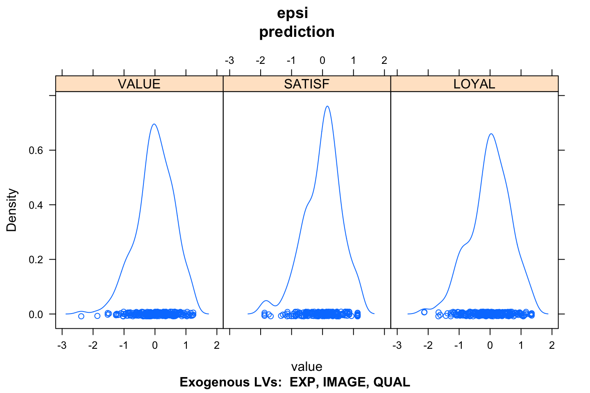
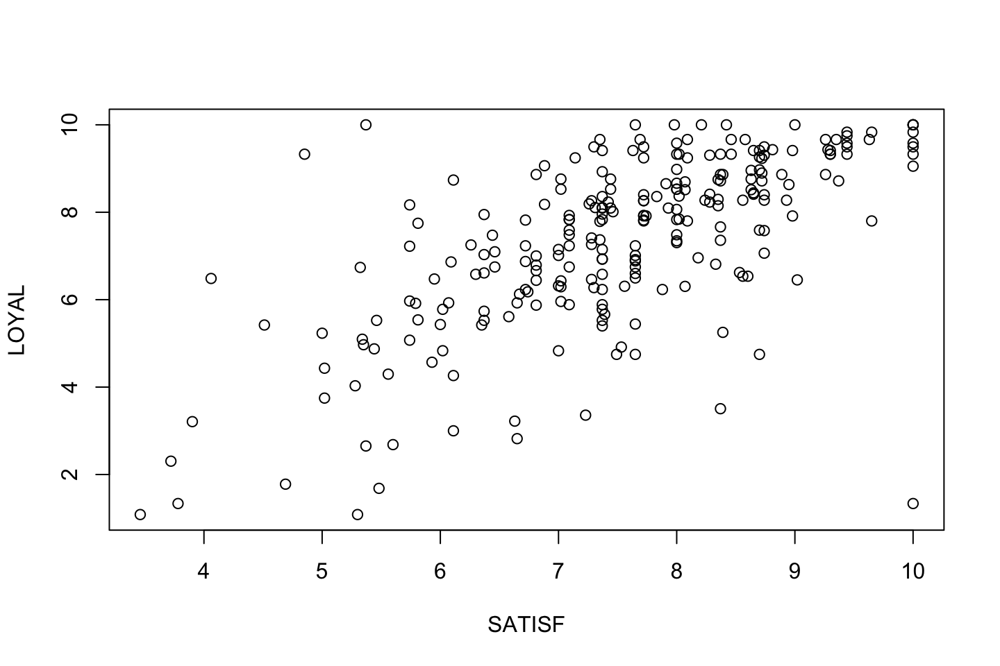
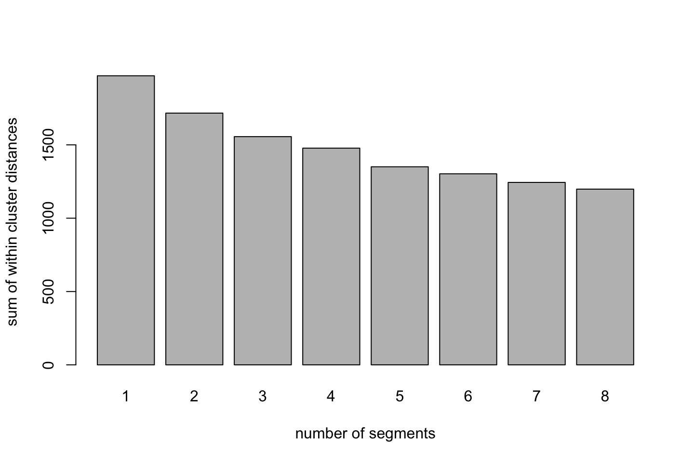
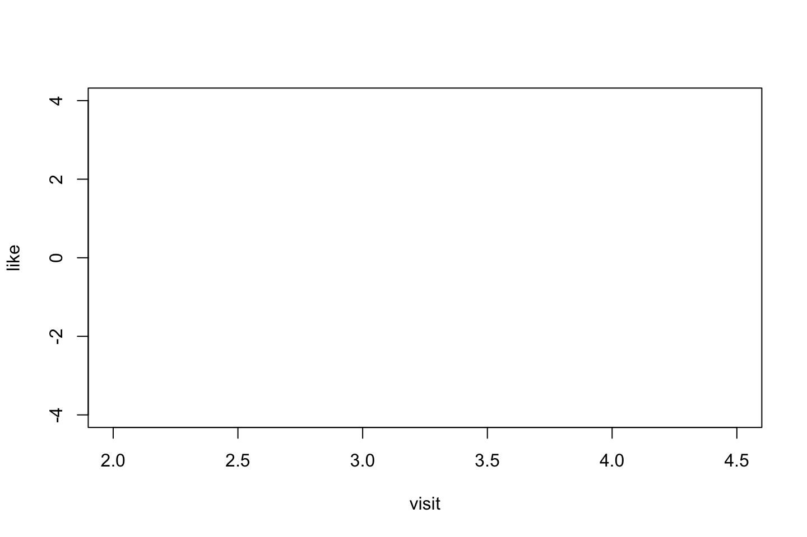

2 Customer Satisfaction and Loyalty
I’ll start of with some notes on constructing a survey.
2.1 Customer surveys
The following sections are separated into five subsections:
- Concepts and examples
- Sampling and response rate
- Pretesting and measurement validity
- Questionnaire design
- Question types
- Scale labeling
- Question style
- Social desirability bias
- Optimizing versus satisfaction
- Simple size
2.1.1 (1) Concepts and examples
We have six types of data:
- Customer identification data - information on the customer and who they are.
- Demographic data - information on a more macroscale, where they are from, ethnicities, age etc.
- Psychographic or lifestyle data - psychological characteristics and traits such as values, desires, goals, interests, and lifestyle choices.
- Transaction data - Do we have transactional information on the customer? What should it be used for and should it be preprocessed.
- Marketing action data
- Other types of data - e.g., financial and competitive data
To get such data we can have three different sources.
- Internal secondary data
- External secondary data
- Primary data - survey, focus groups, in depth-interviews, observational techniques. Notice that this is the most costly and time consuming, that is also why getting external secondary data can be extremely expensive.
Another thing that one must be aware of is innovation in survey designs, for instance, are we able to ask about what a customer wants in the future and if they answer. If you could rely on such answers, then I guess it would be very easy to be running a business.
In addition of this, it is often experienced, that people are reluctant to answer honestly in surveys, this can be due to several things, for instance you are:
- Forced to answer - hence no motivation
- You don’t care about the purpose - hence no motivation.
2.1.2 (2) Sampling and response rate
We need the sample to be representative of the population, e.g., equal amount of males and females to reflect real life. Naturally that comes down to what the purpose of the survey is.
We often get a problem with low response rate. And those that actually respond might share similarities, e.g., they are having a lot of free time, they need the rewards that you may get from answering etc. So you want to be cautous about how to get them to answer your survey.
We can overcome this by assigning statistical weigts to the underrepresented groups. Often we see that young and old adults, males and people with the highest income are underrepresented. Also there is a tendency to have few responses from busy people and those living in bigger cities.
On the other hand then people with low education and income is often overrepresented.
Then how to do the sampling?
We have the following two approaches:
- Non-probability sampling - this is pretty much taking whom ever you feel like, for instance sharing a questionnaire on facebook, hence it will be distributed to your friends etc. This is not representative
- Probability sampling - this is the go to approach. Here we have four approaches. This will be explained following the picture.

Sampling techniques
Probability sampling techniques
- Simple random sampling: that is just a computer randomly selecting numbers. And then you select these observations.
- Systematic sampling: we do 1) selecting a suitable sampling frame, 2) Each element is assigned a number from 1 to N (Population for instance Denmark), 3) Determine sampling interval, 4) Pcik every ith element in succession from the sampling frame.
- Stratified sampling: where you group people in different stratas. They can be assigned on one or more parameters. This is widely used. See an illustration below
- Cluster sampling.

Stratified sampling
Subconclusion
In the end, you always ask youself, is it representative. When you have the probabilty sampling methods, you randomly select a number of people that should answer, e.g., you selesct 1000, but only 543 answers, then do you know what people that actually replied, hence, do you know who answered and is it still representative? If you don’t know, then the data is very likely to be representative.
Also often people will answer because you ‘forced’ them to answer, hence they are not really reliable, as we don’t know how honest and thorough they where. That is also elaborated in the following slide. So again, if you need 1000 responses, and you force all 1000 to respond, then they will often just rush through and thus they are not reliable. Hence that is not better than not letting them answer.
2.1.3 (3) Pretesting and measurement validity
We need to pretest the sampling, the tradition way, conventional way. How we do it, is just giving the test to a couple of people and see if they understand the questions. This is key, because if they do not understand then you cannot expect that the mass will understand the questions. In general there are two approaches:
- Conventaional way: That is giving the questions to persons and they tell you their oppinion. One must be aware that this is very subjective and also a bit random.
- Moden pretesting way: This has two alternatives
- Behavior coding: you have a third person, an observer, will take notes about the responends actions.
- Cognitive pretesting: This is an alternative, the respondent must think out loud, hence verbalize whatever comes to mind when reading the questions.
Subconclusion
Conventional way has low reliability. And the behavior coding is the most reliable.
An complete alternative can be to have conversational interviews although this is very time consuming and often not applied.
2.1.4 (4) Questionnaire design
The following subsections will cover this.
(4a) Question types
Are we going to make open or closed questions. It has the following advantages and disadvantages.
Closed questions: Respondents answer what they are given, henve we need to cover the different outcomes to have their experience reflected correctly.
Open questions: Some respondents have difficulty of expressing their feelings or people just get lazy and not answer faithfully. Also you will have a ton of different answers.
Hence they both have pros and cons, so one must be aware of when to choose what.
In general we must be cautious about how we use strong words, like very, extreme etc. because it can have several meanings to each individual.
To avoid mistakes, we can setup a questionnaire with questions that are essentially the same, but framed different, to get an idea of what the person intent to ask and also how consistent he is (that being for instance a weak satisfier).
(4b) Scale labeling
It is very good to have both a range defined by words, e.g., going from very bad to very good.
Criticism of showing the numbers, let us say that it goes from -3 to 3, then the distance between -2 and -3 is one, but the numerical distance between two categories it not necessarily between -1 and -2. To solve this, people sometimes puts a line, e.g., between 0 and 100, then the repsonded is able to point out where he is on the range.
Also, even though we produce numbers, people tend to do quantitative regression, while it is in fact a categorical variable.
There are much criticism on using numbers. Also, the middle point, what does it mean, to the respondend it can be many many things.
(4c) Question style
Will it be an open or a closed question.
(4d) Social desirability bias
Imagine a questionnaire where you are asked about what happens in the past, for instance
over the last year, how many times pr. month on average have you eaten a burger? 1 time, 2 - 3 times, 4 - 5 times, more than five times, 0 times
This is often leading to over- and underreporting, as nobody can remember this.
Theory has lead to stages when answering questinons (this should be taken with a grain of salt), see the following.
Stages of answering questions
In short, one must look up what they have in their memory and then try to fit it into the boxes thzat you give them.
It is different how much effort a person is putting into the considerations, it can be generalized with:
- Optimizers: A thourough person really considering what to answer, these you want the most of.
- Weak satisfaction: This is just an optimizer which is less considerate.
- Strong satisficing: A person which will just select what he thinks is the most appropriate for the interviewer or researcher, these you do not want any of. This leads to the next section.
(4e) Optimizing versus satisfaction
Conditions to foster satisfaction. We need to make the questions as short as possible and use common words. It must be easy for them to understand to avoid them not to understand. This can be cooked down to:
- Task difficulty
- Respondents inability
- Respondents demotivation to optimize
We now that the order of questions does matter: it creates the following effects.
- Primacy effects: That being prone to select the first question, e.g., weak satisfiers seem to go for this one, because they are just not too considerate
- Recency effects: Often when solutions is presented orally then they go for the last option.
If we have a loooong list of questions, then people tend to either just agree or disagree. In general, people who want to save time, they tend to answer the same in each question, if they are similar.
2.1.5 (5) Simple size
We can infer this statistically. Notice this example assume only one predictor variable.
Sample size estimate
We see that:
- z = the confidence level, we go for 5% hence 1.96.
- D = The interval you want to be within
- sigma = Variance, notice that this must be estimated, as to get true sigma you need characteristics on the population, and we don’t really have that.
And now we can plug it into the function

Sample size inference example
Conducting a survey to estimate the monthly amount invested in savings schemes so that the estimate will be within 5 EUR, what would the sample size be?
And we see that we need 496 respondents.
Then what happens if we have multiple predictors?
Then we can infer for each predictor and take the largest value. A rule of thumb is that we need at least 5 observations for a predictor
2.2 NPS
# x <- ##The ratings go here
# library(NPS)
# prop.table(table(x))
# nps.se(x)
# nps.var(x)2.3 CFA and SEM Application Lavann
Data source: Hair et al., Multivariate Data Analysis, Pearson Education
2.3.1 Business Problem & Objectives
HBAT is a manufacturer of paper products who sells products to two market segments: the newsprint industry and the magazine industry. The current market is very competitive, so the manufacturer wants to understand how its customers perceive the company and make purchasing decisions, in order to enforce customers loyalty. The manufacturer commissioned a study asking its customers to complete a questionnaire on a secure website. In total, 100 customers - purchasing managers from different firms - buying from HBAT completed the questionnaire. The data consist of three main pieces of information:
• A 1st type of information is available from HBAT ́s data warehouse and includes information on:
- customer type in terms of length of purchase relationship (X1)
- industry type(X2)
- size of the customer(X3)
- region of the customer(X4)
- distribution system(X5)
• The 2nd type of information is collected based on the online questionnaire and includes consumers’ perceptions of HBAT ́s performance on 13 attributes using a continuous 0-10 (line) scale with 10 being “Excellent” and 0 being “Poor”. The 13 attributes are:
- X6 Product quality
- X7 E-commerce
- X8 Technical support
- X9 Complaint resolution
- X10 Advertising
- X11 Product line
- X12 Salesforce image
- X13 Competitive pricing
- X14 Warranty and claims
- X15 Packaging
- X16 Order and billing
- X17 Price flexibility
- X18 Delivery speed
• The 3rd type of information relates to purchase outcomes and business relationships:
- satisfaction with HBAT, future purchase intention etc. (X19-X22)
- whether the firm would consider a strategic alliance/partnership with HBAT (X23).
2.3.2 Data
The dataset (HBAT.sav) consists of data for n = 100 customers. Each observation contains information on 23 variables described above. Consistent with the marketing theory, there is an underlying factor structure in the data. When designing the study, the company has clearly 4 types of factors in their mind. They expect that the customer satisfaction is determined by the following four type of perceptions: perceptions about the product value, perceptions about the marketing actions, perceptions about the customer service and perceptions about the technical support.These factors are abstract constructs that can be measured in a survey using multi-item scales. The following items define each construct:
X18 Delivery Speed
X9 Complain resolution
X16 Order and Billing, to express “Customer service”
X11Product line
X6 Product quality
X13 Competing pricing, to express “Product value”
X12 Salesforce image
X7 E-commerce
X10 Advertising, to express “Marketing”
X8 Technical support
X14 Warranty and claims, to express “Technical support”
library(lavaan)library(foreign)
data <- read.spss("Data/CFA and SEM/HBAT.sav", to.data.frame=TRUE)2.3.2.1 EFA
In the following we are going to identify the factors and what variables that are related with the factors.
# Exploratory factor analysis (EFA): explicitly assumes the existence of latent factors underlying the observed data.
fit1 <- factanal(~ x6 + x7 + x8 + x9 + x10 + x11 + x12 + x13 + x14 + x15 + x16 + x17 + x18
,factors = 4
,data = data
,lower = 0.1
,rotation = "varimax")
print(fit1)##
## Call:
## factanal(x = ~x6 + x7 + x8 + x9 + x10 + x11 + x12 + x13 + x14 + x15 + x16 + x17 + x18, factors = 4, data = data, rotation = "varimax", lower = 0.1)
##
## Uniquenesses:
## x6 x7 x8 x9 x10 x11 x12 x13 x14 x15 x16 x17 x18
## 0.623 0.305 0.285 0.183 0.663 0.100 0.100 0.595 0.100 0.987 0.358 0.100 0.100
##
## Loadings:
## Factor1 Factor2 Factor3 Factor4
## x6 0.609
## x7 0.826
## x8 0.113 0.838
## x9 0.879 0.153 0.140
## x10 0.199 -0.128 0.530
## x11 0.500 0.814 0.115
## x12 0.125 -0.140 0.929
## x13 -0.561 0.219 -0.198
## x14 0.146 0.931
## x15 0.109
## x16 0.784 0.109 0.111
## x17 0.553 -0.750 0.204 -0.132
## x18 0.940 0.122 0.183
##
## Factor1 Factor2 Factor3 Factor4
## SS loadings 2.910 2.030 1.990 1.657
## Proportion Var 0.224 0.156 0.153 0.127
## Cumulative Var 0.224 0.380 0.533 0.661
##
## Test of the hypothesis that 4 factors are sufficient.
## The chi square statistic is 162.89 on 32 degrees of freedom.
## The p-value is 1.83e-19#We see that the p-value is highly signinficant, hence we reject the model.A first exploration of the factors using the EFA reveals the factor loadings for each observable variable. High loadings (>0.6 or > 0.7) are expected for the items that theoretically define each construct.
Items with cross-loadings should be removed.
One can observe:
- x9, x16, x17, x18 load high on Factor 1 (Customer service)
- x6, x11, x13, x17 load high on Factor 2 (Product value)
- x7, x10?, x12 load high on Factor 3 (Marketing)
- x8 and x14 load high on Factor 4 (Technical support)
x17 load high simultaneusly on two factors (Factor 1 and 2). This phenomenon is called “cross-loading”.
one needs to remove the items with cross-loading from the measurement model. It means they do not measure a single construct.
x11 might also be a candidate for deletion (loading high on factor 1 and 2); keep it for the moment.
one can delete x15 which does not have high loadings on ANY of the four factors. Very low loadings (<.10) are not displayed.
# Run EFA without x15 and x17
fit2 <- factanal(~ x6 + x7 + x8 + x9 + x10 + x11 + x12 + x13 + x14 + x16 + x18
,factors = 4
,data = data
,lower = 0.1
,rotation = "varimax")
print(fit2,sort = T)##
## Call:
## factanal(x = ~x6 + x7 + x8 + x9 + x10 + x11 + x12 + x13 + x14 + x16 + x18, factors = 4, data = data, rotation = "varimax", lower = 0.1)
##
## Uniquenesses:
## x6 x7 x8 x9 x10 x11 x12 x13 x14 x16 x18
## 0.635 0.305 0.285 0.163 0.668 0.100 0.100 0.599 0.100 0.342 0.100
##
## Loadings:
## Factor1 Factor2 Factor3 Factor4
## x9 0.895 0.135 0.128
## x16 0.796 0.105 0.108
## x18 0.918 0.193 0.154
## x7 0.827
## x10 0.180 0.537
## x12 0.127 0.928 -0.144
## x8 0.838 0.107
## x14 0.932 0.140
## x6 0.598
## x11 0.519 0.120 0.786
## x13 0.223 -0.202 -0.553
##
## Factor1 Factor2 Factor3 Factor4
## SS loadings 2.613 1.962 1.645 1.391
## Proportion Var 0.238 0.178 0.150 0.126
## Cumulative Var 0.238 0.416 0.565 0.692
##
## Test of the hypothesis that 4 factors are sufficient.
## The chi square statistic is 26.7 on 17 degrees of freedom.
## The p-value is 0.0626We want the cumulative variance to be above 60%, we see that we meet that criteria
- Test of the hypothesis that 4 factors are sufficient.
- The chi square statistic is 26.7 on 17 degrees of freedom.
- The p-value is 0.0626 (n.s.) hence we cannot reject, that there is a relationship.
Using eigen value to assess amount of factors to select.
# NOTE
library(nFactors)
ev <- eigen(cor(data[,c(7:19)]))
ev## eigen() decomposition
## $values
## [1] 3.567074795 2.997644547 1.738077491 1.287225051 1.005237601 0.618614261
## [7] 0.551427702 0.446993915 0.280735795 0.200708880 0.166195339 0.131058876
## [13] 0.009005747
##
## $vectors
## [,1] [,2] [,3] [,4] [,5] [,6]
## [1,] -0.008446162 0.36209283 0.04678935 0.47025543 -0.05007347 0.053218125
## [2,] -0.244268729 -0.25887463 -0.35900707 0.34222834 0.09769943 0.376718762
## [3,] -0.069090049 0.27405908 -0.52503623 -0.36487985 -0.01424126 -0.052463334
## [4,] -0.457137214 0.12307431 0.20045850 -0.10240177 0.08595970 0.056968447
## [5,] -0.255224876 -0.20968349 -0.18298044 0.32643625 -0.12554223 -0.780692662
## [6,] -0.252450282 0.42196215 0.10369985 0.21751972 0.03205501 0.163391859
## [7,] -0.290987483 -0.27281337 -0.35867289 0.29559280 0.01309635 0.195905988
## [8,] 0.008246314 -0.43224128 0.01407530 -0.15377746 -0.02328483 0.358023704
## [9,] -0.128457735 0.26796431 -0.52277710 -0.32283288 -0.13005779 0.001572649
## [10,] -0.065686377 -0.01201495 0.09504456 0.01527331 -0.97011829 0.145935408
## [11,] -0.430501041 0.10171830 0.16835005 -0.14893939 0.05661020 0.028760422
## [12,] -0.278546553 -0.37514985 0.14985400 -0.34574836 -0.01358671 -0.154763215
## [13,] -0.478712405 0.07283481 0.21649677 -0.08389812 0.03767846 0.020892771
## [,7] [,8] [,9] [,10] [,11] [,12]
## [1,] 0.66589654 -0.33225521 -0.22462438 0.007874262 0.18916547 0.004949852
## [2,] -0.20788462 -0.18096215 0.04333602 -0.568040361 0.12566307 0.242746705
## [3,] 0.12857096 -0.02143816 -0.36226254 -0.317860485 -0.37815324 -0.340652073
## [4,] 0.01886806 0.04489722 -0.30907596 0.143600911 -0.42151255 0.646668513
## [5,] 0.13799303 0.24702527 0.12615240 -0.132664225 -0.08789281 0.064371162
## [6,] -0.14409748 0.51451471 0.07780447 -0.095834270 0.07938639 -0.183829669
## [7,] -0.09050524 -0.06131073 -0.12450579 0.663204133 -0.14586925 -0.308660927
## [8,] 0.62750296 0.48310471 0.13005088 -0.074305149 -0.10264536 -0.009554218
## [9,] 0.10712744 0.07358489 0.29554570 0.264416777 0.46117870 0.360900790
## [10,] -0.10467064 -0.04524136 -0.02892652 -0.056036609 -0.08198456 -0.003969278
## [11,] 0.13766958 -0.40015006 0.66839914 -0.055764820 -0.26409100 -0.225868516
## [12,] 0.09410061 -0.28163148 -0.30107123 -0.053262879 0.37941812 -0.067534206
## [13,] -0.06694700 0.21116321 -0.20232546 -0.066810707 0.38574841 -0.296113322
## [,13]
## [1,] 0.003255188
## [2,] -0.024896668
## [3,] 0.007706804
## [4,] -0.014147290
## [5,] -0.012734529
## [6,] 0.575848184
## [7,] 0.049860958
## [8,] -0.017852976
## [9,] -0.013022281
## [10,] -0.011434967
## [11,] 0.008058268
## [12,] 0.534199397
## [13,] -0.615473481# EV = a measure of how much of varaince each factor explain.
# According to this, we select 5 factors, equal to the no. of values
# that is above 1.We defined the individual constructs based on the theory (Stage 1) and developed the overall measurement model making also a first exploration with EFA. The next stages (4 and 5) would be to assess the measurement model validity (Confirmatory Factor Analsysis). Lastly, stages 5 and 6 implies to specify the structural model (SEM) and to asssess the structural model validity.
Hence, the next two main operational tasks are:
- Set up a confirmatory factor analysis to confirm the measurement model
- Given the measurement model has been examined and validated in the CFA analysis, set up a SEM model, to test the structural relationships between the four constructs identified and the customers´ likelihood to continue doing business with HBAT (X19-Satisfaction, X20-Likelihood of recommendation and X21-Likelihood of future purchase).
variable.names(data)## [1] "id" "x1" "x2" "x3" "x4" "x5" "x6" "x7" "x8" "x9" "x10" "x11"
## [13] "x12" "x13" "x14" "x15" "x16" "x17" "x18" "x19" "x20" "x21" "x22" "x23"VariableLabels <- unname(attr(data, "variable.labels"))
# data.label.table <- attr(sav, "label.table") # if you load it with read_sav()
summary(data)## id x1 x2
## Min. : 1.00 Less than 1 year:32 Magazine industry :52
## 1st Qu.: 25.75 1 to 5 years :35 Newsprint industry:48
## Median : 50.50 Over 5 years :33
## Mean : 50.50
## 3rd Qu.: 75.25
## Max. :100.00
## x3 x4 x5
## Small (0 to 499):49 USA/North America :39 Indirect through broker:57
## Large (500+) :51 Outside North America:61 Direct to customer :43
##
##
##
##
## x6 x7 x8 x9
## Min. : 5.000 Min. :2.200 Min. :1.300 Min. :2.600
## 1st Qu.: 6.575 1st Qu.:3.275 1st Qu.:4.250 1st Qu.:4.600
## Median : 8.000 Median :3.600 Median :5.400 Median :5.450
## Mean : 7.810 Mean :3.672 Mean :5.365 Mean :5.442
## 3rd Qu.: 9.100 3rd Qu.:3.925 3rd Qu.:6.625 3rd Qu.:6.325
## Max. :10.000 Max. :5.700 Max. :8.500 Max. :7.800
## x10 x11 x12 x13
## Min. :1.900 Min. :2.300 Min. :2.900 Min. :3.700
## 1st Qu.:3.175 1st Qu.:4.700 1st Qu.:4.500 1st Qu.:5.875
## Median :4.000 Median :5.750 Median :4.900 Median :7.100
## Mean :4.010 Mean :5.805 Mean :5.123 Mean :6.974
## 3rd Qu.:4.800 3rd Qu.:6.800 3rd Qu.:5.800 3rd Qu.:8.400
## Max. :6.500 Max. :8.400 Max. :8.200 Max. :9.900
## x14 x15 x16 x17 x18
## Min. :4.100 Min. :1.70 Min. :2.000 Min. :2.60 Min. :1.600
## 1st Qu.:5.400 1st Qu.:4.10 1st Qu.:3.700 1st Qu.:3.70 1st Qu.:3.400
## Median :6.100 Median :5.00 Median :4.400 Median :4.35 Median :3.900
## Mean :6.043 Mean :5.15 Mean :4.278 Mean :4.61 Mean :3.886
## 3rd Qu.:6.600 3rd Qu.:6.30 3rd Qu.:4.800 3rd Qu.:5.60 3rd Qu.:4.425
## Max. :8.100 Max. :9.50 Max. :6.700 Max. :7.30 Max. :5.500
## x19 x20 x21 x22
## Min. :4.700 Min. :4.60 Min. :5.500 Min. :37.10
## 1st Qu.:6.000 1st Qu.:6.30 1st Qu.:7.100 1st Qu.:51.10
## Median :7.050 Median :7.00 Median :7.700 Median :58.60
## Mean :6.918 Mean :7.02 Mean :7.713 Mean :58.40
## 3rd Qu.:7.625 3rd Qu.:7.60 3rd Qu.:8.400 3rd Qu.:65.35
## Max. :9.900 Max. :9.90 Max. :9.900 Max. :77.10
## x23
## No, would not consider:55
## Yes, would consider :45
##
##
##
## 2.3.2.2 CFA model
We use CFA to iterate through different models.
2.3.2.2.1 Initial model
- CS = Customer Service
- PV = Product value
- MK = Marketing
- TS = Technical support
CFA.model <- 'CS =~ x18 + x9 + x16
PV =~ x11 + x6 + x13
MK =~ x12 + x7 + x10
TS =~ x8 + x14
# Correlations between exogeneous constructs are optional because
# by default, all exogenous latent variables in a CFA model are allowed to correlate
CS ~~ PV
CS ~~ MK
CS ~~ TS
PV ~~ MK
PV ~~ TS
MK ~~ TS'
# fit the model
fit <- cfa(CFA.model, data = data)
# display summary output
summary(fit
, fit.measures=TRUE
, standardized = TRUE
, modindices = FALSE) #If TRUE, then we would get modificantion index## lavaan 0.6-7 ended normally after 53 iterations
##
## Estimator ML
## Optimization method NLMINB
## Number of free parameters 28
##
## Number of observations 100
##
## Model Test User Model:
##
## Test statistic 61.835
## Degrees of freedom 38
## P-value (Chi-square) 0.009
##
## Model Test Baseline Model:
##
## Test statistic 655.315
## Degrees of freedom 55
## P-value 0.000
##
## User Model versus Baseline Model:
##
## Comparative Fit Index (CFI) 0.960
## Tucker-Lewis Index (TLI) 0.943
##
## Loglikelihood and Information Criteria:
##
## Loglikelihood user model (H0) -1349.559
## Loglikelihood unrestricted model (H1) -1318.642
##
## Akaike (AIC) 2755.119
## Bayesian (BIC) 2828.064
## Sample-size adjusted Bayesian (BIC) 2739.632
##
## Root Mean Square Error of Approximation:
##
## RMSEA 0.079
## 90 Percent confidence interval - lower 0.040
## 90 Percent confidence interval - upper 0.114
## P-value RMSEA <= 0.05 0.097
##
## Standardized Root Mean Square Residual:
##
## SRMR 0.087
##
## Parameter Estimates:
##
## Standard errors Standard
## Information Expected
## Information saturated (h1) model Structured
##
## Latent Variables:
## Estimate Std.Err z-value P(>|z|) Std.lv Std.all
## CS =~
## x18 1.000 0.703 0.961
## x9 1.549 0.099 15.657 0.000 1.088 0.905
## x16 1.035 0.092 11.198 0.000 0.727 0.787
## PV =~
## x11 1.000 1.547 1.182
## x6 0.360 0.103 3.515 0.000 0.558 0.401
## x13 -0.385 0.112 -3.444 0.001 -0.596 -0.388
## MK =~
## x12 1.000 1.071 1.003
## x7 0.514 0.064 8.009 0.000 0.550 0.789
## x10 0.566 0.104 5.434 0.000 0.605 0.540
## TS =~
## x8 1.000 1.014 0.666
## x14 0.962 0.391 2.461 0.014 0.976 1.197
##
## Covariances:
## Estimate Std.Err z-value P(>|z|) Std.lv Std.all
## CS ~~
## PV 0.608 0.113 5.406 0.000 0.560 0.560
## MK 0.204 0.080 2.558 0.011 0.271 0.271
## TS 0.089 0.075 1.190 0.234 0.125 0.125
## PV ~~
## MK 0.006 0.136 0.042 0.967 0.003 0.003
## TS 0.265 0.176 1.506 0.132 0.169 0.169
## MK ~~
## TS 0.120 0.106 1.126 0.260 0.110 0.110
##
## Variances:
## Estimate Std.Err z-value P(>|z|) Std.lv Std.all
## .x18 0.040 0.018 2.242 0.025 0.040 0.076
## .x9 0.261 0.056 4.675 0.000 0.261 0.181
## .x16 0.325 0.051 6.396 0.000 0.325 0.381
## .x11 -0.681 0.427 -1.596 0.111 -0.681 -0.398
## .x6 1.619 0.229 7.065 0.000 1.619 0.839
## .x13 2.008 0.283 7.096 0.000 2.008 0.850
## .x12 -0.008 0.112 -0.070 0.944 -0.008 -0.007
## .x7 0.183 0.039 4.665 0.000 0.183 0.378
## .x10 0.891 0.131 6.806 0.000 0.891 0.708
## .x8 1.290 0.440 2.929 0.003 1.290 0.556
## .x14 -0.288 0.373 -0.770 0.441 -0.288 -0.432
## CS 0.494 0.077 6.392 0.000 1.000 1.000
## PV 2.394 0.472 5.076 0.000 1.000 1.000
## MK 1.146 0.196 5.843 0.000 1.000 1.000
## TS 1.029 0.485 2.122 0.034 1.000 1.000# Check the model fit (see slides for references).
# NOTE: we get "lavaan WARNING: some estimated ov variances are negative".
# This is called in the literature "Heywood case". Heywood cases or negative variance estimates, are a common occurrence in factor analysis and latent variable structural equation models.
# There are several potential causes (https://journals.sagepub.com/doi/10.1177/0049124112442138). Here,eliminating the problematic item x11, will solve the problem. We see that we want to maximize TLI and CFI towards 1. Atm it looks well.
We want the RMSEA (Root Mean Square Error of Approximation) to be below the 5% level. This we obtain in this example with pointe estimate of 0.079 where the 5% level is at 0.097, hence we are below. She writes in the slides (54) that we just need to be below 8%, this we also meet. she also writes that above 10% is a poor fit.
We see that we get a warning, that is because there are negative variances, this is because of variable 11, that we ended up leaving in the model.
Now we can ask for the modification indexes.
# Ask for the modification indiceslin
modificationindices(fit
,sort = T
,minimum.value = 10
,op = "~~")| lhs | op | rhs | mi | epc | sepc.lv | sepc.all | sepc.nox | |
|---|---|---|---|---|---|---|---|---|
| 68 | x18 | ~~ | x11 | 15.70319 | 0.1283451 | 0.1283451 | 0.7733247 | 0.7733247 |
| 69 | x18 | ~~ | x6 | 11.22736 | -0.1347114 | -0.1347114 | -0.5264974 | -0.5264974 |
| 85 | x16 | ~~ | x11 | 10.73299 | -0.1541396 | -0.1541396 | -0.3274085 | -0.3274085 |
# MI reveal that x11 is correlated with x16 and x18; it means that x11 has substantial cross-loading on two factors (we also found this in EFA). Cross-loading goes against one of the principles of unidimensionality in SEM. We delete x11 from the analysis and re-run CFA. This confirms that we must do something with x11 (it should have been done in the exploratory assessment, but it was kept to show it)
2.3.2.2.2 Second model
Model without x11
Notice that the EFA already suggested this, but we wanted to explore how it affected the overall model. And we end up seeing the consensus that we need to do something with V11.
# CFA model after deleting x11
set.seed(1234)
CFA.model <- 'CS =~ x18 + x9 + x16
PV =~ x6 + x13
MK =~ x12 + x7 + x10
TS =~ x8 + x14'
# fit the model
fit <- cfa(CFA.model, data = data)
# display summary output
summary(fit, fit.measures=TRUE, standardized = TRUE, modindices = FALSE)## lavaan 0.6-7 ended normally after 60 iterations
##
## Estimator ML
## Optimization method NLMINB
## Number of free parameters 26
##
## Number of observations 100
##
## Model Test User Model:
##
## Test statistic 18.183
## Degrees of freedom 29
## P-value (Chi-square) 0.940
##
## Model Test Baseline Model:
##
## Test statistic 530.377
## Degrees of freedom 45
## P-value 0.000
##
## User Model versus Baseline Model:
##
## Comparative Fit Index (CFI) 1.000
## Tucker-Lewis Index (TLI) 1.035
##
## Loglikelihood and Information Criteria:
##
## Loglikelihood user model (H0) -1221.406
## Loglikelihood unrestricted model (H1) -1212.314
##
## Akaike (AIC) 2494.812
## Bayesian (BIC) 2562.546
## Sample-size adjusted Bayesian (BIC) 2480.432
##
## Root Mean Square Error of Approximation:
##
## RMSEA 0.000
## 90 Percent confidence interval - lower 0.000
## 90 Percent confidence interval - upper 0.016
## P-value RMSEA <= 0.05 0.989
##
## Standardized Root Mean Square Residual:
##
## SRMR 0.039
##
## Parameter Estimates:
##
## Standard errors Standard
## Information Expected
## Information saturated (h1) model Structured
##
## Latent Variables:
## Estimate Std.Err z-value P(>|z|) Std.lv Std.all
## CS =~
## x18 1.000 0.677 0.926
## x9 1.658 0.113 14.664 0.000 1.123 0.934
## x16 1.107 0.098 11.294 0.000 0.749 0.811
## PV =~
## x6 1.000 0.625 0.450
## x13 -2.197 0.962 -2.284 0.022 -1.372 -0.893
## MK =~
## x12 1.000 1.066 0.999
## x7 0.518 0.063 8.249 0.000 0.552 0.792
## x10 0.571 0.103 5.531 0.000 0.609 0.543
## TS =~
## x8 1.000 1.280 0.841
## x14 0.604 0.135 4.467 0.000 0.774 0.948
##
## Covariances:
## Estimate Std.Err z-value P(>|z|) Std.lv Std.all
## CS ~~
## PV 0.055 0.054 1.022 0.307 0.131 0.131
## MK 0.191 0.077 2.471 0.013 0.265 0.265
## TS 0.123 0.097 1.272 0.203 0.142 0.142
## PV ~~
## MK -0.199 0.112 -1.774 0.076 -0.299 -0.299
## TS 0.239 0.144 1.665 0.096 0.299 0.299
## MK ~~
## TS 0.127 0.145 0.880 0.379 0.093 0.093
##
## Variances:
## Estimate Std.Err z-value P(>|z|) Std.lv Std.all
## .x18 0.076 0.022 3.434 0.001 0.076 0.142
## .x9 0.185 0.059 3.137 0.002 0.185 0.128
## .x16 0.292 0.048 6.108 0.000 0.292 0.342
## .x6 1.540 0.268 5.750 0.000 1.540 0.798
## .x13 0.480 0.756 0.635 0.525 0.480 0.203
## .x12 0.003 0.106 0.026 0.979 0.003 0.002
## .x7 0.181 0.038 4.714 0.000 0.181 0.372
## .x10 0.887 0.130 6.813 0.000 0.887 0.705
## .x8 0.681 0.362 1.882 0.060 0.681 0.294
## .x14 0.067 0.128 0.523 0.601 0.067 0.100
## CS 0.458 0.077 5.936 0.000 1.000 1.000
## PV 0.390 0.227 1.721 0.085 1.000 1.000
## MK 1.136 0.193 5.886 0.000 1.000 1.000
## TS 1.638 0.469 3.494 0.000 1.000 1.0002.3.2.2.2.1 Intepretation of the model
2.3.2.2.2.1.1 1.) Examine the MODEL FIT
a much better fit than we obtained before
A decent model requires:
- CFI >.90,
- TLI>.90,
- RMSEA< 0.08,
- SRMR <.0.08.
Check these indexes of model fit in your summary.
2.3.2.2.2.1.2 2). Examine the LOADINGS significance, size and sign
The (std.) loadings should be at least +-.40. It is desirable to have high and significant loadings - it reflects items convergent validity.
In one factor 2, competitive pricing (x13) and product quality (x6) have opposite signs. It means that the product quality and competitive pricing vary together, but move in direction opposite to each other. Perceptions are more positive whether product quality increases or price decreases. This trade-off leads to naming the factor product value. When variables have different signs, we need to be careful to reverse one when creating summated scales or using further in SEM analysis.
Reverse scoring is the process by which the data values for a variable are reversed so that its correlation with the other variables are reversed (go from negative to positive). The purpose of reversing is to prevent a canceling out of variables with positive and negative loading. Reverse coding is typically required if we have some negatively phrased statement items in our questionnaire. For a categorical variable e.g. 1-5, the reversing implies: 1->5, 2->4, 3->2, 4->1, 5->1 For a continous variable: newvar = oldvar * (-1)
summary(data$x13)
str(data$x13)
# reversing X13 :
library(dplyr)
library(tidyr)
data <- data %>%
mutate(x13r = x13 * (-1))
str(data$x13r)## Min. 1st Qu. Median Mean 3rd Qu. Max.
## 3.700 5.875 7.100 6.974 8.400 9.900
## num [1:100] 6.8 5.3 4.5 8.8 6.8 8.5 8.9 6.9 9.3 8.4 ...
## num [1:100] -6.8 -5.3 -4.5 -8.8 -6.8 -8.5 -8.9 -6.9 -9.3 -8.4 ...2.3.2.2.2.1.3 3). Examine RELIABILITY of the factors
Reliability = assessment of degree of consistency between multiple measurements of a variable (back to the slides to refer to this concept).
library(semTools)
semTools::reliability(fit)## CS PV MK TS
## alpha 0.8971043 -1.3290821 0.7829833 0.7977744
## omega 0.9214780 0.2168081 0.8224869 0.8494229
## omega2 0.9214780 0.2168081 0.8224869 0.8494229
## omega3 0.9215495 0.2168081 0.8225741 0.8494228
## avevar 0.8046227 0.5294845 0.6286031 0.7495027# alpha = coefficient alpha (Cronbach, 1951) - should be > than 0.5 or 0.6 (some textbooks)
# omega = is similar to composite reliability index (CR) (Fornell & Larcker (1981) - should be > 0.7
# avevar = average variance extracted (AVE) (Fornell & Larcker (1981)) - should be > than 0.5.
# For PV factor, reliability was calculed with the non-reversed item; let´s change that:We want the avevar to be above 0.60.
The omega is the composite reliability, it should be higher than 0.7.
We want the alpha to be close to 1.
We see that PV is not meeting the two above. that is because we have a negative variable.
Now we are going to reverse x13 to make the construct PV meet the requirements (or at least get closer to)
set.seed(1234)
CFA.model <- '
# Measurement model
CS =~ x18 + x9 + x16
PV =~ x6 + x13r
MK =~ x12 + x7 + x10
TS =~ x8 + x14'
fit <- cfa(CFA.model, data = data)
summary(fit, fit.measures=TRUE, standardized = TRUE, modindices = FALSE)## lavaan 0.6-7 ended normally after 60 iterations
##
## Estimator ML
## Optimization method NLMINB
## Number of free parameters 26
##
## Number of observations 100
##
## Model Test User Model:
##
## Test statistic 18.183
## Degrees of freedom 29
## P-value (Chi-square) 0.940
##
## Model Test Baseline Model:
##
## Test statistic 530.377
## Degrees of freedom 45
## P-value 0.000
##
## User Model versus Baseline Model:
##
## Comparative Fit Index (CFI) 1.000
## Tucker-Lewis Index (TLI) 1.035
##
## Loglikelihood and Information Criteria:
##
## Loglikelihood user model (H0) -1221.406
## Loglikelihood unrestricted model (H1) -1212.314
##
## Akaike (AIC) 2494.812
## Bayesian (BIC) 2562.546
## Sample-size adjusted Bayesian (BIC) 2480.432
##
## Root Mean Square Error of Approximation:
##
## RMSEA 0.000
## 90 Percent confidence interval - lower 0.000
## 90 Percent confidence interval - upper 0.016
## P-value RMSEA <= 0.05 0.989
##
## Standardized Root Mean Square Residual:
##
## SRMR 0.039
##
## Parameter Estimates:
##
## Standard errors Standard
## Information Expected
## Information saturated (h1) model Structured
##
## Latent Variables:
## Estimate Std.Err z-value P(>|z|) Std.lv Std.all
## CS =~
## x18 1.000 0.677 0.926
## x9 1.658 0.113 14.664 0.000 1.123 0.934
## x16 1.107 0.098 11.294 0.000 0.749 0.811
## PV =~
## x6 1.000 0.625 0.450
## x13r 2.197 0.962 2.284 0.022 1.372 0.893
## MK =~
## x12 1.000 1.066 0.999
## x7 0.518 0.063 8.249 0.000 0.552 0.792
## x10 0.571 0.103 5.531 0.000 0.609 0.543
## TS =~
## x8 1.000 1.280 0.841
## x14 0.604 0.135 4.467 0.000 0.774 0.948
##
## Covariances:
## Estimate Std.Err z-value P(>|z|) Std.lv Std.all
## CS ~~
## PV 0.055 0.054 1.022 0.307 0.131 0.131
## MK 0.191 0.077 2.471 0.013 0.265 0.265
## TS 0.123 0.097 1.272 0.203 0.142 0.142
## PV ~~
## MK -0.199 0.112 -1.774 0.076 -0.299 -0.299
## TS 0.239 0.144 1.665 0.096 0.299 0.299
## MK ~~
## TS 0.127 0.145 0.880 0.379 0.093 0.093
##
## Variances:
## Estimate Std.Err z-value P(>|z|) Std.lv Std.all
## .x18 0.076 0.022 3.434 0.001 0.076 0.142
## .x9 0.185 0.059 3.137 0.002 0.185 0.128
## .x16 0.292 0.048 6.108 0.000 0.292 0.342
## .x6 1.540 0.268 5.750 0.000 1.540 0.798
## .x13r 0.480 0.756 0.635 0.525 0.480 0.203
## .x12 0.003 0.106 0.026 0.979 0.003 0.002
## .x7 0.181 0.038 4.714 0.000 0.181 0.372
## .x10 0.887 0.130 6.813 0.000 0.887 0.705
## .x8 0.681 0.362 1.882 0.060 0.681 0.294
## .x14 0.067 0.128 0.523 0.601 0.067 0.100
## CS 0.458 0.077 5.936 0.000 1.000 1.000
## PV 0.390 0.227 1.721 0.085 1.000 1.000
## MK 1.136 0.193 5.886 0.000 1.000 1.000
## TS 1.638 0.469 3.494 0.000 1.000 1.000 semTools::reliability(fit)## CS PV MK TS
## alpha 0.8971043 0.5706463 0.7829833 0.7977744
## omega 0.9214780 0.6637334 0.8224869 0.8494229
## omega2 0.9214780 0.6637334 0.8224869 0.8494229
## omega3 0.9215495 0.6637332 0.8225741 0.8494228
## avevar 0.8046227 0.5294845 0.6286031 0.7495027given alpha, omega and avevar values overpass the recommended values, one can conclude that all factors display good reliability.
Although it does not appear as if the PV avevar does not meet the 60% goal.
With x13 reversed, we see that the model is far better. Although it does not entirely meet the requirements.
2.3.2.2.2.1.4 4). Examine DISCRIMINANT VALIDITY of the factors
each pair of latent correlations (correlations between the principal components) should be sufficiently below 1 (in absolute value), that the latent variables can be thought of representing two distinct contructs. (to recall, back to the slides to refer to this concept).
discriminantValidity(fit, merge=TRUE)| lhs | op | rhs | est | ci.lower | ci.upper | Df | AIC | BIC | Chisq | Chisq diff | Df diff | Pr(>Chisq) |
|---|---|---|---|---|---|---|---|---|---|---|---|---|
| CS | ~~ | PV | 0.1305940 | -0.0961131 | 0.3573012 | 32 | 2522.142 | 2582.061 | 51.51374 | 33.33044 | 3 | 3.00e-07 |
| CS | ~~ | MK | 0.2650079 | 0.0744574 | 0.4555583 | 32 | 2623.696 | 2683.615 | 153.06726 | 134.88395 | 3 | 0.00e+00 |
| CS | ~~ | TS | 0.1420574 | -0.0659618 | 0.3500766 | 32 | 2596.806 | 2656.725 | 126.17795 | 107.99464 | 3 | 0.00e+00 |
| PV | ~~ | MK | -0.2993652 | -0.5271069 | -0.0716235 | 32 | 2514.275 | 2574.194 | 43.64625 | 25.46294 | 3 | 1.24e-05 |
| PV | ~~ | TS | 0.2992056 | 0.0620862 | 0.5363251 | 32 | 2517.564 | 2577.483 | 46.93603 | 28.75273 | 3 | 2.50e-06 |
| MK | ~~ | TS | 0.0934218 | -0.1100485 | 0.2968921 | 32 | 2598.582 | 2658.501 | 127.95325 | 109.76994 | 3 | 0.00e+00 |
Output:
- The first set are factor correlation estimates and their confidence intervals.
- Are these correlations sufficiently low to claim discriminant validity of the four constructs?
- Based on Fornell & Larcker (1981), the square root of each construct´s AVE should have a greater value than the inter-constructs corelations (alternatitvely, AVE > corr^2). Let us check that:
reliability_out = reliability (fit)
AVEs = reliability_out[5,]
sqrtAVEs = sqrt(AVEs)
sqrtAVEs## CS PV MK TS
## 0.8970076 0.7276569 0.7928449 0.8657383Comparing the inter-constructs correlations (see “est”" column in the output of discriminantValidity(fit, merge=TRUE)) with the sqrtAVEs, we conclude that cf. Fornell & Larcker (1981) criterion, the four constructss display significant discriminat validity.
Now we can plot the CFA. notice that the arrows are not yet directed hence you have not yet imposed the structure that we are going to do in SEM.
2.3.2.3 SEM
NOTE: Three variables were not included in the CFA (x11, x15, x17) as these did not meet the assumptions, reasoning both in the EFA and CFA for x11.
Reason: These variables did not load high on any of the main constructs If they are important, they can be treated as separate explanatory variables in SEM last DV in our SEM model will be x19-Satisfaction. in other words, we build a model to explain x19
Notice that we are also continuing to use the reversed version of x13r.
SEM.model1 <- '
# Measurement model
CS =~ x18 + x9 + x16
PV =~ x6 + x13r
MK =~ x12 + x7 + x10
TS =~ x8 + x14
# Structural model
x19 ~ CS + PV + MK + TS'Now we can fit the model
fitSEM1 <- sem(SEM.model1
,data=data
,se="robust"
,estimator = "ML") #Maximum Likelihood, that is the standard
summary(fitSEM1, fit.measures=TRUE, standardized = TRUE, rsquare=TRUE)## lavaan 0.6-7 ended normally after 60 iterations
##
## Estimator ML
## Optimization method NLMINB
## Number of free parameters 31
##
## Number of observations 100
##
## Model Test User Model:
##
## Test statistic 32.225
## Degrees of freedom 35
## P-value (Chi-square) 0.603
##
## Model Test Baseline Model:
##
## Test statistic 688.965
## Degrees of freedom 55
## P-value 0.000
##
## User Model versus Baseline Model:
##
## Comparative Fit Index (CFI) 1.000
## Tucker-Lewis Index (TLI) 1.007
##
## Loglikelihood and Information Criteria:
##
## Loglikelihood user model (H0) -1308.074
## Loglikelihood unrestricted model (H1) -1291.961
##
## Akaike (AIC) 2678.148
## Bayesian (BIC) 2758.908
## Sample-size adjusted Bayesian (BIC) 2661.002
##
## Root Mean Square Error of Approximation:
##
## RMSEA 0.000
## 90 Percent confidence interval - lower 0.000
## 90 Percent confidence interval - upper 0.064
## P-value RMSEA <= 0.05 0.877
##
## Standardized Root Mean Square Residual:
##
## SRMR 0.064
##
## Parameter Estimates:
##
## Standard errors Robust.sem
## Information Expected
## Information saturated (h1) model Structured
##
## Latent Variables:
## Estimate Std.Err z-value P(>|z|) Std.lv Std.all
## CS =~
## x18 1.000 0.678 0.928
## x9 1.652 0.127 12.995 0.000 1.120 0.932
## x16 1.106 0.102 10.858 0.000 0.750 0.812
## PV =~
## x6 1.000 1.126 0.810
## x13r 0.676 0.125 5.422 0.000 0.761 0.495
## MK =~
## x12 1.000 1.150 1.078
## x7 0.447 0.048 9.309 0.000 0.514 0.737
## x10 0.466 0.063 7.340 0.000 0.535 0.478
## TS =~
## x8 1.000 1.057 0.694
## x14 0.886 0.452 1.960 0.050 0.936 1.148
##
## Regressions:
## Estimate Std.Err z-value P(>|z|) Std.lv Std.all
## x19 ~
## CS 0.787 0.116 6.758 0.000 0.534 0.450
## PV 0.663 0.110 6.022 0.000 0.746 0.629
## MK 0.518 0.078 6.671 0.000 0.595 0.502
## TS -0.039 0.045 -0.870 0.384 -0.042 -0.035
##
## Covariances:
## Estimate Std.Err z-value P(>|z|) Std.lv Std.all
## CS ~~
## PV 0.090 0.099 0.912 0.362 0.118 0.118
## MK 0.181 0.083 2.194 0.028 0.232 0.232
## TS 0.099 0.091 1.088 0.277 0.138 0.138
## PV ~~
## MK -0.269 0.146 -1.838 0.066 -0.208 -0.208
## TS 0.131 0.142 0.920 0.357 0.110 0.110
## MK ~~
## TS 0.137 0.131 1.046 0.296 0.112 0.112
##
## Variances:
## Estimate Std.Err z-value P(>|z|) Std.lv Std.all
## .x18 0.074 0.017 4.328 0.000 0.074 0.139
## .x9 0.191 0.045 4.274 0.000 0.191 0.132
## .x16 0.291 0.041 7.080 0.000 0.291 0.341
## .x6 0.663 0.203 3.261 0.001 0.663 0.343
## .x13r 1.784 0.206 8.662 0.000 1.784 0.755
## .x12 -0.184 0.085 -2.161 0.031 -0.184 -0.162
## .x7 0.222 0.037 6.005 0.000 0.222 0.456
## .x10 0.971 0.113 8.580 0.000 0.971 0.772
## .x8 1.201 0.576 2.083 0.037 1.201 0.518
## .x14 -0.212 0.424 -0.499 0.618 -0.212 -0.318
## .x19 0.170 0.087 1.963 0.050 0.170 0.121
## CS 0.460 0.077 5.942 0.000 1.000 1.000
## PV 1.267 0.261 4.861 0.000 1.000 1.000
## MK 1.322 0.186 7.119 0.000 1.000 1.000
## TS 1.118 0.645 1.734 0.083 1.000 1.000
##
## R-Square:
## Estimate
## x18 0.861
## x9 0.868
## x16 0.659
## x6 0.657
## x13r 0.245
## x12 NA
## x7 0.544
## x10 0.228
## x8 0.482
## x14 NA
## x19 0.879If the message “lavaan WARNING: some estimated ov variances are negative” shows up. In this case, the problematic items are x12 and x14. It reflects that we would need more quality data and more items per construct to run this model.
We set se=“robust” to produce robust standard errors; setting se=“boot” or se=“bootstrap” will produce bootstrap standard errors.
Now we can check the information critera / indexes as we did in the CFA. The following is a summary of all important criteria.
fitmeasures(fit) # alternative summary## npar fmin chisq df
## 26.000 0.091 18.183 29.000
## pvalue baseline.chisq baseline.df baseline.pvalue
## 0.940 530.377 45.000 0.000
## cfi tli nnfi rfi
## 1.000 1.035 1.035 0.947
## nfi pnfi ifi rni
## 0.966 0.622 1.022 1.022
## logl unrestricted.logl aic bic
## -1221.406 -1212.314 2494.812 2562.546
## ntotal bic2 rmsea rmsea.ci.lower
## 100.000 2480.432 0.000 0.000
## rmsea.ci.upper rmsea.pvalue rmr rmr_nomean
## 0.016 0.989 0.048 0.048
## srmr srmr_bentler srmr_bentler_nomean crmr
## 0.039 0.039 0.039 0.043
## crmr_nomean srmr_mplus srmr_mplus_nomean cn_05
## 0.043 0.039 0.039 235.044
## cn_01 gfi agfi pgfi
## 273.711 0.966 0.935 0.509
## mfi ecvi
## 1.056 0.702Next, check the structural coeficients in summary(). Output partially reproduced below:
Regressions:
Estimate Std.Err z-value P(>|z|) Std.lv Std.all
x19 ~
CS 0.787 0.116 6.758 0.000 0.534 0.450
PV 0.663 0.110 6.022 0.000 0.746 0.629
MK 0.518 0.078 6.671 0.000 0.595 0.502
TS -0.039 0.045 -0.870 0.384 -0.042 -0.035
Concl.: Customers perceptions about CS, PV and MK are positively and significantly correlated with satisfaction. TS (Technical Service) perceptions is not significantly related to customer satisfaction.
check modification indices if relevant
summary(fitSEM1, fit.measures=TRUE, standardized = TRUE, rsquare=TRUE, modindices=TRUE)
modificationindices(fitSEM1, sort = T, minimum.value = 10, op = "~~")## lavaan 0.6-7 ended normally after 60 iterations
##
## Estimator ML
## Optimization method NLMINB
## Number of free parameters 31
##
## Number of observations 100
##
## Model Test User Model:
##
## Test statistic 32.225
## Degrees of freedom 35
## P-value (Chi-square) 0.603
##
## Model Test Baseline Model:
##
## Test statistic 688.965
## Degrees of freedom 55
## P-value 0.000
##
## User Model versus Baseline Model:
##
## Comparative Fit Index (CFI) 1.000
## Tucker-Lewis Index (TLI) 1.007
##
## Loglikelihood and Information Criteria:
##
## Loglikelihood user model (H0) -1308.074
## Loglikelihood unrestricted model (H1) -1291.961
##
## Akaike (AIC) 2678.148
## Bayesian (BIC) 2758.908
## Sample-size adjusted Bayesian (BIC) 2661.002
##
## Root Mean Square Error of Approximation:
##
## RMSEA 0.000
## 90 Percent confidence interval - lower 0.000
## 90 Percent confidence interval - upper 0.064
## P-value RMSEA <= 0.05 0.877
##
## Standardized Root Mean Square Residual:
##
## SRMR 0.064
##
## Parameter Estimates:
##
## Standard errors Robust.sem
## Information Expected
## Information saturated (h1) model Structured
##
## Latent Variables:
## Estimate Std.Err z-value P(>|z|) Std.lv Std.all
## CS =~
## x18 1.000 0.678 0.928
## x9 1.652 0.127 12.995 0.000 1.120 0.932
## x16 1.106 0.102 10.858 0.000 0.750 0.812
## PV =~
## x6 1.000 1.126 0.810
## x13r 0.676 0.125 5.422 0.000 0.761 0.495
## MK =~
## x12 1.000 1.150 1.078
## x7 0.447 0.048 9.309 0.000 0.514 0.737
## x10 0.466 0.063 7.340 0.000 0.535 0.478
## TS =~
## x8 1.000 1.057 0.694
## x14 0.886 0.452 1.960 0.050 0.936 1.148
##
## Regressions:
## Estimate Std.Err z-value P(>|z|) Std.lv Std.all
## x19 ~
## CS 0.787 0.116 6.758 0.000 0.534 0.450
## PV 0.663 0.110 6.022 0.000 0.746 0.629
## MK 0.518 0.078 6.671 0.000 0.595 0.502
## TS -0.039 0.045 -0.870 0.384 -0.042 -0.035
##
## Covariances:
## Estimate Std.Err z-value P(>|z|) Std.lv Std.all
## CS ~~
## PV 0.090 0.099 0.912 0.362 0.118 0.118
## MK 0.181 0.083 2.194 0.028 0.232 0.232
## TS 0.099 0.091 1.088 0.277 0.138 0.138
## PV ~~
## MK -0.269 0.146 -1.838 0.066 -0.208 -0.208
## TS 0.131 0.142 0.920 0.357 0.110 0.110
## MK ~~
## TS 0.137 0.131 1.046 0.296 0.112 0.112
##
## Variances:
## Estimate Std.Err z-value P(>|z|) Std.lv Std.all
## .x18 0.074 0.017 4.328 0.000 0.074 0.139
## .x9 0.191 0.045 4.274 0.000 0.191 0.132
## .x16 0.291 0.041 7.080 0.000 0.291 0.341
## .x6 0.663 0.203 3.261 0.001 0.663 0.343
## .x13r 1.784 0.206 8.662 0.000 1.784 0.755
## .x12 -0.184 0.085 -2.161 0.031 -0.184 -0.162
## .x7 0.222 0.037 6.005 0.000 0.222 0.456
## .x10 0.971 0.113 8.580 0.000 0.971 0.772
## .x8 1.201 0.576 2.083 0.037 1.201 0.518
## .x14 -0.212 0.424 -0.499 0.618 -0.212 -0.318
## .x19 0.170 0.087 1.963 0.050 0.170 0.121
## CS 0.460 0.077 5.942 0.000 1.000 1.000
## PV 1.267 0.261 4.861 0.000 1.000 1.000
## MK 1.322 0.186 7.119 0.000 1.000 1.000
## TS 1.118 0.645 1.734 0.083 1.000 1.000
##
## R-Square:
## Estimate
## x18 0.861
## x9 0.868
## x16 0.659
## x6 0.657
## x13r 0.245
## x12 NA
## x7 0.544
## x10 0.228
## x8 0.482
## x14 NA
## x19 0.879
##
## Modification Indices:
##
## lhs op rhs mi epc sepc.lv sepc.all sepc.nox
## 36 CS =~ x6 0.356 -0.197 -0.133 -0.096 -0.096
## 37 CS =~ x13r 0.356 0.133 0.090 0.059 0.059
## 38 CS =~ x12 0.455 -0.092 -0.062 -0.058 -0.058
## 39 CS =~ x7 0.001 0.002 0.001 0.002 0.002
## 40 CS =~ x10 2.401 0.234 0.159 0.142 0.142
## 41 CS =~ x8 0.158 -0.079 -0.054 -0.035 -0.035
## 42 CS =~ x14 0.158 0.070 0.048 0.058 0.058
## 43 PV =~ x18 2.442 -0.055 -0.062 -0.085 -0.085
## 44 PV =~ x9 1.008 0.058 0.066 0.055 0.055
## 45 PV =~ x16 0.612 0.043 0.049 0.053 0.053
## 46 PV =~ x12 0.806 0.077 0.087 0.081 0.081
## 47 PV =~ x7 1.280 -0.049 -0.055 -0.079 -0.079
## 48 PV =~ x10 0.058 0.023 0.026 0.023 0.023
## 49 PV =~ x8 1.002 0.095 0.107 0.070 0.070
## 50 PV =~ x14 1.002 -0.084 -0.095 -0.116 -0.116
## 51 MK =~ x18 0.376 0.017 0.020 0.027 0.027
## 52 MK =~ x9 0.064 -0.012 -0.014 -0.011 -0.011
## 53 MK =~ x16 0.274 -0.024 -0.028 -0.030 -0.030
## 54 MK =~ x6 3.377 0.329 0.378 0.272 0.272
## 55 MK =~ x13r 3.377 -0.222 -0.256 -0.166 -0.166
## 56 MK =~ x8 0.708 -0.083 -0.095 -0.063 -0.063
## 57 MK =~ x14 0.708 0.073 0.084 0.104 0.104
## 58 TS =~ x18 0.404 -0.018 -0.019 -0.026 -0.026
## 59 TS =~ x9 0.291 -0.025 -0.026 -0.022 -0.022
## 60 TS =~ x16 2.951 0.078 0.083 0.090 0.090
## 61 TS =~ x6 2.902 -0.287 -0.304 -0.219 -0.219
## 62 TS =~ x13r 2.902 0.194 0.206 0.134 0.134
## 63 TS =~ x12 0.211 0.031 0.032 0.030 0.030
## 64 TS =~ x7 0.159 -0.014 -0.014 -0.021 -0.021
## 65 TS =~ x10 0.071 -0.020 -0.021 -0.019 -0.019
## 66 x18 ~~ x9 0.036 0.011 0.011 0.091 0.091
## 67 x18 ~~ x16 0.045 -0.006 -0.006 -0.044 -0.044
## 68 x18 ~~ x6 1.441 -0.041 -0.041 -0.185 -0.185
## 69 x18 ~~ x13r 0.029 -0.008 -0.008 -0.022 -0.022
## 70 x18 ~~ x12 0.427 -0.011 -0.011 -0.092 -0.092
## 71 x18 ~~ x7 0.559 0.011 0.011 0.083 0.083
## 72 x18 ~~ x10 2.482 0.051 0.051 0.192 0.192
## 73 x18 ~~ x8 1.139 -0.034 -0.034 -0.114 -0.114
## 74 x18 ~~ x14 0.091 0.005 0.005 0.041 0.041
## 75 x18 ~~ x19 0.051 0.005 0.005 0.046 0.046
## 76 x9 ~~ x16 0.004 0.003 0.003 0.014 0.014
## 77 x9 ~~ x6 0.481 0.039 0.039 0.109 0.109
## 78 x9 ~~ x13r 0.630 0.062 0.062 0.106 0.106
## 79 x9 ~~ x12 0.473 0.018 0.018 0.099 0.099
## 80 x9 ~~ x7 0.507 -0.017 -0.017 -0.080 -0.080
## 81 x9 ~~ x10 0.916 -0.051 -0.051 -0.119 -0.119
## 82 x9 ~~ x8 2.939 0.089 0.089 0.186 0.186
## 83 x9 ~~ x14 2.066 -0.040 -0.040 -0.201 -0.201
## 84 x9 ~~ x19 0.058 -0.009 -0.009 -0.050 -0.050
## 85 x16 ~~ x6 0.031 0.009 0.009 0.021 0.021
## 86 x16 ~~ x13r 0.049 0.017 0.017 0.024 0.024
## 87 x16 ~~ x12 0.560 -0.020 -0.020 -0.084 -0.084
## 88 x16 ~~ x7 0.836 0.022 0.022 0.085 0.085
## 89 x16 ~~ x10 0.004 0.003 0.003 0.006 0.006
## 90 x16 ~~ x8 1.439 -0.063 -0.063 -0.107 -0.107
## 91 x16 ~~ x14 3.275 0.051 0.051 0.203 0.203
## 92 x16 ~~ x19 0.000 0.001 0.001 0.003 0.003
## 94 x6 ~~ x12 0.161 0.039 0.039 0.111 0.111
## 95 x6 ~~ x7 0.256 0.026 0.026 0.067 0.067
## 96 x6 ~~ x10 0.046 -0.021 -0.021 -0.026 -0.026
## 97 x6 ~~ x8 0.021 0.014 0.014 0.016 0.016
## 98 x6 ~~ x14 0.865 -0.067 -0.067 -0.179 -0.179
## 99 x6 ~~ x19 7.958 1.408 1.408 4.191 4.191
## 100 x13r ~~ x12 0.784 -0.081 -0.081 -0.141 -0.141
## 101 x13r ~~ x7 0.004 -0.004 -0.004 -0.006 -0.006
## 102 x13r ~~ x10 0.080 -0.037 -0.037 -0.028 -0.028
## 103 x13r ~~ x8 1.321 0.146 0.146 0.100 0.100
## 104 x13r ~~ x14 0.197 0.031 0.031 0.050 0.050
## 105 x13r ~~ x19 7.958 -0.952 -0.952 -1.728 -1.728
## 106 x12 ~~ x7 0.494 0.082 0.082 0.405 0.405
## 107 x12 ~~ x10 2.507 -0.136 -0.136 -0.322 -0.322
## 108 x12 ~~ x8 0.019 -0.007 -0.007 -0.014 -0.014
## 109 x12 ~~ x14 0.125 0.012 0.012 0.059 0.059
## 110 x12 ~~ x19 2.831 0.158 0.158 0.894 0.894
## 111 x7 ~~ x10 1.855 0.066 0.066 0.142 0.142
## 112 x7 ~~ x8 0.029 0.006 0.006 0.013 0.013
## 113 x7 ~~ x14 0.114 -0.007 -0.007 -0.032 -0.032
## 114 x7 ~~ x19 3.051 -0.066 -0.066 -0.341 -0.341
## 115 x10 ~~ x8 0.446 -0.058 -0.058 -0.054 -0.054
## 116 x10 ~~ x14 0.023 0.007 0.007 0.015 0.015
## 117 x10 ~~ x19 0.124 0.021 0.021 0.052 0.052
## 119 x8 ~~ x19 0.000 0.000 0.000 0.001 0.001
## 120 x14 ~~ x19 0.000 0.000 0.000 -0.002 -0.002| lhs | op | rhs | mi | epc | sepc.lv | sepc.all | sepc.nox |
|---|
First we see the summary, and we can assess for improvements, there does not appear to be any.
no suggestion for improvement
# If required, the bootstrap model parameters are available with:
# PAR.boot <- bootstrapLavaan(fitSEM1, R=10, type="ordinary",FUN="coef")
# T.boot <- bootstrapLavaan(fitSEM1, R=10, type="bollen.stine",FUN=fitMeasures, fit.measures="chisq")2.3.3 Plotting the model
and this is another plot
This also show what variables that should be exlcuded.
Note: to improve the model, exclude the items with the negative variance. hence the two items, x12 and x14
2.3.4 Consider a more complex SEM model involving a mediating effect.
Consistent with the theory, Sem.model2 proposed x19 (Satisfaction) as mediator between the four latent constructs and Likelihood of future purchase (x21).
SEM.model2 <- '
# Measurement model
CS =~ x18 + x9 + x16
PV =~ x6 + x13r
MK =~ x12 + x7 + x10
TS =~ x8 + x14
# Structural model
x19 ~ CS + PV + MK + TS
x21 ~ x19'
# fit the model
fitSEM2 <- sem(SEM.model2, data=data, se="robust")
summary(fitSEM2, fit.measures=TRUE)## lavaan 0.6-7 ended normally after 55 iterations
##
## Estimator ML
## Optimization method NLMINB
## Number of free parameters 33
##
## Number of observations 100
##
## Model Test User Model:
##
## Test statistic 45.798
## Degrees of freedom 45
## P-value (Chi-square) 0.439
##
## Model Test Baseline Model:
##
## Test statistic 778.988
## Degrees of freedom 66
## P-value 0.000
##
## User Model versus Baseline Model:
##
## Comparative Fit Index (CFI) 0.999
## Tucker-Lewis Index (TLI) 0.998
##
## Loglikelihood and Information Criteria:
##
## Loglikelihood user model (H0) -1404.638
## Loglikelihood unrestricted model (H1) -1381.738
##
## Akaike (AIC) 2875.275
## Bayesian (BIC) 2961.246
## Sample-size adjusted Bayesian (BIC) 2857.023
##
## Root Mean Square Error of Approximation:
##
## RMSEA 0.013
## 90 Percent confidence interval - lower 0.000
## 90 Percent confidence interval - upper 0.068
## P-value RMSEA <= 0.05 0.814
##
## Standardized Root Mean Square Residual:
##
## SRMR 0.065
##
## Parameter Estimates:
##
## Standard errors Robust.sem
## Information Expected
## Information saturated (h1) model Structured
##
## Latent Variables:
## Estimate Std.Err z-value P(>|z|)
## CS =~
## x18 1.000
## x9 1.652 0.127 12.995 0.000
## x16 1.106 0.102 10.858 0.000
## PV =~
## x6 1.000
## x13r 0.676 0.125 5.422 0.000
## MK =~
## x12 1.000
## x7 0.447 0.048 9.309 0.000
## x10 0.466 0.063 7.340 0.000
## TS =~
## x8 1.000
## x14 0.886 0.452 1.960 0.050
##
## Regressions:
## Estimate Std.Err z-value P(>|z|)
## x19 ~
## CS 0.787 0.116 6.758 0.000
## PV 0.663 0.110 6.022 0.000
## MK 0.518 0.078 6.671 0.000
## TS -0.039 0.045 -0.870 0.384
## x21 ~
## x19 0.574 0.055 10.450 0.000
##
## Covariances:
## Estimate Std.Err z-value P(>|z|)
## CS ~~
## PV 0.090 0.099 0.912 0.362
## MK 0.181 0.083 2.194 0.028
## TS 0.099 0.091 1.088 0.277
## PV ~~
## MK -0.269 0.146 -1.838 0.066
## TS 0.131 0.142 0.920 0.357
## MK ~~
## TS 0.137 0.131 1.046 0.296
##
## Variances:
## Estimate Std.Err z-value P(>|z|)
## .x18 0.074 0.017 4.328 0.000
## .x9 0.191 0.045 4.274 0.000
## .x16 0.291 0.041 7.080 0.000
## .x6 0.663 0.203 3.261 0.001
## .x13r 1.784 0.206 8.662 0.000
## .x12 -0.184 0.085 -2.161 0.031
## .x7 0.222 0.037 6.005 0.000
## .x10 0.971 0.113 8.580 0.000
## .x8 1.201 0.576 2.083 0.037
## .x14 -0.212 0.424 -0.499 0.618
## .x19 0.170 0.087 1.963 0.050
## .x21 0.404 0.047 8.674 0.000
## CS 0.460 0.077 5.942 0.000
## PV 1.267 0.261 4.861 0.000
## MK 1.322 0.186 7.119 0.000
## TS 1.118 0.645 1.734 0.083summary(fitSEM2, fit.measures=TRUE, standardized = TRUE, rsquare=TRUE, modindices=TRUE)
modificationindices(fitSEM2, sort = T, minimum.value = 10, op = "~~")## lavaan 0.6-7 ended normally after 55 iterations
##
## Estimator ML
## Optimization method NLMINB
## Number of free parameters 33
##
## Number of observations 100
##
## Model Test User Model:
##
## Test statistic 45.798
## Degrees of freedom 45
## P-value (Chi-square) 0.439
##
## Model Test Baseline Model:
##
## Test statistic 778.988
## Degrees of freedom 66
## P-value 0.000
##
## User Model versus Baseline Model:
##
## Comparative Fit Index (CFI) 0.999
## Tucker-Lewis Index (TLI) 0.998
##
## Loglikelihood and Information Criteria:
##
## Loglikelihood user model (H0) -1404.638
## Loglikelihood unrestricted model (H1) -1381.738
##
## Akaike (AIC) 2875.275
## Bayesian (BIC) 2961.246
## Sample-size adjusted Bayesian (BIC) 2857.023
##
## Root Mean Square Error of Approximation:
##
## RMSEA 0.013
## 90 Percent confidence interval - lower 0.000
## 90 Percent confidence interval - upper 0.068
## P-value RMSEA <= 0.05 0.814
##
## Standardized Root Mean Square Residual:
##
## SRMR 0.065
##
## Parameter Estimates:
##
## Standard errors Robust.sem
## Information Expected
## Information saturated (h1) model Structured
##
## Latent Variables:
## Estimate Std.Err z-value P(>|z|) Std.lv Std.all
## CS =~
## x18 1.000 0.678 0.928
## x9 1.652 0.127 12.995 0.000 1.120 0.932
## x16 1.106 0.102 10.858 0.000 0.750 0.812
## PV =~
## x6 1.000 1.126 0.810
## x13r 0.676 0.125 5.422 0.000 0.761 0.495
## MK =~
## x12 1.000 1.150 1.078
## x7 0.447 0.048 9.309 0.000 0.514 0.737
## x10 0.466 0.063 7.340 0.000 0.535 0.478
## TS =~
## x8 1.000 1.057 0.694
## x14 0.886 0.452 1.960 0.050 0.936 1.148
##
## Regressions:
## Estimate Std.Err z-value P(>|z|) Std.lv Std.all
## x19 ~
## CS 0.787 0.116 6.758 0.000 0.534 0.450
## PV 0.663 0.110 6.022 0.000 0.746 0.629
## MK 0.518 0.078 6.671 0.000 0.595 0.502
## TS -0.039 0.045 -0.870 0.384 -0.042 -0.035
## x21 ~
## x19 0.574 0.055 10.450 0.000 0.574 0.731
##
## Covariances:
## Estimate Std.Err z-value P(>|z|) Std.lv Std.all
## CS ~~
## PV 0.090 0.099 0.912 0.362 0.118 0.118
## MK 0.181 0.083 2.194 0.028 0.232 0.232
## TS 0.099 0.091 1.088 0.277 0.138 0.138
## PV ~~
## MK -0.269 0.146 -1.838 0.066 -0.208 -0.208
## TS 0.131 0.142 0.920 0.357 0.110 0.110
## MK ~~
## TS 0.137 0.131 1.046 0.296 0.112 0.112
##
## Variances:
## Estimate Std.Err z-value P(>|z|) Std.lv Std.all
## .x18 0.074 0.017 4.328 0.000 0.074 0.139
## .x9 0.191 0.045 4.274 0.000 0.191 0.132
## .x16 0.291 0.041 7.080 0.000 0.291 0.341
## .x6 0.663 0.203 3.261 0.001 0.663 0.343
## .x13r 1.784 0.206 8.662 0.000 1.784 0.755
## .x12 -0.184 0.085 -2.161 0.031 -0.184 -0.162
## .x7 0.222 0.037 6.005 0.000 0.222 0.456
## .x10 0.971 0.113 8.580 0.000 0.971 0.772
## .x8 1.201 0.576 2.083 0.037 1.201 0.518
## .x14 -0.212 0.424 -0.499 0.618 -0.212 -0.318
## .x19 0.170 0.087 1.963 0.050 0.170 0.121
## .x21 0.404 0.047 8.674 0.000 0.404 0.466
## CS 0.460 0.077 5.942 0.000 1.000 1.000
## PV 1.267 0.261 4.861 0.000 1.000 1.000
## MK 1.322 0.186 7.119 0.000 1.000 1.000
## TS 1.118 0.645 1.734 0.083 1.000 1.000
##
## R-Square:
## Estimate
## x18 0.861
## x9 0.868
## x16 0.659
## x6 0.657
## x13r 0.245
## x12 NA
## x7 0.544
## x10 0.228
## x8 0.482
## x14 NA
## x19 0.879
## x21 0.534
##
## Modification Indices:
##
## lhs op rhs mi epc sepc.lv sepc.all sepc.nox
## 38 CS =~ x6 0.356 -0.197 -0.133 -0.096 -0.096
## 39 CS =~ x13r 0.356 0.133 0.090 0.059 0.059
## 40 CS =~ x12 0.455 -0.092 -0.062 -0.058 -0.058
## 41 CS =~ x7 0.001 0.002 0.001 0.002 0.002
## 42 CS =~ x10 2.401 0.234 0.159 0.142 0.142
## 43 CS =~ x8 0.158 -0.079 -0.054 -0.035 -0.035
## 44 CS =~ x14 0.158 0.070 0.048 0.058 0.058
## 45 PV =~ x18 2.442 -0.055 -0.062 -0.085 -0.085
## 46 PV =~ x9 1.008 0.058 0.066 0.055 0.055
## 47 PV =~ x16 0.612 0.043 0.049 0.053 0.053
## 48 PV =~ x12 0.806 0.077 0.087 0.081 0.081
## 49 PV =~ x7 1.280 -0.049 -0.055 -0.079 -0.079
## 50 PV =~ x10 0.058 0.023 0.026 0.023 0.023
## 51 PV =~ x8 1.002 0.095 0.107 0.070 0.070
## 52 PV =~ x14 1.002 -0.084 -0.095 -0.116 -0.116
## 53 MK =~ x18 0.376 0.017 0.020 0.027 0.027
## 54 MK =~ x9 0.064 -0.012 -0.014 -0.011 -0.011
## 55 MK =~ x16 0.274 -0.024 -0.028 -0.030 -0.030
## 56 MK =~ x6 3.377 0.329 0.378 0.272 0.272
## 57 MK =~ x13r 3.377 -0.222 -0.256 -0.166 -0.166
## 58 MK =~ x8 0.708 -0.083 -0.095 -0.063 -0.063
## 59 MK =~ x14 0.708 0.073 0.084 0.104 0.104
## 60 TS =~ x18 0.404 -0.018 -0.019 -0.026 -0.026
## 61 TS =~ x9 0.291 -0.025 -0.026 -0.022 -0.022
## 62 TS =~ x16 2.951 0.078 0.083 0.090 0.090
## 63 TS =~ x6 2.901 -0.287 -0.304 -0.219 -0.219
## 64 TS =~ x13r 2.902 0.194 0.206 0.134 0.134
## 65 TS =~ x12 0.211 0.031 0.032 0.030 0.030
## 66 TS =~ x7 0.159 -0.014 -0.014 -0.021 -0.021
## 67 TS =~ x10 0.071 -0.020 -0.021 -0.019 -0.019
## 68 x18 ~~ x9 0.036 0.011 0.011 0.091 0.091
## 69 x18 ~~ x16 0.045 -0.006 -0.006 -0.044 -0.044
## 70 x18 ~~ x6 1.441 -0.041 -0.041 -0.185 -0.185
## 71 x18 ~~ x13r 0.029 -0.008 -0.008 -0.022 -0.022
## 72 x18 ~~ x12 0.427 -0.011 -0.011 -0.092 -0.092
## 73 x18 ~~ x7 0.559 0.011 0.011 0.083 0.083
## 74 x18 ~~ x10 2.482 0.051 0.051 0.192 0.192
## 75 x18 ~~ x8 1.139 -0.034 -0.034 -0.114 -0.114
## 76 x18 ~~ x14 0.091 0.005 0.005 0.041 0.041
## 77 x18 ~~ x19 0.051 0.005 0.005 0.046 0.046
## 78 x18 ~~ x21 0.001 0.000 0.000 -0.003 -0.003
## 79 x9 ~~ x16 0.004 0.003 0.003 0.014 0.014
## 80 x9 ~~ x6 0.481 0.039 0.039 0.109 0.109
## 81 x9 ~~ x13r 0.630 0.062 0.062 0.106 0.106
## 82 x9 ~~ x12 0.473 0.018 0.018 0.099 0.099
## 83 x9 ~~ x7 0.507 -0.017 -0.017 -0.080 -0.080
## 84 x9 ~~ x10 0.916 -0.051 -0.051 -0.119 -0.119
## 85 x9 ~~ x8 2.939 0.089 0.089 0.186 0.186
## 86 x9 ~~ x14 2.066 -0.040 -0.040 -0.201 -0.201
## 87 x9 ~~ x19 0.058 -0.009 -0.009 -0.050 -0.050
## 88 x9 ~~ x21 0.685 0.029 0.029 0.106 0.106
## 89 x16 ~~ x6 0.031 0.009 0.009 0.021 0.021
## 90 x16 ~~ x13r 0.049 0.017 0.017 0.024 0.024
## 91 x16 ~~ x12 0.560 -0.020 -0.020 -0.084 -0.084
## 92 x16 ~~ x7 0.836 0.022 0.022 0.085 0.085
## 93 x16 ~~ x10 0.004 0.003 0.003 0.006 0.006
## 94 x16 ~~ x8 1.439 -0.063 -0.063 -0.107 -0.107
## 95 x16 ~~ x14 3.275 0.051 0.051 0.203 0.203
## 96 x16 ~~ x19 0.000 0.001 0.001 0.003 0.003
## 97 x16 ~~ x21 2.088 -0.053 -0.053 -0.154 -0.154
## 99 x6 ~~ x12 0.161 0.039 0.039 0.111 0.111
## 100 x6 ~~ x7 0.256 0.026 0.026 0.067 0.067
## 101 x6 ~~ x10 0.046 -0.021 -0.021 -0.026 -0.026
## 102 x6 ~~ x8 0.021 0.014 0.014 0.016 0.016
## 103 x6 ~~ x14 0.865 -0.067 -0.067 -0.179 -0.179
## 104 x6 ~~ x19 7.958 1.408 1.408 4.191 4.191
## 105 x6 ~~ x21 2.959 0.100 0.100 0.193 0.193
## 106 x13r ~~ x12 0.784 -0.081 -0.081 -0.141 -0.141
## 107 x13r ~~ x7 0.004 -0.004 -0.004 -0.006 -0.006
## 108 x13r ~~ x10 0.080 -0.037 -0.037 -0.028 -0.028
## 109 x13r ~~ x8 1.321 0.146 0.146 0.100 0.100
## 110 x13r ~~ x14 0.197 0.031 0.031 0.050 0.050
## 111 x13r ~~ x19 7.958 -0.952 -0.952 -1.728 -1.728
## 112 x13r ~~ x21 0.058 0.021 0.021 0.025 0.025
## 113 x12 ~~ x7 0.494 0.082 0.082 0.405 0.405
## 114 x12 ~~ x10 2.507 -0.136 -0.136 -0.322 -0.322
## 115 x12 ~~ x8 0.019 -0.007 -0.007 -0.014 -0.014
## 116 x12 ~~ x14 0.125 0.012 0.012 0.059 0.059
## 117 x12 ~~ x19 2.831 0.158 0.158 0.894 0.894
## 118 x12 ~~ x21 2.442 0.045 0.045 0.164 0.164
## 119 x7 ~~ x10 1.855 0.066 0.066 0.142 0.142
## 120 x7 ~~ x8 0.029 0.006 0.006 0.013 0.013
## 121 x7 ~~ x14 0.114 -0.007 -0.007 -0.032 -0.032
## 122 x7 ~~ x19 3.051 -0.066 -0.066 -0.341 -0.341
## 123 x7 ~~ x21 3.033 -0.045 -0.045 -0.152 -0.152
## 124 x10 ~~ x8 0.446 -0.058 -0.058 -0.054 -0.054
## 125 x10 ~~ x14 0.023 0.007 0.007 0.015 0.015
## 126 x10 ~~ x19 0.124 0.021 0.021 0.052 0.052
## 127 x10 ~~ x21 0.288 -0.032 -0.032 -0.052 -0.052
## 129 x8 ~~ x19 0.000 0.000 0.000 0.001 0.001
## 130 x8 ~~ x21 5.305 0.134 0.134 0.193 0.193
## 131 x14 ~~ x19 0.000 0.000 0.000 -0.002 -0.002
## 132 x14 ~~ x21 4.602 -0.066 -0.066 -0.225 -0.225
## 133 x19 ~~ x21 0.678 -0.032 -0.032 -0.122 -0.122
## 134 x19 ~ x21 0.678 -0.079 -0.079 -0.062 -0.062
## 135 x21 ~ CS 1.460 -0.155 -0.105 -0.113 -0.113
## 136 x21 ~ PV 1.200 0.082 0.093 0.100 0.100
## 137 x21 ~ MK 0.003 0.003 0.003 0.004 0.004
## 138 x21 ~ TS 1.302 -0.057 -0.060 -0.065 -0.065
## 140 CS ~ x21 1.192 -0.128 -0.188 -0.175 -0.175
## 145 PV ~ x21 3.038 0.432 0.384 0.358 0.358
## 150 MK ~ x21 0.432 0.111 0.096 0.090 0.090
## 155 TS ~ x21 1.366 -0.157 -0.148 -0.138 -0.138| lhs | op | rhs | mi | epc | sepc.lv | sepc.all | sepc.nox |
|---|
Model has a good fit
Plotting the model
library(lavaanPlot)
labels <- list(x19 = "SATISFACTION", x21 = "FUTURE PURCHASE")
lavaanPlot(model = fitSEM2
, node_options = list(shape = "box"
, fontname = "Helvetica")
, edge_options = list(color = "grey")
, coefs = TRUE
, covs=TRUE
, stand=TRUE
, sig=.05
, stars="regress"
, labels = labels)We see that satisfaction is the mediator, where the future purchase is the final construct that we want to measure.
# now
# - summarize the findings
# - are the all structural paths in the sem model significant? (if so, which hypotheses are supported?)
# - which is the most important determinant of customer satisfaction? (check std. path coefficients and conclude)
# - does satisfaction act as a sigificant mediator? (check the sig. of mediating patterns and conclude)
# - how much variance in x21 (Likelihood of future purchase) the model explains? (check R^2 associated)
2.4 PLS
2.4.1 Definition of PLS
We see that partial least squares can be used to make exploratiry analysis as well as prediction. Where SEM is used in a more confirmatory way of looking into relationships, where you assume some structure.
Hence we also assume normality in SEM, this is not the case with PLS. See more information in the following illustration.

SEMVSPLS
2.4.2 When to use PLS and when to use SEM
PLS if:
- You have a goal of predicting a target construct
- The structural model is complex (many constructs and indicators)
- If the sample size is small, and then again, what is small?? Or if the data is not normally distributed.
SEM if:
- The goal is theory testin or comparison of different theories
- Error terms requires additional specificatio such as the covariation
- The structural model is non-recursive
- The research requires a global goodness-of-fit criterion
2.4.3 Model construction
We have two types of variables:
- Latent: These cannot be directly observed. These come in two classes:
- Exogenous latent variables: are independent variables
- Endogenous latent variable: are dependent variables.
- Manifest: This is a directly observable. These come in two classes:
- Exogenous: reveal exogenious latent variables
- Endogenous: reveal endogenious latent variables
PLS is based on OLS and dont assume linearity and observations does not have to be independent.
2.4.4 Model Estimation
It is called partial least squares as some of the model is changed while others is not changed, hence you change it partially. That comes in different procedures.
The iterative process is where you first estimate the outer variables and then you move onwards.
2.4.5 Model evaluation
Look at the following criteria:
- Loadings - items reliability. We want the above 0.7 as they indicate that the constrct explains more than 50% of the indicators variance. Thus proving reliability.
- Internal reliability.
- Discriminant validity
- The significance of the inner coefficients
- The models ability to explain the endogenous latent variables
2.4.6 Example for the lecture
PLS is estimated based upon OLS
It is always converging
- It provides an output although the constructs are poorly measured
It works with less assumptions than covariance based SEM
It has no overall fit criterion
it is very popular expecially in consulting
Description of the following example:
In epsi_pls.R the purpose was to estimate the EPSI model in a slightly modified form as given below. The only diference to the standard EPSI model was that all questions related to quality aspects were items for an overall Quality construct and not divided into Quality with respect to service (Quality soft ware)and Quality with respect to Product (Quality Hard ware)

EPSI
If we take a look at the dataset (help(mobi) we can see that there are 24 items all in all. One question is about complaints (CUSCO). Complaints is not part of the model, so we do not include that one.
We see that the measurement model is all the relationships between the questions (the yellow boxes) to the constructs. They are called the measurement model, as these are the variables that you can measure.
Next step is to formulate the model. In semPLS we use a matrix format and not equations like in Lavaan.
We describe the measurement model and the structural model separately and in this case we should end up with two matrices like the following:

Mapping questions and latentvariables
library(boot) #Bootstrapping of standard deviations to outer loadings and path coefficients
library(semPLS)
library(psych)
# help(mobi)
data(mobi)
#names(mobi)Before we run the model it is always a good idea to have an overview of the dataset. We can use the function describe from library psych to give this overview.
#The dataset
summary(mobi)
describe(mobi) #from library(psych)## CUEX1 CUEX2 CUEX3 CUSA1
## Min. : 1.00 Min. : 1.000 Min. : 1.000 Min. : 4.000
## 1st Qu.: 7.00 1st Qu.: 7.000 1st Qu.: 6.000 1st Qu.: 7.000
## Median : 8.00 Median : 8.000 Median : 8.000 Median : 8.000
## Mean : 7.58 Mean : 7.532 Mean : 7.424 Mean : 7.988
## 3rd Qu.: 8.00 3rd Qu.: 9.000 3rd Qu.: 9.000 3rd Qu.: 9.000
## Max. :10.00 Max. :10.000 Max. :10.000 Max. :10.000
## CUSA2 CUSA3 CUSCO CUSL1
## Min. : 1.000 Min. : 1.000 Min. : 1.000 Min. : 1.000
## 1st Qu.: 6.000 1st Qu.: 7.000 1st Qu.: 6.000 1st Qu.: 6.000
## Median : 7.000 Median : 7.000 Median : 7.000 Median : 8.000
## Mean : 7.128 Mean : 7.316 Mean : 7.068 Mean : 7.452
## 3rd Qu.: 8.000 3rd Qu.: 8.000 3rd Qu.: 9.000 3rd Qu.:10.000
## Max. :10.000 Max. :10.000 Max. :10.000 Max. :10.000
## CUSL2 CUSL3 IMAG1 IMAG2
## Min. : 1.000 Min. : 1.000 Min. : 1.00 Min. : 1.00
## 1st Qu.: 3.000 1st Qu.: 7.000 1st Qu.: 7.00 1st Qu.: 7.00
## Median : 4.000 Median : 8.000 Median : 8.00 Median : 8.00
## Mean : 4.988 Mean : 7.668 Mean : 7.64 Mean : 7.78
## 3rd Qu.: 6.750 3rd Qu.:10.000 3rd Qu.: 9.00 3rd Qu.: 9.00
## Max. :10.000 Max. :10.000 Max. :10.00 Max. :10.00
## IMAG3 IMAG4 IMAG5 PERQ1
## Min. : 1.000 Min. : 1.000 Min. : 1.000 Min. : 2.000
## 1st Qu.: 5.000 1st Qu.: 7.000 1st Qu.: 7.000 1st Qu.: 7.000
## Median : 7.000 Median : 8.000 Median : 8.000 Median : 8.000
## Mean : 6.744 Mean : 7.588 Mean : 7.932 Mean : 7.944
## 3rd Qu.: 8.000 3rd Qu.: 9.000 3rd Qu.: 9.000 3rd Qu.: 9.000
## Max. :10.000 Max. :10.000 Max. :10.000 Max. :10.000
## PERQ2 PERQ3 PERQ4 PERQ5
## Min. : 1.000 Min. : 1.0 Min. : 1.000 Min. : 3.000
## 1st Qu.: 6.000 1st Qu.: 7.0 1st Qu.: 7.000 1st Qu.: 7.000
## Median : 7.000 Median : 8.0 Median : 8.000 Median : 8.000
## Mean : 7.192 Mean : 7.7 Mean : 7.916 Mean : 7.872
## 3rd Qu.: 8.000 3rd Qu.: 9.0 3rd Qu.: 9.000 3rd Qu.: 9.000
## Max. :10.000 Max. :10.0 Max. :10.000 Max. :10.000
## PERQ6 PERQ7 PERV1 PERV2
## Min. : 1.000 Min. : 1.000 Min. : 1.000 Min. : 1.000
## 1st Qu.: 7.000 1st Qu.: 7.000 1st Qu.: 5.000 1st Qu.: 6.000
## Median : 8.000 Median : 8.000 Median : 6.000 Median : 7.000
## Mean : 7.776 Mean : 7.592 Mean : 6.156 Mean : 6.916
## 3rd Qu.: 9.000 3rd Qu.: 9.000 3rd Qu.: 8.000 3rd Qu.: 8.000
## Max. :10.000 Max. :10.000 Max. :10.000 Max. :10.000| vars | n | mean | sd | median | trimmed | mad | min | max | range | skew | kurtosis | se | |
|---|---|---|---|---|---|---|---|---|---|---|---|---|---|
| CUEX1 | 1 | 250 | 7.580 | 1.621765 | 8 | 7.680 | 1.4826 | 1 | 10 | 9 | -0.6632888 | 0.8289969 | 0.1025694 |
| CUEX2 | 2 | 250 | 7.532 | 1.792716 | 8 | 7.665 | 1.4826 | 1 | 10 | 9 | -0.7996766 | 1.4470764 | 0.1133813 |
| CUEX3 | 3 | 250 | 7.424 | 2.102834 | 8 | 7.630 | 1.4826 | 1 | 10 | 9 | -0.8489926 | 0.6154474 | 0.1329949 |
| CUSA1 | 4 | 250 | 7.988 | 1.233671 | 8 | 8.030 | 1.4826 | 4 | 10 | 6 | -0.2201919 | 0.1527890 | 0.0780242 |
| CUSA2 | 5 | 250 | 7.128 | 1.765242 | 7 | 7.180 | 1.4826 | 1 | 10 | 9 | -0.5471886 | 0.5579660 | 0.1116437 |
| CUSA3 | 6 | 250 | 7.316 | 1.747099 | 7 | 7.405 | 1.4826 | 1 | 10 | 9 | -0.6671235 | 0.9615690 | 0.1104962 |
| CUSCO | 7 | 250 | 7.068 | 2.274217 | 7 | 7.285 | 2.2239 | 1 | 10 | 9 | -0.7099909 | 0.2384216 | 0.1438341 |
| CUSL1 | 8 | 250 | 7.452 | 2.658565 | 8 | 7.860 | 2.9652 | 1 | 10 | 9 | -0.9946527 | 0.0768705 | 0.1681424 |
| CUSL2 | 9 | 250 | 4.988 | 2.839031 | 4 | 4.800 | 2.9652 | 1 | 10 | 9 | 0.5449058 | -0.9063918 | 0.1795561 |
| CUSL3 | 10 | 250 | 7.668 | 2.218437 | 8 | 7.955 | 2.9652 | 1 | 10 | 9 | -1.0592863 | 0.8637662 | 0.1403063 |
| IMAG1 | 11 | 250 | 7.640 | 1.699988 | 8 | 7.765 | 1.4826 | 1 | 10 | 9 | -0.9014379 | 1.6887323 | 0.1075167 |
| IMAG2 | 12 | 250 | 7.780 | 1.687302 | 8 | 7.930 | 1.4826 | 1 | 10 | 9 | -0.7931040 | 0.9620206 | 0.1067143 |
| IMAG3 | 13 | 250 | 6.744 | 2.131817 | 7 | 6.905 | 1.4826 | 1 | 10 | 9 | -0.7930042 | 0.6570813 | 0.1348279 |
| IMAG4 | 14 | 250 | 7.588 | 1.841690 | 8 | 7.755 | 1.4826 | 1 | 10 | 9 | -0.9231357 | 1.3210435 | 0.1164787 |
| IMAG5 | 15 | 250 | 7.932 | 1.557266 | 8 | 8.070 | 1.4826 | 1 | 10 | 9 | -1.0694987 | 2.6817548 | 0.0984901 |
| PERQ1 | 16 | 250 | 7.944 | 1.421600 | 8 | 8.040 | 1.4826 | 2 | 10 | 8 | -0.7203890 | 1.1786363 | 0.0899099 |
| PERQ2 | 17 | 250 | 7.192 | 1.891414 | 7 | 7.330 | 1.4826 | 1 | 10 | 9 | -0.8186657 | 0.7287376 | 0.1196235 |
| PERQ3 | 18 | 250 | 7.700 | 1.821888 | 8 | 7.885 | 1.4826 | 1 | 10 | 9 | -0.9064463 | 0.8310284 | 0.1152263 |
| PERQ4 | 19 | 250 | 7.916 | 1.651622 | 8 | 8.105 | 1.4826 | 1 | 10 | 9 | -1.0704382 | 1.7901560 | 0.1044578 |
| PERQ5 | 20 | 250 | 7.872 | 1.453294 | 8 | 7.970 | 1.4826 | 3 | 10 | 7 | -0.6770313 | 0.5583053 | 0.0919144 |
| PERQ6 | 21 | 250 | 7.776 | 1.629862 | 8 | 7.925 | 1.4826 | 1 | 10 | 9 | -0.9743906 | 1.7870540 | 0.1030815 |
| PERQ7 | 22 | 250 | 7.592 | 1.843674 | 8 | 7.775 | 1.4826 | 1 | 10 | 9 | -0.9593571 | 1.0528448 | 0.1166042 |
| PERV1 | 23 | 250 | 6.156 | 2.183284 | 6 | 6.260 | 1.4826 | 1 | 10 | 9 | -0.3971992 | -0.2142253 | 0.1380830 |
| PERV2 | 24 | 250 | 6.916 | 1.842423 | 7 | 6.980 | 1.4826 | 1 | 10 | 9 | -0.6445980 | 0.9714600 | 0.1165251 |
Here we can see that all items apart from CUSL2 has a negative skewness. If skewness is negative then it means that the tail in the distribution is to the left. Less than -1 then highly skewed, between -0,5 and -1 then moderately skewed. Kurtosis is the degree of peakedness in a distribution (how heavy tails). Negative kurtosis is an indicator of a more even distribution across possible outcomes.
It can be seen that CUSL2 has a positive skewness (more even distribution) and a negative kurtosis. Answers to this question behaves completely different compared to the rest. The question is also compared to the other questions that are more straightforward to answer.
We can plot the distribution of the CUSL1 and 2.
hist(mobi$CUSL1)Figure 2.1: Histogram CUSL1
hist(mobi$CUSL2)
Figure 2.2: Histogram CUSL2
We see that they are not at all normally distributed. Notice that we are going to build the following model using in R.

We see that we are going to use the arrows which are non-dotted.
We see that in the package we have image that is the only variable that are not described by other constructs.
Now we are going to define the structural model, by describing the varaibles that are linked to them, hence identifying the indicators of each of the latent variables.
Now we can ‘draw’ the model. We saw in SEM that we wrote it as a function, here we make it as a matrix.
2.4.6.1 Making structural- and measurement model
We relate the constructs and the varaibles in the following.
#The structural model
EPSIsm <- matrix(c("IMAGE", "VALUE"
,"EXP","VALUE"
,"QUAL","VALUE"
,"VALUE","SATISF"
,"SATISF","LOYAL"
,"IMAGE","LOYAL"),byrow=TRUE,ncol=2)
colnames(EPSIsm)=c("source","target")
EPSIsm## source target
## [1,] "IMAGE" "VALUE"
## [2,] "EXP" "VALUE"
## [3,] "QUAL" "VALUE"
## [4,] "VALUE" "SATISF"
## [5,] "SATISF" "LOYAL"
## [6,] "IMAGE" "LOYAL"#The measurement model
EPSImm1 <-matrix(c("IMAGE", "IMAG1","IMAGE","IMAG2","IMAGE","IMAG3","IMAGE","IMAG4"),byrow=TRUE,ncol=2)
colnames(EPSImm1)=c("source","target")
# EPSImm1
EPSImm2 <-matrix(c("EXP", "CUEX1","EXP","CUEX2","EXP","CUEX3"),byrow=TRUE,ncol=2)
colnames(EPSImm2)=c("source","target")
EPSImm3 <-matrix(c("QUAL", "PERQ1","QUAL","PERQ2","QUAL","PERQ3","QUAL","PERQ4","QUAL","PERQ5",
"QUAL","PERQ6","QUAL","PERQ7"),byrow=TRUE,ncol=2)
colnames(EPSImm3)=c("source","target")
head(EPSImm3,7)
EPSImm4 <-matrix(c("VALUE", "PERV1","VALUE","PERV2"),byrow=TRUE,ncol=2)
colnames(EPSImm4)=c("source","target")
EPSImm5 <-matrix(c("SATISF", "CUSA1","SATISF","CUSA2","SATISF","CUSA3"),byrow=TRUE,ncol=2)
colnames(EPSImm5)=c("source","target")
EPSImm6 <-matrix(c("LOYAL", "CUSL1","LOYAL","CUSL2","LOYAL","CUSL3"),byrow=TRUE,ncol=2)
colnames(EPSImm6)=c("source","target")## source target
## [1,] "QUAL" "PERQ1"
## [2,] "QUAL" "PERQ2"
## [3,] "QUAL" "PERQ3"
## [4,] "QUAL" "PERQ4"
## [5,] "QUAL" "PERQ5"
## [6,] "QUAL" "PERQ6"
## [7,] "QUAL" "PERQ7"EPSImm <-rbind(EPSImm1,EPSImm2,EPSImm3,EPSImm4,EPSImm5,EPSImm6)
EPSImm## source target
## [1,] "IMAGE" "IMAG1"
## [2,] "IMAGE" "IMAG2"
## [3,] "IMAGE" "IMAG3"
## [4,] "IMAGE" "IMAG4"
## [5,] "EXP" "CUEX1"
## [6,] "EXP" "CUEX2"
## [7,] "EXP" "CUEX3"
## [8,] "QUAL" "PERQ1"
## [9,] "QUAL" "PERQ2"
## [10,] "QUAL" "PERQ3"
## [11,] "QUAL" "PERQ4"
## [12,] "QUAL" "PERQ5"
## [13,] "QUAL" "PERQ6"
## [14,] "QUAL" "PERQ7"
## [15,] "VALUE" "PERV1"
## [16,] "VALUE" "PERV2"
## [17,] "SATISF" "CUSA1"
## [18,] "SATISF" "CUSA2"
## [19,] "SATISF" "CUSA3"
## [20,] "LOYAL" "CUSL1"
## [21,] "LOYAL" "CUSL2"
## [22,] "LOYAL" "CUSL3"2.4.6.2 Now we can estimate the model
estimating and looking at the matrices reflecting the relationships.
#The whole model
EPSI <- plsm(data=mobi
,strucmod=EPSIsm
,measuremod=EPSImm)
EPSI[["D"]] #The structural model (inner relations)
EPSI[["M"]] #The measurement model## EXP IMAGE QUAL VALUE SATISF LOYAL
## EXP 0 0 0 1 0 0
## IMAGE 0 0 0 1 0 1
## QUAL 0 0 0 1 0 0
## VALUE 0 0 0 0 1 0
## SATISF 0 0 0 0 0 1
## LOYAL 0 0 0 0 0 0
## EXP IMAGE QUAL VALUE SATISF LOYAL
## CUEX1 1 0 0 0 0 0
## CUEX2 1 0 0 0 0 0
## CUEX3 1 0 0 0 0 0
## IMAG1 0 1 0 0 0 0
## IMAG2 0 1 0 0 0 0
## IMAG3 0 1 0 0 0 0
## IMAG4 0 1 0 0 0 0
## PERQ1 0 0 1 0 0 0
## PERQ2 0 0 1 0 0 0
## PERQ3 0 0 1 0 0 0
## PERQ4 0 0 1 0 0 0
## PERQ5 0 0 1 0 0 0
## PERQ6 0 0 1 0 0 0
## PERQ7 0 0 1 0 0 0
## PERV1 0 0 0 1 0 0
## PERV2 0 0 0 1 0 0
## CUSA1 0 0 0 0 1 0
## CUSA2 0 0 0 0 1 0
## CUSA3 0 0 0 0 1 0
## CUSL1 0 0 0 0 0 1
## CUSL2 0 0 0 0 0 1
## CUSL3 0 0 0 0 0 1#Estimation of model
epsi <- sempls(model=EPSI,data=mobi)
epsi## All 250 observations are valid.
## Converged after 8 iterations.
## Tolerance: 1e-07
## Scheme: centroid
## Path Estimate
## lam_1_1 EXP -> CUEX1 0.786
## lam_1_2 EXP -> CUEX2 0.583
## lam_1_3 EXP -> CUEX3 0.682
## lam_2_1 IMAGE -> IMAG1 0.751
## lam_2_2 IMAGE -> IMAG2 0.593
## lam_2_3 IMAGE -> IMAG3 0.628
## lam_2_4 IMAGE -> IMAG4 0.821
## lam_3_1 QUAL -> PERQ1 0.796
## lam_3_2 QUAL -> PERQ2 0.626
## lam_3_3 QUAL -> PERQ3 0.789
## lam_3_4 QUAL -> PERQ4 0.762
## lam_3_5 QUAL -> PERQ5 0.764
## lam_3_6 QUAL -> PERQ6 0.769
## lam_3_7 QUAL -> PERQ7 0.791
## lam_4_1 VALUE -> PERV1 0.903
## lam_4_2 VALUE -> PERV2 0.939
## lam_5_1 SATISF -> CUSA1 0.784
## lam_5_2 SATISF -> CUSA2 0.845
## lam_5_3 SATISF -> CUSA3 0.865
## lam_6_1 LOYAL -> CUSL1 0.825
## lam_6_2 LOYAL -> CUSL2 0.209
## lam_6_3 LOYAL -> CUSL3 0.911
## beta_1_4 EXP -> VALUE 0.036
## beta_2_4 IMAGE -> VALUE 0.232
## beta_3_4 QUAL -> VALUE 0.403
## beta_4_5 VALUE -> SATISF 0.610
## beta_2_6 IMAGE -> LOYAL 0.140
## beta_5_6 SATISF -> LOYAL 0.563We see that we get the estimates, which are the coefficients.
Just as in the covariance based approach it is important to have a good measurement model and the criteria are the same.
Firstly we have to make sure that the items are good indicators for the latent constructs. Here we look at the loadings. The loadings are produced with the following line:
# Evaluation of estimated model
plsLoadings(epsi)## EXP IMAGE QUAL VALUE SATISF LOYAL
## CUEX1 0.79 . . . . .
## CUEX2 0.58 . . . . .
## CUEX3 0.68 . . . . .
## IMAG1 . 0.75 . . . .
## IMAG2 . 0.59 0.49 . . .
## IMAG3 . 0.63 . . . .
## IMAG4 . 0.82 . . . .
## PERQ1 . . 0.80 . 0.68 .
## PERQ2 . . 0.63 . . .
## PERQ3 . . 0.79 . 0.65 .
## PERQ4 . . 0.76 . . .
## PERQ5 . . 0.76 . . .
## PERQ6 . . 0.77 . . .
## PERQ7 . . 0.79 . 0.70 .
## PERV1 . . . 0.90 . .
## PERV2 . . . 0.94 . .
## CUSA1 . . 0.64 . 0.78 .
## CUSA2 . . . . 0.85 .
## CUSA3 . . . . 0.86 .
## CUSL1 . . . . . 0.83
## CUSL2 . . . . . 0.21
## CUSL3 . . . . . 0.91We see that expectations are influenced by CUEX, and Image is defined by image etc. Although it is rather interesting to see that the satisfaction is defined by several variable.
When we look on the loyalty, we see that question no. 2 (CUSL2) that there is a very low relationship. The rule of thumb, is that the relationship needs to be at least 0.7. So we also have other variables that are questionable.
2.4.6.3 Measuring quality of the constructs
We can can compute the composite reliability by the following:
#Composite reliability
dgrho(epsi)## Dillon-Goldstein's rho reflective MVs
## EXP 0.73 3
## IMAGE 0.79 4
## QUAL 0.90 7
## VALUE 0.92 2
## SATISF 0.87 3
## LOYAL 0.72 3We want the coefficients be higher than 0.8 (rule of thumb), hence we see that loyalty for instance is low. that is because of the question no. 2, that was very weak.
# AVE is average of communality for a construct
communality(epsi) #These are just the loadings squared## communality reflective MVs
## EXP 0.47 3
## IMAGE 0.50 4
## QUAL 0.58 7
## VALUE 0.85 2
## SATISF 0.69 3
## LOYAL 0.52 3
##
## Average communality: 0.58Commonality must be higher than correlation between the latent variables. If not, you can argue that two constructs should be merged.
EXP = 0.47, meaning that on average EXP explains 47% of the variance in the items related to EXP. Therefore
Rule of thumb, should be higher than 50%, that is also why the loadings should be higher than 70% as \(0.7^2 = 0.5\). Although 60% is a nice level as well
now we can look at the inner relations, relationships between latent variables.
We see that in the following matrix we only get estimates for endogenous (dependent variables), that is the reason we dont see any for EXP, IMA and QUA, because they are only endogenous in the measurement models.
#Inner relations
pC <- pathCoeff(epsi)
print(pC,abbreviate=TRUE,minlength=3)## EXP IMA QUA VAL SAT LOY
## EXP . . . 0.036 . .
## IMA . . . 0.232 . 0.140
## QUA . . . 0.403 . .
## VAL . . . . 0.610 .
## SAT . . . . . 0.563
## LOY . . . . . .Example: if we increase EXP by 1 standard deviation, the VAL will increase by 0.036 standard deviations.
we see that the coefficients are standardized.
#The total effects
tE <- totalEffects(epsi)
print(tE,abbreviate=TRUE,minlength=3)## EXP IMA QUA VAL SAT LOY
## EXP . . . 0.036 0.022 0.012
## IMA . . . 0.232 0.141 0.219
## QUA . . . 0.403 0.246 0.139
## VAL . . . . 0.610 0.344
## SAT . . . . . 0.563
## LOY . . . . . .The total effect includes the indirect effects, e.g., going between latent variables.
#R2
rSquared(epsi)## R-squared
## EXP .
## IMAGE .
## QUAL .
## VALUE 0.38
## SATISF 0.37
## LOYAL 0.44We see that the \(R^2\) is rather low. It is common to say, that it needs to be at least 0.65, i.e., 65%.
2.4.6.4 Are the coefficients significant?
We can run a bootstrap to assess whether the coefficients are significant.
#Bootstrapping - estimation of standard errors
set.seed(123)
epsiBoot <- bootsempls(epsi,nboot=500,start="ones",verbose=FALSE)
epsiBoot## Call: bootsempls(object = epsi, nboot = 500, start = "ones", verbose = FALSE)
##
## Estimate Bias Std.Error
## EXP -> CUEX1 0.7865 -0.015459 0.0716
## EXP -> CUEX2 0.5827 -0.019156 0.1474
## EXP -> CUEX3 0.6817 -0.003128 0.1026
## IMAGE -> IMAG1 0.7505 -0.002769 0.0417
## IMAGE -> IMAG2 0.5927 -0.006763 0.0764
## IMAGE -> IMAG3 0.6281 -0.002382 0.0632
## IMAGE -> IMAG4 0.8215 -0.001675 0.0355
## QUAL -> PERQ1 0.7962 -0.000784 0.0264
## QUAL -> PERQ2 0.6256 -0.006429 0.0539
## QUAL -> PERQ3 0.7893 -0.000843 0.0306
## QUAL -> PERQ4 0.7622 -0.001921 0.0467
## QUAL -> PERQ5 0.7644 -0.000716 0.0342
## QUAL -> PERQ6 0.7694 0.001351 0.0582
## QUAL -> PERQ7 0.7906 0.001880 0.0295
## VALUE -> PERV1 0.9035 -0.001996 0.0208
## VALUE -> PERV2 0.9386 0.000559 0.0071
## SATISF -> CUSA1 0.7841 -0.003195 0.0347
## SATISF -> CUSA2 0.8451 0.000466 0.0230
## SATISF -> CUSA3 0.8648 0.001230 0.0164
## LOYAL -> CUSL1 0.8253 -0.005565 0.0420
## LOYAL -> CUSL2 0.2087 0.001986 0.1127
## LOYAL -> CUSL3 0.9107 -0.002258 0.0138
## EXP -> VALUE 0.0356 0.019026 0.0822
## IMAGE -> VALUE 0.2317 -0.005509 0.1146
## QUAL -> VALUE 0.4035 -0.004219 0.1216
## VALUE -> SATISF 0.6105 -0.001294 0.0552
## IMAGE -> LOYAL 0.1396 0.013019 0.0762
## SATISF -> LOYAL 0.5635 -0.007305 0.0873E.g., we see that the relationship between the expectations (EXP) and the value (VALUE) is rather low and there does not appear to be any relationship.
# Structural model coefficients
parallelplot(epsiBoot,reflinesAt=0, alpha=0.8,
varnames=attr(epsiBoot$t,"path")[23:28])
We see that the dotted line = 0. This gives an idea of the stability of the estimation that we have done.
#Constructing observations
plsWeights(epsi)## EXP IMAGE QUAL VALUE SATISF LOYAL
## CUEX1 0.56 . . . . .
## CUEX2 0.34 . . . . .
## CUEX3 0.52 . . . . .
## IMAG1 . 0.36 . . . .
## IMAG2 . 0.28 . . . .
## IMAG3 . 0.31 . . . .
## IMAG4 . 0.45 . . . .
## PERQ1 . . 0.20 . . .
## PERQ2 . . 0.13 . . .
## PERQ3 . . 0.20 . . .
## PERQ4 . . 0.17 . . .
## PERQ5 . . 0.20 . . .
## PERQ6 . . 0.17 . . .
## PERQ7 . . 0.24 . . .
## PERV1 . . . 0.48 . .
## PERV2 . . . 0.60 . .
## CUSA1 . . . . 0.35 .
## CUSA2 . . . . 0.38 .
## CUSA3 . . . . 0.47 .
## CUSL1 . . . . . 0.47
## CUSL2 . . . . . 0.12
## CUSL3 . . . . . 0.64These are the factor scores.
Notice, that this has nothing to do with the bootstrapping
#Standardised observations for (constructs)
epsi$factor_scores
densityplot(epsi)densityplot(epsi,use="prediction")
## EXP IMAGE QUAL VALUE SATISF
## [1,] -0.658288481 -1.47979167 -1.601304825 -2.195687443 -1.31975186
## [2,] 1.705062008 1.76533519 1.580150565 1.855563932 1.37048009
## [3,] -0.408804865 -1.03652985 -0.610023359 0.214167984 -0.10886680
## [4,] -0.333389664 -0.02013215 -0.307365027 -0.880095982 1.90740374
## [5,] 0.686485052 0.71219193 0.996103664 -0.332963999 0.94173802
## [6,] 1.014633965 0.85295798 1.027125702 1.855563932 -0.10886680
## [7,] -1.154005617 -1.03381653 -0.039740834 -0.228487009 0.37396607
## [8,] -2.790845510 0.29824424 -0.313829831 -0.228487009 -0.60712381
## [9,] -0.408804865 -0.43102726 -0.507723115 -0.228487009 -0.39275277
## [10,] -1.059900259 -0.33833674 -0.327519100 -0.775618992 -1.35841850
## [11,] -0.350782060 0.12368648 0.199097106 0.214167984 0.24453412
## [12,] 1.705062008 0.33542780 0.301951965 -0.228487009 0.10550424
## [13,] 0.245540625 0.56111368 0.405396543 -0.554291495 0.10550424
## [14,] 1.954545624 1.93001875 1.577843874 0.539972470 0.94173802
## [15,] -0.736953778 -0.25131339 0.008080324 -1.544078471 -0.32323783
## [16,] -0.603515772 0.69132700 1.132765394 -0.892469498 -0.03935186
## [17,] -0.119988600 0.71996262 0.530897165 0.748926450 0.38939021
## [18,] -1.102483004 -1.91755812 -0.782798203 0.214167984 -1.07453253
## [19,] 0.877945863 0.91911641 0.646482277 0.435495480 0.92631387
## [20,] -1.351966620 -0.90631652 -0.343531269 0.214167984 -0.16295759
## [21,] -1.449322073 0.41519153 0.194718888 0.214167984 0.58833710
## [22,] 0.126244920 -0.14501757 -0.146887809 -0.880095982 -1.57278954
## [23,] -0.791726487 -0.37036419 -0.747904529 -0.228487009 -0.92967643
## [24,] -0.159321249 -0.05975848 -0.035917678 1.308431949 0.37396607
## [25,] -0.061965795 -0.30386651 -1.444576807 -1.322750974 -2.16380399
## [26,] 0.761900254 1.93001875 1.785463911 0.761299966 1.47866167
## [27,] 0.378978631 1.00403624 0.071315399 0.214167984 -0.53760887
## [28,] 0.877945863 -1.31381980 -2.180453101 1.855563932 -0.53760887
## [29,] -0.755643934 -0.05975848 -0.215194499 0.539972470 -0.10886680
## [30,] 0.914028416 1.63817444 1.410950332 1.412908939 1.63894192
## [31,] -0.564183123 0.09131977 0.617766930 1.087104453 0.65785204
## [32,] -0.658288481 -0.37036419 -0.215749562 -0.880095982 -1.07453253
## [33,] -1.027067803 0.78612105 -0.363325695 0.748926450 -0.28457119
## [34,] 0.339645983 0.73872402 1.125292073 0.435495480 0.55748881
## [35,] 0.997241569 -0.41226585 -2.968406646 -3.068623912 -2.86100789
## [36,] 1.571624002 0.99820162 0.223219561 0.435495480 -0.39275277
## [37,] -0.101298444 -0.43102726 -0.053728589 -1.322750974 -1.46660009
## [38,] -0.560933027 -0.64649967 -0.351856229 -0.658768485 -0.53760887
## [39,] -0.061965795 0.46808390 1.142683740 1.308431949 0.99582881
## [40,] -0.159321249 -0.43652262 -0.108516485 0.318644974 -0.10886680
## [41,] 1.954545624 -0.04133633 0.985042352 0.761299966 1.42457088
## [42,] 0.476334085 0.28253542 0.508782224 0.435495480 0.42805686
## [43,] -1.601450236 1.01180692 1.296477731 1.412908939 1.37048009
## [44,] -0.061965795 -0.74712833 -0.477489487 -1.101423478 -0.12429095
## [45,] 1.069406674 1.63817444 1.542124166 1.412908939 1.90740374
## [46,] 0.877945863 0.83351807 1.476098692 0.435495480 0.65785204
## [47,] 0.686485052 0.38282482 0.452513887 -1.544078471 -0.32323783
## [48,] -0.716311286 -0.12625616 0.097351924 0.539972470 0.15959503
## [49,] -0.680228733 -2.51383426 -2.280570690 -1.648555461 -1.91076631
## [50,] -0.673728541 -1.66422364 0.417007621 -2.742819426 -1.30432771
## [51,] 0.877945863 1.06809114 0.435752390 -0.449814505 0.80270814
## [52,] -0.697621129 0.08582441 -0.786696464 -0.554291495 -0.60712381
## [53,] 0.054079814 -0.01236146 0.333008660 0.761299966 0.38939021
## [54,] 1.072656770 -0.77305062 -0.067442099 0.435495480 -0.10886680
## [55,] -0.907772097 -0.20568064 -0.257326330 0.435495480 -0.32323783
## [56,] 0.226850469 -0.69973131 -0.108947513 0.435495480 -0.10886680
## [57,] -0.542242871 -0.55852726 -1.895611695 -0.880095982 -2.30084173
## [58,] 0.090162367 0.77319425 0.950679500 0.761299966 0.65785204
## [59,] 1.072656770 1.28017171 0.758251815 1.087104453 1.47866167
## [60,] -1.063150355 -0.12625616 -0.107961422 -0.332963999 -0.10886680
## [61,] -0.829106799 -0.87734165 -1.074723275 -1.427227964 -1.58821368
## [62,] -0.791726487 -0.18725849 0.376091925 0.214167984 0.17501918
## [63,] 0.783840506 0.01966599 -0.010594458 0.982627463 0.15959503
## [64,] -0.506160318 -1.35734903 -1.280461433 -0.554291495 -0.82149484
## [65,] 0.534356890 0.18434954 -0.076250768 -0.007159513 -0.66121460
## [66,] 0.129495016 0.51337740 0.741170419 -1.218273984 -0.09344265
## [67,] 0.761900254 -0.11638195 0.872617039 0.214167984 0.10550424
## [68,] 0.378978631 -0.37036419 -0.626252668 -0.880095982 -2.76825045
## [69,] 0.093412463 -0.06009774 0.262604967 -0.007159513 0.15959503
## [70,] 0.187517820 -0.20601989 0.288139110 -0.332963999 -0.60712381
## [71,] -0.159321249 0.20311095 0.564730662 0.214167984 0.44348101
## [72,] 1.954545624 0.71219193 1.242835536 0.214167984 0.78145777
## [73,] 0.512416638 0.54784763 1.504494141 -3.068623912 1.90740374
## [74,] -1.001877454 -1.28274140 -0.943118413 0.214167984 -1.14404747
## [75,] 1.260867485 -0.15828362 -0.219572717 0.214167984 -1.67897899
## [76,] -0.520302619 -2.09727199 -0.448668578 -1.427227964 -0.87558564
## [77,] 1.416245744 -0.37036419 0.058612221 0.761299966 -0.07020015
## [78,] -1.637532788 -0.60120617 -1.238508334 -0.880095982 -0.37732863
## [79,] -0.253426606 0.18434954 -0.116841445 -0.332963999 -0.32323783
## [80,] -0.217344054 -0.40239164 -0.236298192 0.214167984 -0.17838174
## [81,] 0.975301317 0.56111368 1.094025690 0.214167984 0.58833710
## [82,] -1.001877454 0.32993244 -0.172024346 0.539972470 -0.48351808
## [83,] 0.378978631 0.65929955 0.819232879 0.539972470 1.40914673
## [84,] -0.658288481 -0.68096990 0.030982310 -0.007159513 -0.59169966
## [85,] -0.003942991 -0.56402262 -0.137662860 -0.007159513 -0.37732863
## [86,] -1.442821881 0.06706301 0.455032652 -0.124010019 0.03598930
## [87,] 1.224784933 0.48134995 0.779910122 1.087104453 1.12526076
## [88,] 1.108739323 0.70669657 0.923073830 1.308431949 0.42805686
## [89,] 0.187517820 0.13661327 0.081181513 0.539972470 0.65785204
## [90,] -0.408804865 0.52664345 0.996782313 0.539972470 0.30445113
## [91,] 0.378978631 1.22972211 1.192105959 0.761299966 0.67327619
## [92,] -0.061965795 -0.13952221 -0.640992717 -0.007159513 0.10550424
## [93,] 0.320955827 0.64053815 0.714095570 0.539972470 0.85679893
## [94,] -0.813666739 -0.41776121 -0.167829059 0.109690994 -0.17838174
## [95,] -0.791726487 -2.65130722 -3.019805379 -1.427227964 -3.10622722
## [96,] 0.531106794 1.55325461 0.722975593 1.412908939 0.91088972
## [97,] -0.195403802 0.21848052 0.693498460 0.982627463 0.64242789
## [98,] -0.350782060 -0.51628634 -0.520501399 0.214167984 -0.32323783
## [99,] -1.099232908 -0.90665578 -0.522808090 -0.228487009 -0.10886680
## [100,] 0.090162367 1.49225229 1.238730552 0.214167984 0.85679893
## [101,] -0.195403802 -0.04133633 0.022657350 0.539972470 -0.53760887
## [102,] 0.129495016 0.25050797 -0.099636462 0.214167984 0.10550424
## [103,] 0.187517820 -0.21962519 0.071425161 0.539972470 0.37396607
## [104,] -0.658288481 -0.53504775 -0.761646030 -0.007159513 0.51299595
## [105,] 0.284873274 1.14995839 0.852781714 0.761299966 0.72736698
## [106,] -1.116625304 -2.00553053 -0.241107438 -0.880095982 -1.35841850
## [107,] 1.954545624 -0.84354993 0.205771157 1.203954959 0.94173802
## [108,] 0.032139562 0.31700565 0.002108720 -0.671142002 0.64242789
## [109,] -0.517052523 0.85601056 -0.095340423 0.761299966 0.15959503
## [110,] 0.570439442 0.25050797 0.270375312 0.539972470 1.47866167
## [111,] -0.369472216 -1.00694518 0.260533440 -0.228487009 0.38939021
## [112,] 0.975301317 1.06503856 0.507141725 0.865776956 -0.05477601
## [113,] 1.358222939 0.85261873 0.923073830 0.982627463 1.14068490
## [114,] 0.877945863 1.21401329 1.785463911 0.761299966 1.47866167
## [115,] 0.415061184 1.16288518 1.296874104 0.761299966 0.91088972
## [116,] 0.220350277 0.47619385 -0.852860722 -1.544078471 -1.07453253
## [117,] -1.752280638 1.47383014 0.877118844 1.855563932 1.33963179
## [118,] 1.954545624 1.93001875 1.277148541 0.761299966 0.72736698
## [119,] 1.571624002 0.80522170 1.241083907 1.308431949 0.64242789
## [120,] 0.823173154 1.50585759 0.454660520 0.761299966 1.33963179
## [121,] 1.224784933 0.79195566 0.436948955 0.539972470 0.28120862
## [122,] 0.226850469 -0.79791718 -0.460103389 -1.869882957 -1.49744838
## [123,] 1.455578392 1.93001875 1.785463911 1.855563932 1.90740374
## [124,] -0.427495021 -1.44226886 -1.395064285 -0.554291495 -1.30432771
## [125,] -0.639598325 -0.69973131 -1.705764852 -0.007159513 -0.53760887
## [126,] -0.253426606 -2.12685667 0.181892124 -0.880095982 -0.67663875
## [127,] 1.513601197 1.57201602 1.063558715 1.308431949 1.35505594
## [128,] -0.849749292 -0.50302030 -0.006216240 -0.554291495 0.10550424
## [129,] -0.061965795 -0.48765073 -0.247360871 -0.880095982 -0.87558564
## [130,] -0.159321249 0.39643012 -0.207582844 0.214167984 -0.10886680
## [131,] 0.498274337 -0.35092428 -0.610305188 0.748926450 -0.15513924
## [132,] 0.148185172 -1.40474605 -0.438751600 -1.427227964 -1.35841850
## [133,] -2.025002266 -1.73926926 -2.508971243 -0.880095982 -1.64230448
## [134,] 0.457643929 1.01764154 1.110517368 1.203954959 -0.19380589
## [135,] -0.907772097 -0.12930875 -0.245844406 -0.007159513 -0.10886680
## [136,] -0.827809039 0.17108350 0.604504937 0.761299966 0.37396607
## [137,] 1.954545624 1.93001875 1.785463911 1.855563932 1.90740374
## [138,] 0.129495016 0.31700565 0.243907759 0.318644974 0.94173802
## [139,] 0.917278512 0.70703583 0.966799046 -0.462188022 1.63894192
## [140,] 0.570439442 0.38282482 0.141349927 1.191581443 0.37396607
## [141,] 0.284873274 1.32756874 0.580667725 0.331018490 0.92631387
## [142,] 0.129495016 0.41519153 0.164735621 0.214167984 0.10550424
## [143,] -1.756828494 -1.33047768 -1.044256299 -1.101423478 -1.92619045
## [144,] 0.415061184 1.30880733 -0.075264677 -0.566665012 0.37396607
## [145,] 1.954545624 1.93001875 1.785463911 1.855563932 1.90740374
## [146,] 0.877945863 -0.92168609 0.923073830 1.308431949 0.94173802
## [147,] -0.661538577 -1.38092728 -2.120610154 -1.205900468 -1.91076631
## [148,] -1.695555593 -0.28544436 0.306330184 -0.007159513 0.10550424
## [149,] -2.121059960 -1.11324100 -1.910937263 -0.880095982 -0.01610936
## [150,] 0.914028416 0.36779450 0.490487605 -0.228487009 -0.16295759
## [151,] 0.877945863 1.24814426 1.033699034 0.761299966 0.44348101
## [152,] 0.378978631 0.39643012 0.060683748 -0.228487009 0.37396607
## [153,] -0.333389664 0.57777156 -0.427196169 -1.439601481 -0.48351808
## [154,] 1.954545624 -1.46085845 0.474332819 0.748926450 0.81813228
## [155,] 0.531106794 0.13905605 0.115040616 -0.007159513 0.10550424
## [156,] 0.975301317 0.25050797 -0.006216240 -0.007159513 -0.17838174
## [157,] 0.378978631 -0.22478130 -0.577996108 0.214167984 -0.10886680
## [158,] -0.506160318 0.95114386 0.442436851 0.761299966 0.65785204
## [159,] -1.813553539 -1.86643001 -1.303236082 -0.775618992 -0.66121460
## [160,] 0.534356890 0.20311095 -0.013273280 0.331018490 0.15959503
## [161,] 0.281623178 1.21401329 0.201168633 0.539972470 -0.10886680
## [162,] 0.187517820 -0.07885914 -0.138376165 -0.554291495 -0.12429095
## [163,] 0.129495016 0.31700565 0.757265724 0.318644974 0.92631387
## [164,] -0.600265676 -1.22241759 -0.805600843 -0.216113492 -1.66554698
## [165,] 0.914028416 -0.31713256 -2.455209890 -2.847296416 -2.04019826
## [166,] -0.473327862 0.31151029 0.782463543 -0.228487009 0.91088972
## [167,] 1.260867485 1.30880733 1.450062167 0.214167984 0.37396607
## [168,] 0.223600373 -1.19039014 -0.522435959 0.318644974 -0.87558564
## [169,] -1.546677527 0.44687972 -0.272411305 0.097317477 -0.32323783
## [170,] -0.022633147 -1.46408284 -1.471403111 -0.228487009 -0.32323783
## [171,] -0.007193087 -0.82655280 -1.011397898 -0.332963999 -0.87558564
## [172,] 0.877945863 -1.66422364 1.581973547 1.855563932 0.91088972
## [173,] -0.408804865 0.05684954 0.382752145 0.539972470 0.15959503
## [174,] 0.187517820 -0.63018105 -0.061931330 -0.880095982 -1.19813826
## [175,] 0.628462247 1.18198584 0.856173841 0.097317477 1.15610905
## [176,] 0.914028416 0.57987508 0.143656618 0.435495480 0.67327619
## [177,] -0.061965795 0.19937986 0.030110763 1.855563932 1.12526076
## [178,] 1.033324122 0.46258855 0.254328487 0.214167984 0.31987527
## [179,] 0.339645983 -0.37036419 -0.460286320 0.214167984 0.53424631
## [180,] 0.129495016 0.68827442 -0.899494357 -0.007159513 -0.10886680
## [181,] 0.148185172 0.00639994 -0.005502935 -0.332963999 -0.10886680
## [182,] -1.027067803 -0.64860320 -2.655626426 -1.857509440 -1.08995667
## [183,] 1.380163191 1.93001875 0.919681702 0.097317477 0.15959503
## [184,] 0.378978631 0.39643012 0.129890427 0.761299966 0.10550424
## [185,] -1.254611166 -0.49752494 -1.269085071 -0.332963999 -1.65772862
## [186,] 1.455578392 1.61941304 1.577843874 1.855563932 1.90740374
## [187,] -0.603515772 -0.10749476 0.962851856 0.761299966 -0.05477601
## [188,] -3.412358544 -1.23602289 -2.773824296 -3.068623912 -2.64663685
## [189,] -1.254611166 -1.11839710 -1.643068277 -0.554291495 -0.87558564
## [190,] 0.281623178 0.77319425 0.268303785 0.214167984 -0.10886680
## [191,] 1.705062008 -0.09972407 -0.571172416 -1.765405967 1.08659411
## [192,] 0.512416638 1.93001875 1.391487139 1.191581443 0.83554857
## [193,] 0.917278512 1.30914659 1.438072294 -0.007159513 0.80270814
## [194,] 1.954545624 -0.70471996 1.419275292 1.529759446 0.87222308
## [195,] -0.600265676 -0.23770809 -0.462639676 -0.775618992 -0.89100978
## [196,] 0.573689539 -1.44192960 -1.385896866 -0.880095982 -1.10538082
## [197,] 1.954545624 0.61671938 1.785463911 0.748926450 1.90740374
## [198,] 1.954545624 1.06809114 1.292000168 1.855563932 1.37048009
## [199,] 0.129495016 -0.01236146 0.013135376 -0.554291495 -0.37732863
## [200,] 1.166762128 0.06706301 0.244413893 -0.007159513 0.94173802
## [201,] 0.378978631 0.39643012 0.613943774 -0.228487009 0.42805686
## [202,] -0.217344054 0.18401029 0.561869357 0.435495480 1.05574582
## [203,] -0.311449411 -1.87565646 -1.956525237 -1.427227964 0.37396607
## [204,] -0.889081940 -2.33150581 -1.138193514 -1.322750974 -1.35841850
## [205,] -0.061965795 0.41179969 -0.975839399 -0.880095982 -0.05477601
## [206,] -1.235921010 -1.41573676 -0.617654474 0.214167984 -1.69639527
## [207,] 0.570439442 0.47585459 0.536942509 1.308431949 0.35854192
## [208,] -0.119988600 0.18434954 0.621340173 0.865776956 1.10201826
## [209,] -0.676978637 0.51032482 0.088471901 0.214167984 -0.17838174
## [210,] -0.736953778 0.21814126 0.155348097 1.203954959 0.91088972
## [211,] -0.159321249 -0.94044750 -0.943118413 0.214167984 -0.64579046
## [212,] -0.408804865 0.44382714 0.019265222 0.214167984 -0.39275277
## [213,] -0.986437394 -0.67757807 -0.375638744 -0.996946488 -0.80607070
## [214,] -0.849749292 -0.06009774 -0.456993538 1.087104453 0.15959503
## [215,] -1.695555593 -1.03897263 -1.791543613 -0.111636502 -1.15947161
## [216,] -2.483339089 -1.35700977 -1.071455183 -1.218273984 -0.21704839
## [217,] -1.406739329 0.39643012 0.028145245 0.761299966 -0.12429095
## [218,] 0.975301317 0.95114386 0.747620164 -0.880095982 0.87222308
## [219,] 0.320955827 0.01966599 0.417113630 -0.332963999 0.58833710
## [220,] -3.213099781 -3.50369987 -3.609178518 -1.974359947 -2.90728033
## [221,] -0.408804865 -0.55041732 -0.140199147 -0.880095982 -0.71530540
## [222,] 0.013449406 0.57404047 -0.169421078 0.318644974 0.44348101
## [223,] -0.061965795 0.78646030 0.316224288 0.214167984 0.37396607
## [224,] -0.752393838 -0.07851989 -0.159246061 -1.322750974 -0.80607070
## [225,] 0.324205923 -0.82994463 -0.988063069 -1.101423478 0.62700375
## [226,] 0.148185172 0.55527906 -0.415202881 -0.111636502 -0.10886680
## [227,] -1.005127550 -0.62030683 -0.951344027 -2.091210453 -1.21356241
## [228,] 0.262933022 1.21062145 0.705611920 0.435495480 0.85679893
## [229,] -0.849749292 -0.28544436 -0.293281201 -1.869882957 -0.37732863
## [230,] 1.954545624 1.93001875 1.577843874 1.855563932 1.90740374
## [231,] -2.251247870 -1.01987197 -1.173200365 -1.101423478 -1.64230448
## [232,] -0.369472216 -0.04133633 -0.184248015 0.097317477 0.01473894
## [233,] -0.178011405 0.57064863 0.907350656 1.308431949 0.87222308
## [234,] -0.560933027 -0.61447222 -0.371616448 0.761299966 -0.39275277
## [235,] -0.603515772 -1.50537470 -2.200570703 -0.996946488 -1.14404747
## [236,] -0.907772097 -0.79452535 -0.594086296 0.214167984 -0.96052472
## [237,] -0.889081940 -1.24894968 -0.535353026 -0.228487009 -0.32323783
## [238,] -0.119988600 -0.43652262 -1.037806554 -0.775618992 -0.37732863
## [239,] -0.022633147 -0.36697236 -2.052351943 0.109690994 -1.55736539
## [240,] -0.755643934 -0.27183906 -0.726800836 -0.228487009 0.37396607
## [241,] -0.874939640 1.22388750 0.847393164 0.435495480 1.62351777
## [242,] 1.954545624 -3.48897806 0.484818593 -3.068623912 0.13635253
## [243,] -1.367406680 0.87104088 1.011030397 -0.880095982 1.47866167
## [244,] 1.455578392 1.32756874 0.927575634 0.097317477 0.69651869
## [245,] -1.601450236 -0.99089710 -0.202920982 -0.437440989 -0.60712381
## [246,] -0.408804865 -0.99157561 -1.460929702 0.097317477 -1.71181942
## [247,] 1.166762128 0.02821393 0.722904239 -0.880095982 0.65785204
## [248,] 0.129495016 -0.25341691 0.065295315 0.761299966 0.15959503
## [249,] -0.600265676 0.10458582 -0.779406075 -0.880095982 -0.53760887
## [250,] 0.324205923 0.96990526 0.827027466 0.423121964 0.09008009
## LOYAL
## [1,] -0.7404134392
## [2,] 0.9996673370
## [3,] -0.5790374090
## [4,] 1.0853564905
## [5,] 0.4626923930
## [6,] 1.0425119138
## [7,] 0.0594945246
## [8,] -0.2521486311
## [9,] -0.5361928323
## [10,] -0.0742825511
## [11,] 0.5055369697
## [12,] -1.3361007960
## [13,] -0.0690392057
## [14,] 1.0853564905
## [15,] 0.1134480059
## [16,] 0.3282931035
## [17,] 0.9996673370
## [18,] -2.2275634725
## [19,] 0.9509572011
## [20,] -0.5573040138
## [21,] 0.4409589977
## [22,] -0.9393907007
## [23,] -0.4017935428
## [24,] 0.3552698442
## [25,] -2.8502275700
## [26,] 1.2567347975
## [27,] -0.3589489661
## [28,] 0.7626044303
## [29,] 0.3711376803
## [30,] 1.2567347975
## [31,] 0.6880241813
## [32,] -1.5831659797
## [33,] 0.9568227602
## [34,] 0.4626923930
## [35,] -3.0761815722
## [36,] -0.1118837824
## [37,] -2.3889395026
## [38,] -0.2943709940
## [39,] 1.0525141907
## [40,] 0.7954467301
## [41,] 0.6880241813
## [42,] 0.5853605641
## [43,] 0.9996673370
## [44,] 0.0007821118
## [45,] 0.8594024884
## [46,] -1.9698737982
## [47,] -0.7562812753
## [48,] 0.2795829676
## [49,] -1.8460989994
## [50,] -0.9335251415
## [51,] 0.4626923930
## [52,] -0.5790374090
## [53,] 0.5107803151
## [54,] 0.2367383908
## [55,] -0.3161043893
## [56,] -0.4017935428
## [57,] -0.9933441820
## [58,] 0.1510492373
## [59,] 1.1282010673
## [60,] -0.8102347566
## [61,] -1.2715228240
## [62,] 0.2795829676
## [63,] 0.2208705547
## [64,] 0.0542511792
## [65,] -2.3191181852
## [66,] -0.8689471694
## [67,] -0.3917912659
## [68,] -2.1207631375
## [69,] 0.4568268338
## [70,] -0.0690392057
## [71,] 0.2208705547
## [72,] -0.3806823613
## [73,] -3.0761815722
## [74,] -0.8102347566
## [75,] -0.3213477347
## [76,] -0.3859257067
## [77,] 0.4409589977
## [78,] 0.5912261232
## [79,] 0.2367383908
## [80,] 0.0225155070
## [81,] 0.9879362186
## [82,] 0.4139822570
## [83,] 1.1710456440
## [84,] -0.6060141497
## [85,] -0.7186800439
## [86,] -0.5414361777
## [87,] 1.0425119138
## [88,] 0.6769152768
## [89,] 0.9996673370
## [90,] 0.6551818815
## [91,] 0.7626044303
## [92,] -0.2462830719
## [93,] 0.7097575766
## [94,] -0.4616125833
## [95,] -3.2047153025
## [96,] 0.9668250372
## [97,] 0.7038920174
## [98,] -0.0690392057
## [99,] -0.9387684869
## [100,] 0.8106923524
## [101,] -0.7615246206
## [102,] -0.2304152358
## [103,] 0.8224234708
## [104,] -0.2093040543
## [105,] 1.1710456440
## [106,] -0.7134366985
## [107,] 0.1082046605
## [108,] 0.3981144209
## [109,] 1.0853564905
## [110,] 1.2138902208
## [111,] 0.2426039500
## [112,] 0.7097575766
## [113,] 1.3424239511
## [114,] 1.0853564905
## [115,] 0.8165579116
## [116,] 0.6980264582
## [117,] 1.1710456440
## [118,] 0.9996673370
## [119,] 0.4726946699
## [120,] 0.7626044303
## [121,] -0.5790374090
## [122,] -1.5666759298
## [123,] 1.2567347975
## [124,] 0.1938938141
## [125,] -0.4716148602
## [126,] -2.1148975783
## [127,] 1.0525141907
## [128,] -0.1817050998
## [129,] -0.8325903657
## [130,] -0.1118837824
## [131,] 0.3770032395
## [132,] -1.1705880482
## [133,] 1.3424239511
## [134,] 0.4198478162
## [135,] -0.2245496766
## [136,] 1.1282010673
## [137,] 1.3424239511
## [138,] 0.9879362186
## [139,] 0.2208705547
## [140,] 0.5912261232
## [141,] 0.6880241813
## [142,] 1.3424239511
## [143,] -1.0890356124
## [144,] 0.5912261232
## [145,] 0.9996673370
## [146,] -0.1553505730
## [147,] -1.4974768262
## [148,] -0.3161043893
## [149,] -1.3361007960
## [150,] 1.0853564905
## [151,] 1.1710456440
## [152,] 0.2367383908
## [153,] 0.8652680475
## [154,] 1.1710456440
## [155,] -0.4446381196
## [156,] -0.0531713696
## [157,] -1.0039686727
## [158,] 0.7626044303
## [159,] -0.7351700938
## [160,] 0.4568268338
## [161,] 0.3770032395
## [162,] 0.2156272093
## [163,] 0.7795788940
## [164,] -1.1588569298
## [165,] 0.9996673370
## [166,] -1.3361007960
## [167,] 0.9996673370
## [168,] 0.2954508037
## [169,] 0.2367383908
## [170,] 0.0594945246
## [171,] -0.1717028229
## [172,] 1.0425119138
## [173,] 0.5266481512
## [174,] -0.4563692380
## [175,] -0.4669937287
## [176,] -1.0790333355
## [177,] 0.2789607538
## [178,] 0.3711376803
## [179,] 1.3424239511
## [180,] -0.7562812753
## [181,] -0.2245496766
## [182,] -0.2573919765
## [183,] 0.9568227602
## [184,] -0.9822352774
## [185,] -1.2234349019
## [186,] 1.3424239511
## [187,] 0.3711376803
## [188,] -0.4505036788
## [189,] -0.9387684869
## [190,] 0.5055369697
## [191,] 0.4626923930
## [192,] -0.4241491519
## [193,] -0.4241491519
## [194,] 1.0425119138
## [195,] -0.9933441820
## [196,] -0.7345478800
## [197,] 1.1282010673
## [198,] 1.0425119138
## [199,] 0.7097575766
## [200,] 0.5266481512
## [201,] -0.5426806053
## [202,] 0.7626044303
## [203,] -0.0320601881
## [204,] 0.4081166978
## [205,] 0.5912261232
## [206,] -3.2047153025
## [207,] 1.3424239511
## [208,] 0.6451796046
## [209,] 0.4568268338
## [210,] 0.1134480059
## [211,] -0.6329908904
## [212,] -1.2938784331
## [213,] -0.1388605231
## [214,] 0.2854485268
## [215,] -0.9874786228
## [216,] -2.0450762609
## [217,] 1.1710456440
## [218,] 0.5325137104
## [219,] 0.5325137104
## [220,] -2.5820512049
## [221,] -0.8959239101
## [222,] 0.9568227602
## [223,] 0.6610474407
## [224,] -0.3161043893
## [225,] -0.2838843033
## [226,] 0.3013163629
## [227,] -1.4276555087
## [228,] 0.5853605641
## [229,] -0.5473017369
## [230,] 1.3424239511
## [231,] -2.4048073387
## [232,] -1.2504116425
## [233,] 0.5483815465
## [234,] -0.1817050998
## [235,] -1.2932562193
## [236,] -0.0590369288
## [237,] 0.2854485268
## [238,] -0.4781026332
## [239,] -2.8989377060
## [240,] -0.0109490066
## [241,] 1.1710456440
## [242,] 1.1710456440
## [243,] 0.9996673370
## [244,] 1.3424239511
## [245,] 0.2308728316
## [246,] -1.7023196468
## [247,] -0.0050834474
## [248,] 0.2308728316
## [249,] -0.1875706590
## [250,] 1.0425119138
## attr(,"scaled:center")
## EXP IMAGE QUAL VALUE SATISF
## -6.222800e-17 5.578871e-17 2.159384e-17 -7.310819e-17 -1.755263e-16
## LOYAL
## -4.485301e-17
## attr(,"scaled:scale")
## EXP IMAGE QUAL VALUE SATISF LOYAL
## 0.5231365 1.1889121 2.3487935 1.0512457 1.4909429 0.9860017#Unstandardised solution
# Function to get unstandardized LV
unstandardized_LV <- function(data, sempls_model){
# Save object to hold outer weights which will be scaled in loop
outer_weights_resc <- sempls_model$outer_weights
# Find standard deviation of indicators
std_indicators <- unlist(lapply(data, FUN = sd))
for (lv in colnames(sempls_model$model$M)) {
# Check estimation mode of LV
mode <- attr(sempls_model$model$blocks[[lv]], "mode")
if (mode == "A") {
tmp_indicator_names <- sempls_model$model$measuremod[sempls_model$model$measuremod[,1]==lv,2]
} else {
tmp_indicator_names <- sempls_model$model$measuremod[sempls_model$model$measuremod[,2]==lv,1]
}
tmp_weights <- outer_weights_resc[tmp_indicator_names,lv]
tmp_weights <- tmp_weights/std_indicators[tmp_indicator_names]
outer_weights_resc[tmp_indicator_names,lv] <- tmp_weights/sum(tmp_weights)
}
# Data as matrix in order to perform matrix multiplication
data_mat <- as.matrix(data[,rownames(outer_weights_resc)])
unstandardized_LV <- data_mat %*% outer_weights_resc
return(unstandardized_LV)
}
# Unstandardized LV
LV_unstand <- unstandardized_LV(data = mobi, sempls_model = epsi)
head(LV_unstand)## EXP IMAGE QUAL VALUE SATISF LOYAL
## [1,] 6.683309 5.553162 5.730157 2.595477 5.790953 5.915991
## [2,] 9.683309 9.785231 9.741153 10.000000 9.299712 9.327926
## [3,] 7.000000 6.131233 6.979907 7.000000 7.370261 6.232415
## [4,] 7.095731 7.456748 7.361482 5.000000 10.000000 9.495944
## [5,] 8.390344 8.411795 9.004820 6.000000 8.740522 8.275030
## [6,] 8.806891 8.595372 9.043931 10.000000 7.370261 9.411935plot(LV_unstand[,5:6])
pairs(LV_unstand,pch=19,cex=0.7,cex.axis=0.8,col.axis="gray70",gap=0.5)summary(LV_unstand)## EXP IMAGE QUAL VALUE
## Min. : 3.187 Min. : 2.914 Min. : 3.199 Min. : 1.000
## 1st Qu.: 6.683 1st Qu.: 6.686 1st Qu.: 7.152 1st Qu.: 5.579
## Median : 7.525 Median : 7.538 Median : 7.788 Median : 7.000
## Mean : 7.519 Mean : 7.483 Mean : 7.749 Mean : 6.609
## 3rd Qu.: 8.299 3rd Qu.: 8.371 3rd Qu.: 8.658 3rd Qu.: 7.977
## Max. :10.000 Max. :10.000 Max. :10.000 Max. :10.000
## SATISF LOYAL
## Min. : 3.461 Min. : 1.084
## 1st Qu.: 6.811 1st Qu.: 6.304
## Median : 7.640 Median : 7.820
## Mean : 7.512 Mean : 7.368
## 3rd Qu.: 8.385 3rd Qu.: 8.863
## Max. :10.000 Max. :10.0002.4.7 Revised code
He made some changes, e.g., removing the question that was not relevant for the customer loyalty.
In this setup the only difference is that I have made some modifications to the model formulation.
- I have deleted CUSL2 for the reasons mentioned above
- I have included IMAGE5 that I actually forgot to include in the first setup (it does not have any real influence I found out)
- I have modified the Quality construct. Now it only has 2 items
So it is now a contruct that measures the perception of the service in an attempt to avoid it to be mixed up with SAT
If you run this model, you will see that the problem with EXP still remains and the effect of EXP is still insignificant, so it could be an idea simply to drop EXP from the model. The construct IMAGE still have a relative low AVE, but the effects from IMAGE are now significant.
library(boot) #Bootstrapping of standard deviations to outer loadings and path coefficients
library(semPLS)
library(psych)
help(mobi)
data(mobi)
names(mobi)## [1] "CUEX1" "CUEX2" "CUEX3" "CUSA1" "CUSA2" "CUSA3" "CUSCO" "CUSL1" "CUSL2"
## [10] "CUSL3" "IMAG1" "IMAG2" "IMAG3" "IMAG4" "IMAG5" "PERQ1" "PERQ2" "PERQ3"
## [19] "PERQ4" "PERQ5" "PERQ6" "PERQ7" "PERV1" "PERV2"#The dataset
summary(mobi)## CUEX1 CUEX2 CUEX3 CUSA1
## Min. : 1.00 Min. : 1.000 Min. : 1.000 Min. : 4.000
## 1st Qu.: 7.00 1st Qu.: 7.000 1st Qu.: 6.000 1st Qu.: 7.000
## Median : 8.00 Median : 8.000 Median : 8.000 Median : 8.000
## Mean : 7.58 Mean : 7.532 Mean : 7.424 Mean : 7.988
## 3rd Qu.: 8.00 3rd Qu.: 9.000 3rd Qu.: 9.000 3rd Qu.: 9.000
## Max. :10.00 Max. :10.000 Max. :10.000 Max. :10.000
## CUSA2 CUSA3 CUSCO CUSL1
## Min. : 1.000 Min. : 1.000 Min. : 1.000 Min. : 1.000
## 1st Qu.: 6.000 1st Qu.: 7.000 1st Qu.: 6.000 1st Qu.: 6.000
## Median : 7.000 Median : 7.000 Median : 7.000 Median : 8.000
## Mean : 7.128 Mean : 7.316 Mean : 7.068 Mean : 7.452
## 3rd Qu.: 8.000 3rd Qu.: 8.000 3rd Qu.: 9.000 3rd Qu.:10.000
## Max. :10.000 Max. :10.000 Max. :10.000 Max. :10.000
## CUSL2 CUSL3 IMAG1 IMAG2
## Min. : 1.000 Min. : 1.000 Min. : 1.00 Min. : 1.00
## 1st Qu.: 3.000 1st Qu.: 7.000 1st Qu.: 7.00 1st Qu.: 7.00
## Median : 4.000 Median : 8.000 Median : 8.00 Median : 8.00
## Mean : 4.988 Mean : 7.668 Mean : 7.64 Mean : 7.78
## 3rd Qu.: 6.750 3rd Qu.:10.000 3rd Qu.: 9.00 3rd Qu.: 9.00
## Max. :10.000 Max. :10.000 Max. :10.00 Max. :10.00
## IMAG3 IMAG4 IMAG5 PERQ1
## Min. : 1.000 Min. : 1.000 Min. : 1.000 Min. : 2.000
## 1st Qu.: 5.000 1st Qu.: 7.000 1st Qu.: 7.000 1st Qu.: 7.000
## Median : 7.000 Median : 8.000 Median : 8.000 Median : 8.000
## Mean : 6.744 Mean : 7.588 Mean : 7.932 Mean : 7.944
## 3rd Qu.: 8.000 3rd Qu.: 9.000 3rd Qu.: 9.000 3rd Qu.: 9.000
## Max. :10.000 Max. :10.000 Max. :10.000 Max. :10.000
## PERQ2 PERQ3 PERQ4 PERQ5
## Min. : 1.000 Min. : 1.0 Min. : 1.000 Min. : 3.000
## 1st Qu.: 6.000 1st Qu.: 7.0 1st Qu.: 7.000 1st Qu.: 7.000
## Median : 7.000 Median : 8.0 Median : 8.000 Median : 8.000
## Mean : 7.192 Mean : 7.7 Mean : 7.916 Mean : 7.872
## 3rd Qu.: 8.000 3rd Qu.: 9.0 3rd Qu.: 9.000 3rd Qu.: 9.000
## Max. :10.000 Max. :10.0 Max. :10.000 Max. :10.000
## PERQ6 PERQ7 PERV1 PERV2
## Min. : 1.000 Min. : 1.000 Min. : 1.000 Min. : 1.000
## 1st Qu.: 7.000 1st Qu.: 7.000 1st Qu.: 5.000 1st Qu.: 6.000
## Median : 8.000 Median : 8.000 Median : 6.000 Median : 7.000
## Mean : 7.776 Mean : 7.592 Mean : 6.156 Mean : 6.916
## 3rd Qu.: 9.000 3rd Qu.: 9.000 3rd Qu.: 8.000 3rd Qu.: 8.000
## Max. :10.000 Max. :10.000 Max. :10.000 Max. :10.000describe(mobi) #from library(psych)| vars | n | mean | sd | median | trimmed | mad | min | max | range | skew | kurtosis | se | |
|---|---|---|---|---|---|---|---|---|---|---|---|---|---|
| CUEX1 | 1 | 250 | 7.580 | 1.621765 | 8 | 7.680 | 1.4826 | 1 | 10 | 9 | -0.6632888 | 0.8289969 | 0.1025694 |
| CUEX2 | 2 | 250 | 7.532 | 1.792716 | 8 | 7.665 | 1.4826 | 1 | 10 | 9 | -0.7996766 | 1.4470764 | 0.1133813 |
| CUEX3 | 3 | 250 | 7.424 | 2.102834 | 8 | 7.630 | 1.4826 | 1 | 10 | 9 | -0.8489926 | 0.6154474 | 0.1329949 |
| CUSA1 | 4 | 250 | 7.988 | 1.233671 | 8 | 8.030 | 1.4826 | 4 | 10 | 6 | -0.2201919 | 0.1527890 | 0.0780242 |
| CUSA2 | 5 | 250 | 7.128 | 1.765242 | 7 | 7.180 | 1.4826 | 1 | 10 | 9 | -0.5471886 | 0.5579660 | 0.1116437 |
| CUSA3 | 6 | 250 | 7.316 | 1.747099 | 7 | 7.405 | 1.4826 | 1 | 10 | 9 | -0.6671235 | 0.9615690 | 0.1104962 |
| CUSCO | 7 | 250 | 7.068 | 2.274217 | 7 | 7.285 | 2.2239 | 1 | 10 | 9 | -0.7099909 | 0.2384216 | 0.1438341 |
| CUSL1 | 8 | 250 | 7.452 | 2.658565 | 8 | 7.860 | 2.9652 | 1 | 10 | 9 | -0.9946527 | 0.0768705 | 0.1681424 |
| CUSL2 | 9 | 250 | 4.988 | 2.839031 | 4 | 4.800 | 2.9652 | 1 | 10 | 9 | 0.5449058 | -0.9063918 | 0.1795561 |
| CUSL3 | 10 | 250 | 7.668 | 2.218437 | 8 | 7.955 | 2.9652 | 1 | 10 | 9 | -1.0592863 | 0.8637662 | 0.1403063 |
| IMAG1 | 11 | 250 | 7.640 | 1.699988 | 8 | 7.765 | 1.4826 | 1 | 10 | 9 | -0.9014379 | 1.6887323 | 0.1075167 |
| IMAG2 | 12 | 250 | 7.780 | 1.687302 | 8 | 7.930 | 1.4826 | 1 | 10 | 9 | -0.7931040 | 0.9620206 | 0.1067143 |
| IMAG3 | 13 | 250 | 6.744 | 2.131817 | 7 | 6.905 | 1.4826 | 1 | 10 | 9 | -0.7930042 | 0.6570813 | 0.1348279 |
| IMAG4 | 14 | 250 | 7.588 | 1.841690 | 8 | 7.755 | 1.4826 | 1 | 10 | 9 | -0.9231357 | 1.3210435 | 0.1164787 |
| IMAG5 | 15 | 250 | 7.932 | 1.557266 | 8 | 8.070 | 1.4826 | 1 | 10 | 9 | -1.0694987 | 2.6817548 | 0.0984901 |
| PERQ1 | 16 | 250 | 7.944 | 1.421600 | 8 | 8.040 | 1.4826 | 2 | 10 | 8 | -0.7203890 | 1.1786363 | 0.0899099 |
| PERQ2 | 17 | 250 | 7.192 | 1.891414 | 7 | 7.330 | 1.4826 | 1 | 10 | 9 | -0.8186657 | 0.7287376 | 0.1196235 |
| PERQ3 | 18 | 250 | 7.700 | 1.821888 | 8 | 7.885 | 1.4826 | 1 | 10 | 9 | -0.9064463 | 0.8310284 | 0.1152263 |
| PERQ4 | 19 | 250 | 7.916 | 1.651622 | 8 | 8.105 | 1.4826 | 1 | 10 | 9 | -1.0704382 | 1.7901560 | 0.1044578 |
| PERQ5 | 20 | 250 | 7.872 | 1.453294 | 8 | 7.970 | 1.4826 | 3 | 10 | 7 | -0.6770313 | 0.5583053 | 0.0919144 |
| PERQ6 | 21 | 250 | 7.776 | 1.629862 | 8 | 7.925 | 1.4826 | 1 | 10 | 9 | -0.9743906 | 1.7870540 | 0.1030815 |
| PERQ7 | 22 | 250 | 7.592 | 1.843674 | 8 | 7.775 | 1.4826 | 1 | 10 | 9 | -0.9593571 | 1.0528448 | 0.1166042 |
| PERV1 | 23 | 250 | 6.156 | 2.183284 | 6 | 6.260 | 1.4826 | 1 | 10 | 9 | -0.3971992 | -0.2142253 | 0.1380830 |
| PERV2 | 24 | 250 | 6.916 | 1.842423 | 7 | 6.980 | 1.4826 | 1 | 10 | 9 | -0.6445980 | 0.9714600 | 0.1165251 |
hist(mobi$CUSL1)
hist(mobi$CUSL2)
#The structural model
EPSIsm <- matrix(c("IMAGE", "VALUE","EXP","VALUE","QUAL","VALUE","VALUE","SATISF","SATISF","LOYAL","IMAGE","LOYAL"),byrow=TRUE,ncol=2)
colnames(EPSIsm)=c("source","target")
head(EPSIsm)## source target
## [1,] "IMAGE" "VALUE"
## [2,] "EXP" "VALUE"
## [3,] "QUAL" "VALUE"
## [4,] "VALUE" "SATISF"
## [5,] "SATISF" "LOYAL"
## [6,] "IMAGE" "LOYAL"#The measurement model
#IMAG5 has been added compared to the original setup (forgotten in original setup)
EPSImm1 <-matrix(c("IMAGE", "IMAG1","IMAGE","IMAG2","IMAGE","IMAG3","IMAGE","IMAG4", "IMAGE","IMAG5"),byrow=TRUE,ncol=2)
colnames(EPSImm1)=c("source","target")
head(EPSImm1)## source target
## [1,] "IMAGE" "IMAG1"
## [2,] "IMAGE" "IMAG2"
## [3,] "IMAGE" "IMAG3"
## [4,] "IMAGE" "IMAG4"
## [5,] "IMAGE" "IMAG5"EPSImm2 <-matrix(c("EXP", "CUEX1","EXP","CUEX2","EXP","CUEX3"),byrow=TRUE,ncol=2)
colnames(EPSImm2)=c("source","target")
# "Pure" service quality
EPSImm3 <-matrix(c("QUAL","PERQ3","QUAL","PERQ4"),byrow=TRUE,ncol=2)
colnames(EPSImm3)=c("source","target")
head(EPSImm3,7)## source target
## [1,] "QUAL" "PERQ3"
## [2,] "QUAL" "PERQ4"EPSImm4 <-matrix(c("VALUE", "PERV1","VALUE","PERV2"),byrow=TRUE,ncol=2)
colnames(EPSImm4)=c("source","target")
EPSImm5 <-matrix(c("SATISF", "CUSA1","SATISF","CUSA2","SATISF","CUSA3"),byrow=TRUE,ncol=2)
colnames(EPSImm5)=c("source","target")
#Exclusion of CUSL2
EPSImm6 <-matrix(c("LOYAL", "CUSL1","LOYAL","CUSL3"),byrow=TRUE,ncol=2)
colnames(EPSImm6)=c("source","target")
EPSImm <-rbind(EPSImm1,EPSImm2,EPSImm3,EPSImm4,EPSImm5,EPSImm6)
EPSImm## source target
## [1,] "IMAGE" "IMAG1"
## [2,] "IMAGE" "IMAG2"
## [3,] "IMAGE" "IMAG3"
## [4,] "IMAGE" "IMAG4"
## [5,] "IMAGE" "IMAG5"
## [6,] "EXP" "CUEX1"
## [7,] "EXP" "CUEX2"
## [8,] "EXP" "CUEX3"
## [9,] "QUAL" "PERQ3"
## [10,] "QUAL" "PERQ4"
## [11,] "VALUE" "PERV1"
## [12,] "VALUE" "PERV2"
## [13,] "SATISF" "CUSA1"
## [14,] "SATISF" "CUSA2"
## [15,] "SATISF" "CUSA3"
## [16,] "LOYAL" "CUSL1"
## [17,] "LOYAL" "CUSL3"#The whole model
EPSI <- plsm(data=mobi,strucmod=EPSIsm,measuremod=EPSImm)
EPSI[["D"]] #The structural model (inner relations)## EXP IMAGE QUAL VALUE SATISF LOYAL
## EXP 0 0 0 1 0 0
## IMAGE 0 0 0 1 0 1
## QUAL 0 0 0 1 0 0
## VALUE 0 0 0 0 1 0
## SATISF 0 0 0 0 0 1
## LOYAL 0 0 0 0 0 0EPSI[["M"]] #The measurement model## EXP IMAGE QUAL VALUE SATISF LOYAL
## CUEX1 1 0 0 0 0 0
## CUEX2 1 0 0 0 0 0
## CUEX3 1 0 0 0 0 0
## IMAG1 0 1 0 0 0 0
## IMAG2 0 1 0 0 0 0
## IMAG3 0 1 0 0 0 0
## IMAG4 0 1 0 0 0 0
## IMAG5 0 1 0 0 0 0
## PERQ3 0 0 1 0 0 0
## PERQ4 0 0 1 0 0 0
## PERV1 0 0 0 1 0 0
## PERV2 0 0 0 1 0 0
## CUSA1 0 0 0 0 1 0
## CUSA2 0 0 0 0 1 0
## CUSA3 0 0 0 0 1 0
## CUSL1 0 0 0 0 0 1
## CUSL3 0 0 0 0 0 1#Estimation of model
epsi <- sempls(model=EPSI,data=mobi)## All 250 observations are valid.
## Converged after 5 iterations.
## Tolerance: 1e-07
## Scheme: centroidepsi## Path Estimate
## lam_1_1 EXP -> CUEX1 0.79
## lam_1_2 EXP -> CUEX2 0.58
## lam_1_3 EXP -> CUEX3 0.68
## lam_2_1 IMAGE -> IMAG1 0.74
## lam_2_2 IMAGE -> IMAG2 0.57
## lam_2_3 IMAGE -> IMAG3 0.61
## lam_2_4 IMAGE -> IMAG4 0.79
## lam_2_5 IMAGE -> IMAG5 0.73
## lam_3_1 QUAL -> PERQ3 0.90
## lam_3_2 QUAL -> PERQ4 0.85
## lam_4_1 VALUE -> PERV1 0.90
## lam_4_2 VALUE -> PERV2 0.94
## lam_5_1 SATISF -> CUSA1 0.79
## lam_5_2 SATISF -> CUSA2 0.84
## lam_5_3 SATISF -> CUSA3 0.86
## lam_6_1 LOYAL -> CUSL1 0.84
## lam_6_2 LOYAL -> CUSL3 0.91
## beta_1_4 EXP -> VALUE 0.11
## beta_2_4 IMAGE -> VALUE 0.30
## beta_3_4 QUAL -> VALUE 0.26
## beta_4_5 VALUE -> SATISF 0.61
## beta_2_6 IMAGE -> LOYAL 0.21
## beta_5_6 SATISF -> LOYAL 0.51# Evaluation of estimated model
plsLoadings(epsi)## EXP IMAGE QUAL VALUE SATISF LOYAL
## CUEX1 0.79 . . . . .
## CUEX2 0.58 . . . . .
## CUEX3 0.68 . . . . .
## IMAG1 . 0.74 . . . .
## IMAG2 . 0.57 . . . .
## IMAG3 . 0.61 . . . .
## IMAG4 . 0.79 . . . .
## IMAG5 . 0.73 . . . .
## PERQ3 . . 0.90 . . .
## PERQ4 . . 0.85 . . .
## PERV1 . . . 0.90 . .
## PERV2 . . . 0.94 . .
## CUSA1 . . . . 0.79 .
## CUSA2 . . . . 0.84 .
## CUSA3 . . . . 0.86 .
## CUSL1 . . . . . 0.84
## CUSL3 . . . . . 0.91#Composite reliability
dgrho(epsi)## Dillon-Goldstein's rho reflective MVs
## EXP 0.73 3
## IMAGE 0.82 5
## QUAL 0.86 2
## VALUE 0.92 2
## SATISF 0.87 3
## LOYAL 0.87 2# AVE is average of communality for a construct
communality(epsi)## communality reflective MVs
## EXP 0.47 3
## IMAGE 0.48 5
## QUAL 0.76 2
## VALUE 0.85 2
## SATISF 0.69 3
## LOYAL 0.77 2
##
## Average communality: 0.63### check for discriminant validity using loadings. If the relative difference between a loading and a cross-loading
# is more than 0.2 the the cross-loading will be printed
l <-plsLoadings(epsi)
print(l, type="discriminant", cutoff=0.5, reldiff=0.2)## EXP IMAGE QUAL VALUE SATISF LOYAL
## CUEX1 0.79 . . . . .
## CUEX2 0.58 . . . . .
## CUEX3 0.68 . . . . .
## IMAG1 . 0.74 . . . .
## IMAG2 . 0.57 . . . .
## IMAG3 . 0.61 . . . .
## IMAG4 . 0.79 . . . .
## IMAG5 . 0.73 . . . .
## PERQ3 . . 0.90 . . .
## PERQ4 . . 0.85 . . .
## PERV1 . . . 0.90 . .
## PERV2 . . . 0.94 . .
## CUSA1 . . . . 0.79 .
## CUSA2 . . . . 0.84 .
## CUSA3 . . . . 0.86 .
## CUSL1 . . . . . 0.84
## CUSL3 . . . . . 0.91pC <- pathCoeff(epsi)
print(pC,abbreviate=TRUE,minlength=3)## EXP IMA QUA VAL SAT LOY
## EXP . . . 0.11 . .
## IMA . . . 0.30 . 0.21
## QUA . . . 0.26 . .
## VAL . . . . 0.61 .
## SAT . . . . . 0.51
## LOY . . . . . .tE<- totalEffects(epsi)
print(tE,abbreviate=TRUE,minlength=3)## EXP IMA QUA VAL SAT LOY
## EXP . . . 0.106 0.065 0.033
## IMA . . . 0.296 0.180 0.298
## QUA . . . 0.260 0.158 0.081
## VAL . . . . 0.610 0.312
## SAT . . . . . 0.512
## LOY . . . . . .#R2
rSquared(epsi)## R-squared
## EXP .
## IMAGE .
## QUAL .
## VALUE 0.32
## SATISF 0.37
## LOYAL 0.45we still see that there are low \(R^2\)
#Bootstrapping - estimation of standard errors
set.seed(123)
epsiBoot <- bootsempls(epsi,nboot=500,start="ones",verbose=FALSE)
epsiBoot## Call: bootsempls(object = epsi, nboot = 500, start = "ones", verbose = FALSE)
##
## Estimate Bias Std.Error
## EXP -> CUEX1 0.787 -1.55e-02 0.07163
## EXP -> CUEX2 0.583 -1.91e-02 0.14742
## EXP -> CUEX3 0.682 -3.18e-03 0.10264
## IMAGE -> IMAG1 0.737 -4.02e-03 0.04051
## IMAGE -> IMAG2 0.569 -4.89e-03 0.06784
## IMAGE -> IMAG3 0.607 -2.51e-03 0.06196
## IMAGE -> IMAG4 0.790 -1.31e-03 0.03987
## IMAGE -> IMAG5 0.730 -2.54e-03 0.04754
## QUAL -> PERQ3 0.896 1.46e-05 0.02078
## QUAL -> PERQ4 0.846 -2.84e-03 0.03756
## VALUE -> PERV1 0.904 -2.08e-03 0.02118
## VALUE -> PERV2 0.938 5.94e-04 0.00715
## SATISF -> CUSA1 0.785 -3.18e-03 0.03452
## SATISF -> CUSA2 0.845 3.41e-04 0.02307
## SATISF -> CUSA3 0.864 1.32e-03 0.01645
## LOYAL -> CUSL1 0.837 -3.22e-03 0.03913
## LOYAL -> CUSL3 0.914 -6.55e-05 0.01073
## EXP -> VALUE 0.106 1.60e-02 0.08455
## IMAGE -> VALUE 0.296 7.13e-04 0.10320
## QUAL -> VALUE 0.260 -8.88e-03 0.09773
## VALUE -> SATISF 0.610 -1.23e-03 0.05526
## IMAGE -> LOYAL 0.206 1.08e-02 0.07371
## SATISF -> LOYAL 0.512 -6.88e-03 0.08686We see that again the relationship between EXP and VALUE is still very low, perhaps one should drop the expectations.
# Structural model coefficients
parallelplot(epsiBoot,reflinesAt=0, alpha=0.8,
varnames=attr(epsiBoot$t,"path")[18:23])
#Constructing observations
plsWeights(epsi)## EXP IMAGE QUAL VALUE SATISF LOYAL
## CUEX1 0.56 . . . . .
## CUEX2 0.34 . . . . .
## CUEX3 0.52 . . . . .
## IMAG1 . 0.29 . . . .
## IMAG2 . 0.23 . . . .
## IMAG3 . 0.25 . . . .
## IMAG4 . 0.36 . . . .
## IMAG5 . 0.30 . . . .
## PERQ3 . . 0.62 . . .
## PERQ4 . . 0.52 . . .
## PERV1 . . . 0.49 . .
## PERV2 . . . 0.60 . .
## CUSA1 . . . . 0.35 .
## CUSA2 . . . . 0.38 .
## CUSA3 . . . . 0.47 .
## CUSL1 . . . . . 0.48
## CUSL3 . . . . . 0.65#Standardised observations for (constructs)
epsi$factor_scores## EXP IMAGE QUAL VALUE SATISF
## [1,] -0.658301221 -1.949363685 -1.55684926 -2.195324010 -1.32184667
## [2,] 1.704988931 1.630829659 1.44521531 1.855937388 1.37237187
## [3,] -0.408794091 -1.010377934 -1.21411966 0.215032279 -0.10859055
## [4,] -0.333710896 0.392506075 0.81475730 -0.878904460 1.90778446
## [5,] 0.686617734 0.787436333 0.75975612 -0.331936091 0.94394863
## [6,] 1.014608854 0.893700188 1.10248572 1.855937388 -0.10859055
## [7,] -1.153914686 -1.010258477 0.15679870 -0.229933342 0.37332737
## [8,] -2.790983560 0.446388894 -0.21343148 -0.229933342 -0.60811280
## [9,] -0.408794091 -0.331570085 -0.87139007 -0.229933342 -0.39390118
## [10,] -1.059932174 -0.264864511 0.12929811 -0.776901711 -1.35773701
## [11,] -0.350652780 -0.076077609 0.12929811 0.215032279 0.24781908
## [12,] 1.704988931 0.480052279 0.12929811 -0.229933342 0.10562107
## [13,] 0.245744786 0.275410705 -0.21343148 -0.554418901 0.10562107
## [14,] 1.954496061 1.957050821 1.44521531 0.539517838 0.94394863
## [15,] -0.736785211 0.201958486 0.44452712 -1.546352891 -0.32280217
## [16,] -0.603560704 0.759906758 0.78725671 -0.897381772 -0.03749154
## [17,] -0.120044967 0.973228519 1.12998630 0.743523337 0.39093170
## [18,] -1.102574963 -2.109522639 -0.89889066 0.215032279 -1.07242639
## [19,] 0.877983552 0.949355974 0.78725671 0.437515089 0.92634429
## [20,] -1.352082093 -0.909519517 -0.21343148 0.215032279 -0.16208522
## [21,] -1.449465400 0.349903599 0.12929811 0.215032279 0.58753899
## [22,] 0.126061369 -0.108959222 0.49952829 -0.878904460 -1.57194864
## [23,] -0.791525728 -0.479284644 -0.21343148 -0.229933342 -0.92931377
## [24,] -0.159286962 -0.035737557 0.12929811 1.308969018 0.37332737
## [25,] -0.061903655 -0.614958218 -1.84457768 -1.323870081 -2.16085591
## [26,] 0.761700930 1.957050821 1.44521531 0.762000648 1.47936122
## [27,] 0.378969293 0.830269364 0.12929811 0.215032279 -0.53701379
## [28,] 0.877983552 -2.399772575 -1.84457768 1.855937388 -0.53701379
## [29,] -0.755684527 -0.227556375 -0.18593089 0.539517838 -0.10859055
## [30,] 0.913824753 1.722398973 1.10248572 1.410971767 1.64007817
## [31,] -0.564318709 0.092650436 0.44452712 1.086486208 0.65863800
## [32,] -0.658301221 -0.479284644 -0.21343148 -0.878904460 -1.07242639
## [33,] -1.027491768 1.028884304 -0.13092972 0.743523337 -0.28691183
## [34,] 0.339727298 0.606667305 1.44521531 0.437515089 0.55233033
## [35,] 0.997666969 -0.889950117 -1.84457768 -3.066777939 -2.85698545
## [36,] 1.571764424 1.201866014 -0.44615872 0.437515089 -0.39390118
## [37,] -0.101145650 -0.715207720 -0.24093206 -1.323870081 -1.46472636
## [38,] -0.560917915 -0.505650167 -0.21343148 -0.656421650 -0.53701379
## [39,] -0.061903655 0.208215673 1.10248572 1.308969018 0.99744330
## [40,] -0.159286962 -0.343121612 -0.21343148 0.317035028 -0.10859055
## [41,] 1.954496061 0.364487041 1.44521531 0.762000648 1.42586654
## [42,] 0.476352599 0.429921387 0.47202770 0.437515089 0.42682204
## [43,] -1.601589223 1.207880366 1.44521531 1.410971767 1.37237187
## [44,] -0.061903655 -0.978487516 0.12929811 -1.101387271 -0.12619488
## [45,] 1.069349371 1.722398973 1.44521531 1.410971767 1.90778446
## [46,] 0.877983552 1.067463669 1.12998630 0.437515089 0.65863800
## [47,] 0.686617734 0.134994008 0.47202770 -1.546352891 -0.32280217
## [48,] -0.716442532 -0.283701618 -0.18593089 0.539517838 0.15911575
## [49,] -0.680601332 -2.583372314 -2.58503803 -1.648355640 -1.91075394
## [50,] -0.673799743 -1.133524987 1.10248572 -2.742292379 -1.30424234
## [51,] 0.877983552 0.875471995 0.49952829 -0.452416152 0.80175061
## [52,] -0.697543216 -0.110719909 -0.52866048 -0.554418901 -0.60811280
## [53,] 0.054378967 -0.188977010 0.10179753 0.762000648 0.39093170
## [54,] 1.072750165 -0.808052186 0.75975612 0.437515089 -0.10859055
## [55,] -0.907808351 -0.344882299 -0.21343148 0.437515089 -0.32280217
## [56,] 0.226845470 -0.556270516 0.15679870 0.437515089 -0.10859055
## [57,] -0.542018598 -0.240490228 -1.50184808 -0.878904460 -2.30328684
## [58,] 0.090220168 1.023848868 1.44521531 0.762000648 0.65863800
## [59,] 1.072750165 1.048453705 0.44452712 1.086486208 1.47936122
## [60,] -1.063332968 -0.283701618 -0.18593089 -0.331936091 -0.10859055
## [61,] -0.829324361 -0.887527116 -1.18661908 -1.425872830 -1.58955297
## [62,] -0.791525728 -0.328295335 0.15679870 0.215032279 0.17672008
## [63,] 0.784001040 0.217261941 0.12929811 0.984483459 0.15911575
## [64,] -0.506177398 -1.075203365 -2.84526586 -0.554418901 -0.82232442
## [65,] 0.534493911 -0.607429802 0.12929811 -0.007450531 -0.66160747
## [66,] 0.129462163 0.428160701 0.44452712 -1.221867332 -0.09098622
## [67,] 0.761700930 -0.471093914 0.75975612 0.215032279 0.10562107
## [68,] 0.378969293 -0.479284644 -0.18593089 -0.878904460 -2.76760043
## [69,] 0.093620962 0.155591803 -0.21343148 -0.007450531 0.15911575
## [70,] 0.187603475 -0.153552939 0.44452712 -0.331936091 -0.60811280
## [71,] -0.159286962 0.368740707 0.44452712 0.215032279 0.44442638
## [72,] 1.954496061 0.595617516 1.10248572 0.215032279 0.78323168
## [73,] 0.512193800 0.845342264 1.44521531 -3.066777939 1.90778446
## [74,] -1.001790863 -1.216414114 -1.21411966 0.215032279 -1.14352539
## [75,] 1.260715189 -0.306302934 -0.18593089 0.215032279 -1.67917091
## [76,] -0.519718488 -1.875775941 -0.87139007 -1.425872830 -0.87581910
## [77,] 1.416239807 -0.287465826 0.12929811 0.762000648 -0.07270021
## [78,] -1.637430424 -0.669342775 -1.55684926 -0.878904460 -0.37629685
## [79,] -0.253269474 -0.031973349 -0.21343148 -0.331936091 -0.32280217
## [80,] -0.217428273 -0.501885959 -0.21343148 0.215032279 -0.17968956
## [81,] 0.975366859 0.659048341 1.10248572 0.215032279 0.58753899
## [82,] -1.001790863 0.276681934 0.12929811 0.539517838 -0.48351912
## [83,] 0.378969293 0.545486624 1.12998630 0.539517838 1.40826221
## [84,] -0.658301221 -0.539194095 0.12929811 -0.007450531 -0.59050847
## [85,] -0.003762344 -0.443860573 -0.18593089 -0.007450531 -0.37629685
## [86,] -1.442663811 0.255841305 0.78725671 -0.127930592 0.03452207
## [87,] 1.224873988 0.597378203 0.12929811 1.086486208 1.12295158
## [88,] 1.108591366 0.775884807 0.78725671 1.308969018 0.42682204
## [89,] 0.187603475 0.120776646 -0.18593089 0.539517838 0.65863800
## [90,] -0.408794091 0.433685595 0.81475730 0.539517838 0.30222836
## [91,] 0.378969293 1.009265426 1.10248572 0.762000648 0.67624233
## [92,] -0.061903655 -0.289226513 -0.55616107 -0.007450531 0.10562107
## [93,] 0.320827982 0.720229021 0.47202770 0.539517838 0.85524529
## [94,] -0.813825839 -0.134226373 0.75975612 0.113029530 -0.17968956
## [95,] -0.791525728 -2.705745954 -3.50322446 -1.425872830 -3.10640573
## [96,] 0.531093116 1.457847949 0.49952829 1.410971767 0.90873996
## [97,] -0.195128162 0.001081121 0.10179753 0.984483459 0.64103367
## [98,] -0.350652780 -0.596610568 -0.52866048 0.215032279 -0.32280217
## [99,] -1.099174169 -0.910008975 -0.52866048 -0.229933342 -0.10859055
## [100,] 0.090220168 1.029616597 1.44521531 0.215032279 0.85524529
## [101,] -0.195128162 -0.019150594 0.12929811 0.539517838 -0.53701379
## [102,] 0.129462163 0.215501254 -0.18593089 0.215032279 0.10562107
## [103,] 0.187603475 -0.351386109 -0.58366165 0.539517838 0.37332737
## [104,] -0.658301221 -0.805505806 -0.50115990 -0.007450531 0.51552538
## [105,] 0.284986781 1.139414105 0.44452712 0.762000648 0.72973700
## [106,] -1.116116053 -1.415588490 0.15679870 -0.878904460 -1.35773701
## [107,] 1.954496061 -0.663143286 -0.26843265 1.206966269 0.94394863
## [108,] 0.032078857 0.271646498 0.12929811 -0.674898962 0.64103367
## [109,] -0.516317693 1.086127920 -1.39184574 0.762000648 0.15911575
## [110,] 0.570335111 0.407320072 0.12929811 0.539517838 1.47936122
## [111,] -0.369552096 -0.806900413 -0.21343148 -0.229933342 0.39093170
## [112,] 0.975366859 1.066681898 0.10179753 0.864003398 -0.05509587
## [113,] 1.358098495 0.701391913 0.78725671 0.984483459 1.14055592
## [114,] 0.877983552 0.992797919 1.44521531 0.762000648 1.47936122
## [115,] 0.414810494 1.144449542 1.44521531 0.762000648 0.90873996
## [116,] 0.220043881 0.778134951 -2.18730727 -1.546352891 -1.07242639
## [117,] -1.751755614 1.013029633 0.78725671 1.855937388 1.33716321
## [118,] 1.954496061 1.957050821 0.41702653 0.762000648 0.72973700
## [119,] 1.571764424 0.854631366 1.12998630 1.308969018 0.64103367
## [120,] 0.823243035 1.611087402 0.12929811 0.762000648 1.33716321
## [121,] 1.224873988 0.657287654 0.44452712 0.539517838 0.28394235
## [122,] 0.226845470 -0.826346435 -1.15911849 -1.870838450 -1.49993503
## [123,] 1.455481802 1.957050821 1.44521531 1.855937388 1.90778446
## [124,] -0.427693408 -1.723392025 -0.87139007 -0.554418901 -1.30424234
## [125,] -0.639401905 -0.556270516 -2.47503569 -0.007450531 -0.53701379
## [126,] -0.253269474 -2.846528731 0.10179753 -0.878904460 -0.67921181
## [127,] 1.513623113 1.474924370 0.78725671 1.308969018 1.35476754
## [128,] -0.849667039 -0.399266856 0.12929811 -0.554418901 0.10562107
## [129,] -0.061903655 -0.575107624 0.15679870 -0.878904460 -0.87581910
## [130,] -0.159286962 0.332827178 0.12929811 0.215032279 -0.10859055
## [131,] 0.498652710 -0.844866942 -0.89889066 0.743523337 -0.16140354
## [132,] 0.148361479 -0.921963912 -0.87139007 -1.425872830 -1.35773701
## [133,] -2.025520287 -1.777287124 -2.15980668 -0.878904460 -1.64304764
## [134,] 0.457453283 1.219921351 1.44521531 1.206966269 -0.19729389
## [135,] -0.907808351 0.099327102 0.12929811 -0.007450531 -0.10859055
## [136,] -0.827366929 0.346139391 0.15679870 0.762000648 0.37332737
## [137,] 1.954496061 1.957050821 1.44521531 1.855937388 1.90778446
## [138,] 0.129462163 0.079827680 0.81475730 0.317035028 0.94394863
## [139,] 0.917225547 0.968193082 1.12998630 -0.470893463 1.64007817
## [140,] 0.570335111 0.326812826 0.12929811 1.188488957 0.37332737
## [141,] 0.284986781 1.470670704 1.12998630 0.335512340 0.92634429
## [142,] 0.129462163 0.349903599 0.44452712 0.215032279 0.10562107
## [143,] -1.757113841 -1.255482936 -0.87139007 -1.101387271 -1.92835827
## [144,] 0.414810494 1.069956648 -0.21343148 -0.572896213 0.37332737
## [145,] 1.954496061 1.957050821 1.44521531 1.855937388 1.90778446
## [146,] 0.877983552 -0.925497566 0.78725671 1.308969018 0.94394863
## [147,] -0.661702015 -1.678308851 -2.50253627 -1.203390020 -1.91075394
## [148,] -1.695571735 -0.406552437 0.12929811 -0.007450531 0.10562107
## [149,] -2.120946161 -1.455076793 -0.89889066 -0.878904460 -0.01920553
## [150,] 0.913824753 0.311324234 -0.52866048 -0.229933342 -0.16208522
## [151,] 0.877983552 1.025852389 1.12998630 0.762000648 0.44442638
## [152,] 0.378969293 0.332827178 0.12929811 -0.229933342 0.37332737
## [153,] -0.333710896 0.857490425 -0.89889066 -1.444350142 -0.48351912
## [154,] 1.954496061 -0.809405673 1.44521531 0.743523337 0.81935494
## [155,] 0.531093116 -0.060099559 0.47202770 -0.007450531 0.10562107
## [156,] 0.975366859 0.215501254 0.12929811 -0.007450531 -0.17968956
## [157,] 0.378969293 -0.554266995 -2.44753510 0.215032279 -0.10859055
## [158,] -0.506177398 0.971957290 0.12929811 0.762000648 0.65863800
## [159,] -1.813297720 -1.877536627 -0.55616107 -0.776901711 -0.66160747
## [160,] 0.534493911 0.176921889 -0.52866048 0.335512340 0.15911575
## [161,] 0.281585987 0.992797919 0.12929811 0.539517838 -0.10859055
## [162,] 0.187603475 -0.245122254 0.12929811 -0.554418901 -0.12619488
## [163,] 0.129462163 0.463465315 0.78725671 0.317035028 0.92634429
## [164,] -0.600159910 -1.556436948 0.10179753 -0.211456030 -1.66133366
## [165,] 0.913824753 0.146792158 -1.87207826 -2.844295129 -2.03626222
## [166,] -0.473736991 0.643732606 0.07429694 -0.229933342 0.90873996
## [167,] 1.260715189 1.453594283 1.44521531 0.215032279 0.37332737
## [168,] 0.223444675 -0.958379180 0.12929811 0.317035028 -0.87581910
## [169,] -1.546848706 0.563834274 0.12929811 0.094552218 -0.32280217
## [170,] -0.022661660 -1.357439726 -1.18661908 -0.229933342 -0.32280217
## [171,] -0.007163138 -0.847849379 -0.52866048 -0.331936091 -0.87581910
## [172,] 0.877983552 -0.941706169 0.81475730 1.855937388 0.90873996
## [173,] -0.408794091 0.059106508 0.44452712 0.539517838 0.15911575
## [174,] 0.187603475 -0.883153994 -0.52866048 -0.878904460 -1.19702007
## [175,] 0.628476423 1.353834238 0.78725671 0.094552218 1.15816025
## [176,] 0.913824753 0.484305944 0.12929811 0.437515089 0.67624233
## [177,] -0.061903655 0.558971695 0.78725671 1.855937388 1.12295158
## [178,] 1.033508170 0.196664146 0.15679870 0.215032279 0.31983269
## [179,] 0.339727298 -0.479284644 -0.52866048 0.215032279 0.53404432
## [180,] 0.129462163 0.375660208 -2.24230844 -0.007450531 -0.10859055
## [181,] 0.148361479 0.211737046 -0.18593089 -0.331936091 -0.10859055
## [182,] -1.027491768 -0.516103322 -2.15980668 -1.852361139 -1.09003072
## [183,] 1.380398606 1.573413186 0.44452712 0.094552218 0.15911575
## [184,] 0.378969293 0.332827178 0.12929811 0.762000648 0.10562107
## [185,] -1.254698787 -0.579534146 -1.15911849 -0.331936091 -1.66065197
## [186,] 1.455481802 1.705322552 1.44521531 1.855937388 1.90778446
## [187,] -0.603560704 -0.074806380 0.75975612 0.762000648 -0.05509587
## [188,] -3.413082031 -0.986994847 -2.53003686 -3.066777939 -2.64277382
## [189,] -1.254698787 -0.698863592 -1.18661908 -0.554418901 -0.87581910
## [190,] 0.281585987 0.640211233 0.12929811 0.215032279 -0.10859055
## [191,] 1.704988931 0.110985805 -1.10411732 -1.768835701 1.08706124
## [192,] 0.512193800 1.957050821 1.44521531 1.188488957 0.83672635
## [193,] 0.917225547 1.070446106 1.12998630 -0.007450531 0.80175061
## [194,] 1.954496061 -0.155174179 1.10248572 1.531451828 0.87284962
## [195,] -0.600159910 -0.175664797 -0.21343148 -0.776901711 -0.89342343
## [196,] 0.573735906 -1.147446115 -0.21343148 -0.878904460 -1.10763505
## [197,] 1.954496061 0.901117506 1.44521531 0.743523337 1.90778446
## [198,] 1.954496061 0.875471995 0.75975612 1.855937388 1.37237187
## [199,] 0.129462163 -0.188977010 -0.18593089 -0.554418901 -0.37629685
## [200,] 1.166732677 0.447660123 0.10179753 -0.007450531 0.94394863
## [201,] 0.378969293 -0.050810457 0.47202770 -0.229933342 0.42682204
## [202,] -0.217428273 0.159356010 0.78725671 0.437515089 1.05185258
## [203,] -0.311410785 -1.507038349 -0.81638890 -1.425872830 0.37332737
## [204,] -0.888909034 -2.066932444 -0.87139007 -1.323870081 -1.35773701
## [205,] -0.061903655 0.348805227 -0.52866048 -0.878904460 -0.05509587
## [206,] -1.235799470 -1.712342236 0.15679870 0.215032279 -1.69654232
## [207,] 0.570335111 0.585826676 0.78725671 1.308969018 0.35572304
## [208,] -0.120044967 0.159845468 -0.52866048 0.864003398 1.10466557
## [209,] -0.677200537 0.619370604 -0.21343148 0.215032279 -0.17968956
## [210,] -0.736785211 -0.383045972 0.81475730 1.206966269 0.90873996
## [211,] -0.159286962 -0.750755170 -1.21411966 0.215032279 -0.64400314
## [212,] -0.408794091 0.371406543 -0.21343148 0.215032279 -0.39390118
## [213,] -0.986292341 -0.538095723 -0.89889066 -0.999384521 -0.80472009
## [214,] -0.849667039 -0.228045833 -0.87139007 1.086486208 0.15911575
## [215,] -1.695571735 -1.021320546 -0.50115990 -0.109453281 -1.16112972
## [216,] -2.483335119 -0.882895090 -1.24162025 -1.221867332 -0.21557990
## [217,] -1.406822610 0.716464813 -0.18593089 0.762000648 -0.12619488
## [218,] 0.975366859 0.780138472 0.44452712 -0.878904460 0.87284962
## [219,] 0.320827982 0.025443123 0.12929811 -0.331936091 0.58753899
## [220,] -3.212957192 -3.399750081 -3.50322446 -1.972841200 -2.90979844
## [221,] -0.408794091 -1.013302673 0.75975612 -0.878904460 -0.71510215
## [222,] 0.013179540 0.664083777 0.75975612 0.317035028 0.44442638
## [223,] -0.061903655 0.837554945 1.10248572 0.215032279 0.37332737
## [224,] -0.752283733 -0.052813978 -0.21343148 -1.323870081 -0.80472009
## [225,] 0.324228776 -0.657128933 -0.52866048 -1.101387271 0.62342933
## [226,] 0.148361479 0.838826173 0.12929811 -0.109453281 -0.10859055
## [227,] -1.005191657 -0.686908654 -0.52866048 -2.093321261 -1.21462440
## [228,] 0.262686670 1.375337182 0.44452712 0.437515089 0.85524529
## [229,] -0.849667039 -0.406552437 -0.21343148 -1.870838450 -0.37629685
## [230,] 1.954496061 1.957050821 1.44521531 1.855937388 1.90778446
## [231,] -2.250769874 -1.003754667 -1.55684926 -1.101387271 -1.64304764
## [232,] -0.369552096 -0.019150594 0.12929811 0.094552218 0.01600313
## [233,] -0.178186278 0.662985405 1.10248572 1.308969018 0.87284962
## [234,] -0.560917915 -0.483048852 -0.87139007 0.762000648 -0.39390118
## [235,] -0.603560704 -2.545714167 -2.21480785 -0.999384521 -1.14352539
## [236,] -0.907808351 -0.633429246 -0.52866048 0.215032279 -0.96452243
## [237,] -0.888909034 -1.183849101 -0.87139007 -0.229933342 -0.32280217
## [238,] -0.120044967 -0.534940430 -0.87139007 -0.776901711 -0.37629685
## [239,] -0.022661660 -0.670005089 -2.18730727 0.113029530 -1.55434431
## [240,] -0.755684527 -0.400538085 -0.18593089 -0.229933342 0.37332737
## [241,] -0.875367944 1.380862076 1.44521531 0.437515089 1.62247383
## [242,] 1.954496061 -2.415965110 1.10248572 -3.066777939 0.14082973
## [243,] -1.367580615 0.717978876 0.75975612 -0.878904460 1.47936122
## [244,] 1.455481802 1.470670704 0.81475730 0.094552218 0.69452834
## [245,] -1.601589223 -0.981762266 0.49952829 -0.433938840 -0.60811280
## [246,] -0.408794091 -0.982741182 -0.84388949 0.094552218 -1.71414665
## [247,] 1.166732677 0.037603564 1.10248572 -0.878904460 0.65863800
## [248,] 0.129462163 -0.192132304 -0.55616107 0.762000648 0.15911575
## [249,] -0.600159910 -0.093643487 -0.55616107 -0.878904460 -0.53701379
## [250,] 0.324228776 0.989033711 0.81475730 0.419037777 0.08801674
## LOYAL
## [1,] -0.75409297
## [2,] 1.14853353
## [3,] -0.46039135
## [4,] 1.14853353
## [5,] 0.56113029
## [6,] 1.14853353
## [7,] 0.01526528
## [8,] -0.34864473
## [9,] -0.46039135
## [10,] -0.02627295
## [11,] 0.56113029
## [12,] -1.22974959
## [13,] 0.01526528
## [14,] 1.14853353
## [15,] 0.23875851
## [16,] 0.37917528
## [17,] 1.14853353
## [18,] -2.18106284
## [19,] 0.96657852
## [20,] -0.39018296
## [21,] 0.49092190
## [22,] -1.00625636
## [23,] -0.27843634
## [24,] 0.49092190
## [25,] -2.76846608
## [26,] 1.14853353
## [27,] -0.27843634
## [28,] 0.56113029
## [29,] 0.37917528
## [30,] 1.14853353
## [31,] 0.78462352
## [32,] -1.52345121
## [33,] 1.14853353
## [34,] 0.56113029
## [35,] -3.13237609
## [36,] 0.01526528
## [37,] -2.47476446
## [38,] -0.20822796
## [39,] 0.85483191
## [40,] 0.85483191
## [41,] 0.78462352
## [42,] 0.37917528
## [43,] 1.14853353
## [44,] 0.12701189
## [45,] 0.78462352
## [46,] -2.04064606
## [47,] -0.64234635
## [48,] 0.19722028
## [49,] -1.70540622
## [50,] -0.82430136
## [51,] 0.56113029
## [52,] -0.46039135
## [53,] 0.60266852
## [54,] 0.19722028
## [55,] -0.27843634
## [56,] -0.27843634
## [57,] -1.22974959
## [58,] 0.19722028
## [59,] 1.14853353
## [60,] -0.86583958
## [61,] -1.15954120
## [62,] 0.19722028
## [63,] 0.30896690
## [64,] -0.02627295
## [65,] -2.36301785
## [66,] -0.75409297
## [67,] -0.57213796
## [68,] -2.25127123
## [69,] 0.37917528
## [70,] 0.01526528
## [71,] 0.30896690
## [72,] -0.34864473
## [73,] -3.13237609
## [74,] -0.86583958
## [75,] -0.31997457
## [76,] -0.39018296
## [77,] 0.49092190
## [78,] 0.56113029
## [79,] 0.19722028
## [80,] 0.19722028
## [81,] 0.78462352
## [82,] 0.37917528
## [83,] 1.14853353
## [84,] -0.57213796
## [85,] -0.68388458
## [86,] -0.50192958
## [87,] 1.14853353
## [88,] 0.56113029
## [89,] 1.14853353
## [90,] 0.49092190
## [91,] 0.56113029
## [92,] -0.16668973
## [93,] 0.85483191
## [94,] -0.68388458
## [95,] -3.13237609
## [96,] 0.85483191
## [97,] 0.67287690
## [98,] 0.01526528
## [99,] -0.86583958
## [100,] 0.60266852
## [101,] -0.68388458
## [102,] -0.27843634
## [103,] 0.96657852
## [104,] -0.34864473
## [105,] 1.14853353
## [106,] -0.64234635
## [107,] 0.19722028
## [108,] 0.49092190
## [109,] 1.14853353
## [110,] 1.14853353
## [111,] 0.37917528
## [112,] 0.85483191
## [113,] 1.14853353
## [114,] 1.14853353
## [115,] 0.78462352
## [116,] 0.49092190
## [117,] 1.14853353
## [118,] 1.14853353
## [119,] 0.26742867
## [120,] 0.56113029
## [121,] -0.46039135
## [122,] -1.49478105
## [123,] 1.14853353
## [124,] 0.19722028
## [125,] -0.39018296
## [126,] -2.06931623
## [127,] 0.85483191
## [128,] -0.09648134
## [129,] -1.07646475
## [130,] 0.01526528
## [131,] 0.56113029
## [132,] -1.41170460
## [133,] 1.14853353
## [134,] 0.56113029
## [135,] -0.09648134
## [136,] 1.14853353
## [137,] 1.14853353
## [138,] 0.78462352
## [139,] 0.30896690
## [140,] 0.56113029
## [141,] 0.78462352
## [142,] 1.14853353
## [143,] -0.93604797
## [144,] 0.56113029
## [145,] 1.14853353
## [146,] -0.12515150
## [147,] -1.52345121
## [148,] -0.27843634
## [149,] -1.22974959
## [150,] 1.14853353
## [151,] 1.14853353
## [152,] 0.19722028
## [153,] 0.96657852
## [154,] 1.14853353
## [155,] -0.27843634
## [156,] -0.09648134
## [157,] -1.07646475
## [158,] 0.56113029
## [159,] -0.71255474
## [160,] 0.37917528
## [161,] 0.56113029
## [162,] 0.26742867
## [163,] 0.96657852
## [164,] -1.04779459
## [165,] 1.14853353
## [166,] -1.22974959
## [167,] 1.14853353
## [168,] 0.08547366
## [169,] 0.19722028
## [170,] 0.01526528
## [171,] -0.39018296
## [172,] 1.14853353
## [173,] 0.49092190
## [174,] -0.64234635
## [175,] -0.48906151
## [176,] -1.22974959
## [177,] 0.05680350
## [178,] 0.37917528
## [179,] 1.14853353
## [180,] -0.64234635
## [181,] -0.09648134
## [182,] -0.39018296
## [183,] 1.14853353
## [184,] -1.00625636
## [185,] -1.11800298
## [186,] 1.14853353
## [187,] 0.37917528
## [188,] -0.46039135
## [189,] -0.86583958
## [190,] 0.56113029
## [191,] 0.56113029
## [192,] -0.48906151
## [193,] -0.48906151
## [194,] 1.14853353
## [195,] -1.22974959
## [196,] -0.57213796
## [197,] 1.14853353
## [198,] 1.14853353
## [199,] 0.85483191
## [200,] 0.49092190
## [201,] -0.78276313
## [202,] 0.56113029
## [203,] -0.16668973
## [204,] 0.19722028
## [205,] 0.56113029
## [206,] -3.13237609
## [207,] 1.14853353
## [208,] 0.78462352
## [209,] 0.37917528
## [210,] 0.23875851
## [211,] -0.68388458
## [212,] -1.37016637
## [213,] -0.09648134
## [214,] 0.37917528
## [215,] -1.04779459
## [216,] -1.95756961
## [217,] 1.14853353
## [218,] 0.67287690
## [219,] 0.67287690
## [220,] -2.54497285
## [221,] -0.86583958
## [222,] 1.14853353
## [223,] 0.67287690
## [224,] -0.27843634
## [225,] -0.12515150
## [226,] 0.26742867
## [227,] -1.41170460
## [228,] 0.37917528
## [229,] -0.68388458
## [230,] 1.14853353
## [231,] -2.36301785
## [232,] -1.22974959
## [233,] 0.56113029
## [234,] -0.09648134
## [235,] -1.22974959
## [236,] -0.27843634
## [237,] 0.37917528
## [238,] -0.71255474
## [239,] -2.95042109
## [240,] -0.23689812
## [241,] 1.14853353
## [242,] 1.14853353
## [243,] 1.14853353
## [244,] 1.14853353
## [245,] 0.01526528
## [246,] -1.95756961
## [247,] -0.05494311
## [248,] 0.01526528
## [249,] -0.27843634
## [250,] 1.14853353
## attr(,"scaled:center")
## EXP IMAGE QUAL VALUE SATISF
## -7.435719e-17 -3.844147e-17 -1.184608e-16 -4.979350e-17 -2.037259e-16
## LOYAL
## -5.889733e-17
## attr(,"scaled:scale")
## EXP IMAGE QUAL VALUE SATISF LOYAL
## 0.5230488 1.4692068 0.7579182 1.0143180 1.4925016 1.0023920densityplot(epsi)
densityplot(epsi,use="prediction")
#Unstandardised solution
# Function to get unstandardized LV
unstandardized_LV <- function(data, sempls_model){
# Save object to hold outer weights which will be scaled in loop
outer_weights_resc <- sempls_model$outer_weights
# Find standard deviation of indicators
std_indicators <- unlist(lapply(data, FUN = sd))
for (lv in colnames(sempls_model$model$M)) {
# Check estimation mode of LV
mode <- attr(sempls_model$model$blocks[[lv]], "mode")
if (mode == "A") {
tmp_indicator_names <- sempls_model$model$measuremod[sempls_model$model$measuremod[,1]==lv,2]
} else {
tmp_indicator_names <- sempls_model$model$measuremod[sempls_model$model$measuremod[,2]==lv,1]
}
tmp_weights <- outer_weights_resc[tmp_indicator_names,lv]
tmp_weights <- tmp_weights/std_indicators[tmp_indicator_names]
outer_weights_resc[tmp_indicator_names,lv] <- tmp_weights/sum(tmp_weights)
}
# Data as matrix in order to perform matrix multiplication
data_mat <- as.matrix(data[,rownames(outer_weights_resc)])
unstandardized_LV <- data_mat %*% outer_weights_resc
return(unstandardized_LV)
}
# Unstandardized LV
LV_unstand <- unstandardized_LV(data = mobi, sempls_model = epsi)
head(LV_unstand)## EXP IMAGE QUAL VALUE SATISF LOYAL
## [1,] 6.683271 5.189807 5.437305 2.593244 5.790523 6.000000
## [2,] 9.683271 9.598305 10.000000 10.000000 9.302147 10.000000
## [3,] 7.000000 6.346034 5.958203 7.000000 7.371872 6.617466
## [4,] 7.095312 8.073486 9.041797 5.000000 10.000000 10.000000
## [5,] 8.390534 8.559786 8.958203 6.000000 8.743744 8.765069
## [6,] 8.806891 8.690635 9.479102 10.000000 7.371872 10.000000plot(LV_unstand[,5:6])
pairs(LV_unstand,pch=19,cex=0.7,cex.axis=0.8,col.axis="gray70",gap=0.5)summary(LV_unstand)## EXP IMAGE QUAL VALUE
## Min. : 3.186 Min. : 3.404 Min. : 2.479 Min. : 1.000
## 1st Qu.: 6.683 1st Qu.: 6.835 1st Qu.: 7.000 1st Qu.: 5.568
## Median : 7.525 Median : 7.650 Median : 8.000 Median : 7.000
## Mean : 7.519 Mean : 7.590 Mean : 7.803 Mean : 6.607
## 3rd Qu.: 8.299 3rd Qu.: 8.474 3rd Qu.: 8.990 3rd Qu.: 7.966
## Max. :10.000 Max. :10.000 Max. :10.000 Max. :10.000
## SATISF LOYAL
## Min. : 3.465 Min. : 1.000
## 1st Qu.: 6.813 1st Qu.: 6.419
## Median : 7.640 Median : 8.000
## Mean : 7.513 Mean : 7.585
## 3rd Qu.: 8.389 3rd Qu.: 9.235
## Max. :10.000 Max. :10.0002.5 Segmentation (Clustering)
2.5.1 What is clustering
Basically what we aim to do, is separate e.g., customers into a given amount of groups.
We have the following measures:
- Between-cluster variation: this is from one center to other cluster centers, we want to maximize this.
- Within-cluster variation: this is the distance from the center of the clusters to the center.
2.5.2 Clustering techniques
There are many techniques and no one size fits all.
We are gogin to focus on:
- Hierarchical algorithms, and
- Partitioning algorithsm, and main focus on
- K-means, as this is the most widely used.
K-means advantages and disadvantages
- Advantages:
- Relatively efficient
- Better than most hierarchical methods at handling noisy data and outliers
- Disadvantges
- Need to specify k, the number of clusters in advance
- In small samples, results depend strongly on initial cluster centers
- In principle k-means works only with continuous variables
- it will always create the amount of groups, hence it is a good idea to see if you can visualize the data
2.5.3 An example with HBAT
2.5.3.1 1. Background
The dataset for this case study is from Hair et al.2010, Multivariate Data Analysis, Pearson Education.
HBAT is a manufacturer of paper products who sells products to two market segments: the newsprint industry and the magazine industry.The current market is very competitive, so the manufacturer wants to understand how its customers perceive the company and make purchasing decisions, in order to enforce customers’ loyalty. The manufacturer commissioned a study asking its customers to complete a questionnaire on a secure website. In total,100 customers (purchasing managers from different firms) buying from HBAT completed the questionnaire. The data consist of three main pieces of information:
A 1st type of information is available from HBAT’s data warehouse and includes information, such as: customer type in terms of length of purchase relationship(x1), industry type(x2), size of the customer(x3), region of the customer(x4) and distribution system(X5).
The 2nd type of information is collected based on the online questionnaire and includes customers’ perceptions of HBAT ́s performance on 13 attributes using a continuous 0-10 line scale with 10 being “Excellent” and 0 being “Poor”. The 13 attributes are:
- X6 Product quality
- X7 E-commerce
- X8 Technical support
- X9 Complaint resolution
- X10 Advertising
- X11 Product line
- X12 Salesforce image
- X13 Competitive pricing
- X14 Warranty and claims
- X15 Packaging
- X16 Order and billing
- X17 Price flexibility
- X18 Delivery speed
- The 3rd type of information relates to purchase outcomes and business relationships:
- satisfaction with HBAT, future purchase intention, etc (X19-X22)
- whether the firm would consider a strategic alliance/partnership with HBAT (X23).
2.5.3.1.1 1.1. The primary objective is:
- to develop a taxonomy that segments the customers into groups with similar perceptions. Once identified, separate strategies with different appeals can be formulated for each segment. In addition to forming a taxonomy of customers that can be used for market segmentation, cluster analysis also facilitates data simplification (each segment is used to define the basic character of segment members) and identification of relationships (e.g. for estimating the impact of customers perceptions on sales in each segment, enabling the analyst to understant what uniquely impacts each segment rather than the sample as a whole).
2.5.3.2 2. The data (Data Understanding Phase)
2.5.3.2.1 2.1 Load data correctly
library(foreign)
HBAT <- read.spss(file = "Data/Clustering/HBAT.sav", to.data.frame=TRUE)2.5.3.2.2 2.2 Check if the data is numerical or categorical
str(HBAT)## 'data.frame': 100 obs. of 24 variables:
## $ id : num 1 2 3 4 5 6 7 8 9 10 ...
## $ x1 : Factor w/ 3 levels "Less than 1 year",..: 2 3 3 1 2 1 1 2 2 1 ...
## $ x2 : Factor w/ 2 levels "Magazine industry",..: 1 2 1 2 1 2 2 1 2 1 ...
## $ x3 : Factor w/ 2 levels "Small (0 to 499)",..: 2 1 2 2 2 1 2 2 2 2 ...
## $ x4 : Factor w/ 2 levels "USA/North America",..: 2 1 2 2 1 2 2 2 2 2 ...
## $ x5 : Factor w/ 2 levels "Indirect through broker",..: 2 1 2 1 2 1 1 1 1 1 ...
## $ x6 : num 8.5 8.2 9.2 6.4 9 6.5 6.9 6.2 5.8 6.4 ...
## $ x7 : num 3.9 2.7 3.4 3.3 3.4 2.8 3.7 3.3 3.6 4.5 ...
## $ x8 : num 2.5 5.1 5.6 7 5.2 3.1 5 3.9 5.1 5.1 ...
## $ x9 : num 5.9 7.2 5.6 3.7 4.6 4.1 2.6 4.8 6.7 6.1 ...
## $ x10: num 4.8 3.4 5.4 4.7 2.2 4 2.1 4.6 3.7 4.7 ...
## $ x11: num 4.9 7.9 7.4 4.7 6 4.3 2.3 3.6 5.9 5.7 ...
## $ x12: num 6 3.1 5.8 4.5 4.5 3.7 5.4 5.1 5.8 5.7 ...
## $ x13: num 6.8 5.3 4.5 8.8 6.8 8.5 8.9 6.9 9.3 8.4 ...
## $ x14: num 4.7 5.5 6.2 7 6.1 5.1 4.8 5.4 5.9 5.4 ...
## $ x15: num 4.3 4 4.6 3.6 4.5 9.5 2.5 4.8 4.4 5.3 ...
## $ x16: num 5 3.9 5.4 4.3 4.5 3.6 2.1 4.3 4.4 4.1 ...
## $ x17: num 5.1 4.3 4 4.1 3.5 4.7 4.2 6.3 6.1 5.8 ...
## $ x18: num 3.7 4.9 4.5 3 3.5 3.3 2 3.7 4.6 4.4 ...
## $ x19: num 8.2 5.7 8.9 4.8 7.1 4.7 5.7 6.3 7 5.5 ...
## $ x20: num 8 6.5 8.4 6 6.6 6.3 7.8 5.8 7.5 5.9 ...
## $ x21: num 8.4 7.5 9 7.2 9 6.1 7.2 7.7 8.2 6.7 ...
## $ x22: num 65.1 67.1 72.1 40.1 57.1 50.1 41.1 56.1 56.1 59.1 ...
## $ x23: Factor w/ 2 levels "No, would not consider",..: 2 1 2 1 1 1 1 1 2 1 ...
## - attr(*, "variable.labels")= Named chr [1:24] "ID" "X1 - Customer Type" "X2 - Industry Type" "X3 - Firm Size" ...
## ..- attr(*, "names")= chr [1:24] "id" "x1" "x2" "x3" ...
## - attr(*, "codepage")= int 650012.5.3.2.3 2.3 Missing treatment
library(DataExplorer)
plot_missing(HBAT)
any(is.na.data.frame(HBAT))## [1] FALSEWe will only work with the perceptions and hence not the factors.
2.5.3.2.4 2.4 Select relevant variables
# Select variables aimed for clustering
HBAT_CLU = HBAT[,c(7:19)]2.5.3.2.5 2.5.Identify extreme outliers (the most dissimilar customers)
There is no best single way to identify the outliers. Many methods are available.
One option when the variables are all metric is:
- Calculate the difference between the observed value for a variable and the variable mean
- Square the difference
- Sum the squared differences to get a total deviations for that observation across all variables
- Take the square root
- Repeat this process for all observations
- Observations with the highest dissimilarity have the potential to be outliers
- Do not focus on the absolute value; rather, look for any value that is relatively large compare to others.
diss = sqrt((HBAT_CLU$x6 - mean(HBAT_CLU$x6))^2 +
(HBAT_CLU$x7 - mean(HBAT_CLU$x7))^2 +
(HBAT_CLU$x8 - mean(HBAT_CLU$x8))^2 +
(HBAT_CLU$x9-mean(HBAT_CLU$x9))^2 +
(HBAT_CLU$x10 - mean(HBAT_CLU$x10))^2 +
(HBAT_CLU$x11- mean(HBAT_CLU$x11))^2 +
(HBAT_CLU$x12 - mean(HBAT_CLU$x12))^2 +
(HBAT_CLU$x13 - mean(HBAT_CLU$x13))^2 +
(HBAT_CLU$x14 - mean(HBAT_CLU$x14))^2 +
(HBAT_CLU$x15 - mean(HBAT_CLU$x15))^2 +
(HBAT_CLU$x16 - mean(HBAT_CLU$x16))^2 +
(HBAT_CLU$x17- mean(HBAT_CLU$x17))^2 +
(HBAT_CLU$x18 - mean(HBAT_CLU$x18))^2)
# Add diss to the dataset
HBAT$diss = diss
# order by diss (decreasing order)
newHBAT<- HBAT[order(-diss),]
# display the first 10% rows (the first 10 observations in our dataset)
head(newHBAT[,c(1,25)], 10)| id | diss | |
|---|---|---|
| 87 | 87 | 6.928141 |
| 7 | 7 | 6.767181 |
| 92 | 92 | 6.334014 |
| 90 | 90 | 6.149157 |
| 6 | 6 | 6.053869 |
| 84 | 84 | 5.982937 |
| 22 | 22 | 5.978623 |
| 57 | 57 | 5.766622 |
| 48 | 48 | 5.498648 |
| 72 | 72 | 5.433832 |
# observe in the output that id 87 displays the largest diss value, meaning the highest average distance overall. However,it does not stand out over the others too much. In this dataset, we do not find any extreme outlier. 2.5.3.2.6 2.6 Standardize the variables (mean=0, std.dev=1)
sd.data=scale(HBAT_CLU)2.5.3.3 3. Hierarchical clustering (using variables)
# Using complete, avg and single linkage + Euclidian distance
hc.complete = hclust(dist(sd.data), method="complete")
hc.average = hclust(dist(sd.data), method="average")
hc.single = hclust(dist(sd.data), method="single") # Plot the dendograms
par(mfrow=c(1,1))
plot(hc.complete, main="Complete linkage", xlab="", sub="", ylab="") plot(hc.average, main="Average linkage", xlab="", sub="", ylab="")
plot(hc.single, main="Single linkage", xlab="", sub="", ylab="")
Based on the dendograms we observe:
- the choice of linkage type affects the results
- none of the linkage methods yield a balanced, attractive cluster solution
- one reason could be that many of the variables in our dataset are highly correlated
- multicolinearity (very highly correlated variables) can be an issue in cluster analysis
- in other words, the cluster analysis works best with uncorrelated features
- Therefore, we have two alternatives:
- Select the variables so that the remaining ones are not strongly correlated to one another
- Run a PCA to extract the most important principal components, and afterwards fit the cluster model using PCs vector scores, instead of the original variables. PCs are expected to retain most of the information in the dataset and by definition they are orthogonal (uncorrelated) with one another. We adopt this alternative below.
we see that the complete linkage appear to yield the best result.
2.5.3.4 4. Hierarchical clustering (using PCs score vectors)
#Run PCA
HBAT.pca = prcomp(HBAT_CLU, scale = TRUE)
HBAT.pca
summary(HBAT.pca)
screeplot(HBAT.pca, type="line")
abline(h=1, col="red", lty= 3)## Standard deviations (1, .., p=13):
## [1] 1.88867011 1.73137071 1.31836167 1.13455941 1.00261538 0.78652035
## [7] 0.74258178 0.66857604 0.52984507 0.44800545 0.40767063 0.36202055
## [13] 0.09489861
##
## Rotation (n x k) = (13 x 13):
## PC1 PC2 PC3 PC4 PC5 PC6
## x6 -0.008446162 -0.36209283 -0.04678935 0.47025543 0.05007347 0.053218125
## x7 -0.244268729 0.25887463 0.35900707 0.34222834 -0.09769943 0.376718762
## x8 -0.069090049 -0.27405908 0.52503623 -0.36487985 0.01424126 -0.052463334
## x9 -0.457137214 -0.12307431 -0.20045850 -0.10240177 -0.08595970 0.056968447
## x10 -0.255224876 0.20968349 0.18298044 0.32643625 0.12554223 -0.780692662
## x11 -0.252450282 -0.42196215 -0.10369985 0.21751972 -0.03205501 0.163391859
## x12 -0.290987483 0.27281337 0.35867289 0.29559280 -0.01309635 0.195905988
## x13 0.008246314 0.43224128 -0.01407530 -0.15377746 0.02328483 0.358023704
## x14 -0.128457735 -0.26796431 0.52277710 -0.32283288 0.13005779 0.001572649
## x15 -0.065686377 0.01201495 -0.09504456 0.01527331 0.97011829 0.145935408
## x16 -0.430501041 -0.10171830 -0.16835005 -0.14893939 -0.05661020 0.028760422
## x17 -0.278546553 0.37514985 -0.14985400 -0.34574836 0.01358671 -0.154763215
## x18 -0.478712405 -0.07283481 -0.21649677 -0.08389812 -0.03767846 0.020892771
## PC7 PC8 PC9 PC10 PC11 PC12
## x6 -0.66589654 0.33225521 -0.22462438 0.007874262 -0.18916547 0.004949852
## x7 0.20788462 0.18096215 0.04333602 -0.568040361 -0.12566307 0.242746705
## x8 -0.12857096 0.02143816 -0.36226254 -0.317860485 0.37815324 -0.340652073
## x9 -0.01886806 -0.04489722 -0.30907596 0.143600911 0.42151255 0.646668513
## x10 -0.13799303 -0.24702527 0.12615240 -0.132664225 0.08789281 0.064371162
## x11 0.14409748 -0.51451471 0.07780447 -0.095834270 -0.07938639 -0.183829669
## x12 0.09050524 0.06131073 -0.12450579 0.663204133 0.14586925 -0.308660927
## x13 -0.62750296 -0.48310471 0.13005088 -0.074305149 0.10264536 -0.009554218
## x14 -0.10712744 -0.07358489 0.29554570 0.264416777 -0.46117870 0.360900790
## x15 0.10467064 0.04524136 -0.02892652 -0.056036609 0.08198456 -0.003969278
## x16 -0.13766958 0.40015006 0.66839914 -0.055764820 0.26409100 -0.225868516
## x17 -0.09410061 0.28163148 -0.30107123 -0.053262879 -0.37941812 -0.067534206
## x18 0.06694700 -0.21116321 -0.20232546 -0.066810707 -0.38574841 -0.296113322
## PC13
## x6 -0.003255188
## x7 0.024896668
## x8 -0.007706804
## x9 0.014147290
## x10 0.012734529
## x11 -0.575848184
## x12 -0.049860958
## x13 0.017852976
## x14 0.013022281
## x15 0.011434967
## x16 -0.008058268
## x17 -0.534199397
## x18 0.615473481
## Importance of components:
## PC1 PC2 PC3 PC4 PC5 PC6 PC7
## Standard deviation 1.8887 1.7314 1.3184 1.13456 1.00262 0.78652 0.74258
## Proportion of Variance 0.2744 0.2306 0.1337 0.09902 0.07733 0.04759 0.04242
## Cumulative Proportion 0.2744 0.5050 0.6387 0.73769 0.81502 0.86261 0.90502
## PC8 PC9 PC10 PC11 PC12 PC13
## Standard deviation 0.66858 0.5298 0.44801 0.40767 0.36202 0.09490
## Proportion of Variance 0.03438 0.0216 0.01544 0.01278 0.01008 0.00069
## Cumulative Proportion 0.93941 0.9610 0.97644 0.98923 0.99931 1.00000Based on the elbow, eigen values and % of variance explained criteria, we may decide to select the first 4 PCs as the most important (see Case Study PCA from last week for full details).
Hierarchical clustering based on the first 4 PCs score vectors using Euclidian distance (dist) using linkage=complete, average, or single
hc.complete= hclust(dist(HBAT.pca$x[,1:4]), method="complete")
hc.average= hclust(dist(HBAT.pca$x[,1:4]), method="average")
hc.single= hclust(dist(HBAT.pca$x[,1:4]), method="single")
plot(hc.complete, main="Hierarchical cluster with complete linkage")
plot(hc.average, main="Hierarchical cluster with average linkage")
plot(hc.single, main="Hierarchical cluster with single linkage")
Looking at the dendograms: Single linkage does not perform well again. Likewise, average linkage creates innapropriate clusters. Complete linkage creates more appropriate clusters. It comes out that 3-cluster is the most plausible solution.
To visualize the dendogram with red borders around the 3 clusters uncomment the next lines:
- hc.complete <- hclust(dist(HBAT.pca$x[,1:4]), method=“complete”)
- plot(hc.complete, main=“Hierarchical cluster with complete linkage”)
- rect.hclust(hc.complete , k = 3, border = “red”)
Before proceeding with K-means, we can profile the original variables on the three clusters to confirm that the differences between the clusters are distinctive.
# Save the clusters by cutting the tree into 3 clusters
hc.clusters = cutree(hc.complete,3)
# Add the cluster variable to my data
HBAT_CLU$clusters = hc.clusters
# Check size of the clusters
table(HBAT_CLU$clusters)##
## 1 2 3
## 26 53 21Run Anova to see if differences in means between clusters are significant and to define the characteristics of the clusters. The independent variable: cluster membership. The dependent variables: the 13 original variables.
Does not appear to run
The F-statistic from one-way ANOVA examine if there are sig. differences between the three clusters on the respective independent variable. The results indicate sig. differences with respect to all the variables, except x6, x13 and x15.
We may examine the means for the significant variables and characterize the clusters.
Examples:
For some reason, this chunk cannot be knitted hence eval=FALSE
We want to see one cluster being different than the others. In some examples we see that the box is pretty much overlapping with the others, hence that can also be an explanation of why a given cluster is not significant on some variables.
# Run the same for: x14, x16, x17, x18
# Interpreting the clusters by looking at the extremes (highest and lowest means):
# - Cluster 1 has a relatively lower mean on x9 and x11 variables than the other two clusters. This means that customers in this cluster are unhappy about complaint resolution (x9) and product line (x11)
# - Cluster 2 has a relatively higher mean on x8 (Technical support) and x11(Product line), than the other two clusters.
# - Cluster 3 has a relatively higher mean on x7(E-commerce perceptions), x9(complain resolution), x10(advertising), x12 (salesforce image), than the other two clusters.
# - Overall, as expected, these results indicate that each of the three clusters exibit somewhat distinctive characteristics.
# NOTE: the label assigned to clusters "1", "2", "3" can changes from one computer to another. 2.5.3.5 5. K-means
In k-means clustering the analyst must specify the number of clusters to extract. But how can one know how many segments exist in the population?
One possibility is to rely on theory. The analyst might expect a certain number of segments in the population investigated based on previous knowledge.
Another possibility is to use the results from Hierarchical Clustering.There we identified 3 clusters.Thus, we run K-means clutering with K=3.
set.seed(1)
km.out= kmeans(HBAT.pca$x[,1:4], 3, nstart=20)
km.out # evaluate this output
km.clusters=km.out$cluster # saving the clusters## K-means clustering with 3 clusters of sizes 39, 30, 31
##
## Cluster means:
## PC1 PC2 PC3 PC4
## 1 -0.3330352 -1.7369154 -0.08640935 0.26069725
## 2 -1.6905084 1.3919404 0.05935694 -0.31601740
## 3 2.0549557 0.8381126 0.05126634 -0.02215066
##
## Clustering vector:
## [1] 2 1 1 3 1 3 3 3 2 2 1 3 2 1 2 1 2 2 2 2 3 1 1 1 2 2 1 3 1 3 1 3 3 2 3 3 1
## [38] 1 2 2 3 1 2 2 1 2 1 2 1 1 3 1 1 3 2 1 2 1 1 1 1 3 3 3 3 2 2 2 3 2 2 3 2 1
## [75] 2 1 2 1 1 3 1 1 3 3 1 3 3 1 1 2 1 3 1 1 3 1 3 3 2 3
##
## Within cluster sum of squares by cluster:
## [1] 181.6540 162.0146 181.0767
## (between_SS / total_SS = 44.7 %)
##
## Available components:
##
## [1] "cluster" "centers" "totss" "withinss" "tot.withinss"
## [6] "betweenss" "size" "iter" "ifault"We can compare k-means with hierarchical solution (if we want) using a cross-classification table:
table(km.clusters, hc.clusters)## hc.clusters
## km.clusters 1 2 3
## 1 1 36 2
## 2 4 7 19
## 3 21 10 0Perfect fit would appear if only one cell in each row or column of the table contained a value.
The two methods produce quite different clusters (this is typical), but most of the observations in k-means are grouped with the same observations they cluster with in the hc.cluster solution. In practice the researchers rely on the K-means solution.
We now interpret the meaning of the clusters by analysing the pattern of their cluster means (as we did before with hierarchical clustering)
HBAT_CLU$clustersK = km.out$cluster
summary(aov(HBAT_CLU$x6 ~ HBAT_CLU$clustersK , data=HBAT_CLU[ , 1:13]))
summary(aov(HBAT_CLU$x7 ~ HBAT_CLU$clustersK , data=HBAT_CLU[ , 1:13]))
summary(aov(HBAT_CLU$x8 ~ HBAT_CLU$clustersK , data=HBAT_CLU[ , 1:13]))
summary(aov(HBAT_CLU$x9 ~ HBAT_CLU$clustersK , data=HBAT_CLU[ , 1:13]))
summary(aov(HBAT_CLU$x10 ~ HBAT_CLU$clustersK , data=HBAT_CLU[ , 1:13]))
summary(aov(HBAT_CLU$x11 ~ HBAT_CLU$clustersK , data=HBAT_CLU[ , 1:13]))
summary(aov(HBAT_CLU$x12 ~ HBAT_CLU$clustersK , data=HBAT_CLU[ , 1:13]))
summary(aov(HBAT_CLU$x13 ~ HBAT_CLU$clustersK , data=HBAT_CLU[ , 1:13]))
summary(aov(HBAT_CLU$x14 ~ HBAT_CLU$clustersK , data=HBAT_CLU[ , 1:13]))
summary(aov(HBAT_CLU$x15 ~ HBAT_CLU$clustersK , data=HBAT_CLU[ , 1:13]))
summary(aov(HBAT_CLU$x16 ~ HBAT_CLU$clustersK , data=HBAT_CLU[ , 1:13]))
summary(aov(HBAT_CLU$x17 ~ HBAT_CLU$clustersK , data=HBAT_CLU[ , 1:13]))
summary(aov(HBAT_CLU$x18 ~ HBAT_CLU$clustersK , data=HBAT_CLU[ , 1:13]))## Df Sum Sq Mean Sq F value Pr(>F)
## HBAT_CLU$clustersK 1 55.28 55.28 39.33 9.68e-09 ***
## Residuals 98 137.73 1.41
## ---
## Signif. codes: 0 '***' 0.001 '**' 0.01 '*' 0.05 '.' 0.1 ' ' 1
## Df Sum Sq Mean Sq F value Pr(>F)
## HBAT_CLU$clustersK 1 0.05 0.0507 0.102 0.75
## Residuals 98 48.53 0.4952
## Df Sum Sq Mean Sq F value Pr(>F)
## HBAT_CLU$clustersK 1 19.61 19.610 9.053 0.00333 **
## Residuals 98 212.28 2.166
## ---
## Signif. codes: 0 '***' 0.001 '**' 0.01 '*' 0.05 '.' 0.1 ' ' 1
## Df Sum Sq Mean Sq F value Pr(>F)
## HBAT_CLU$clustersK 1 39.84 39.84 37.28 2.06e-08 ***
## Residuals 98 104.73 1.07
## ---
## Signif. codes: 0 '***' 0.001 '**' 0.01 '*' 0.05 '.' 0.1 ' ' 1
## Df Sum Sq Mean Sq F value Pr(>F)
## HBAT_CLU$clustersK 1 0.1 0.1036 0.081 0.777
## Residuals 98 125.6 1.2819
## Df Sum Sq Mean Sq F value Pr(>F)
## HBAT_CLU$clustersK 1 92.64 92.64 115.5 <2e-16 ***
## Residuals 98 78.63 0.80
## ---
## Signif. codes: 0 '***' 0.001 '**' 0.01 '*' 0.05 '.' 0.1 ' ' 1
## Df Sum Sq Mean Sq F value Pr(>F)
## HBAT_CLU$clustersK 1 0.0 0.000 0 0.999
## Residuals 98 113.8 1.162
## Df Sum Sq Mean Sq F value Pr(>F)
## HBAT_CLU$clustersK 1 55.76 55.76 30.27 3.01e-07 ***
## Residuals 98 180.57 1.84
## ---
## Signif. codes: 0 '***' 0.001 '**' 0.01 '*' 0.05 '.' 0.1 ' ' 1
## Df Sum Sq Mean Sq F value Pr(>F)
## HBAT_CLU$clustersK 1 8.62 8.623 14.6 0.000234 ***
## Residuals 98 57.90 0.591
## ---
## Signif. codes: 0 '***' 0.001 '**' 0.01 '*' 0.05 '.' 0.1 ' ' 1
## Df Sum Sq Mean Sq F value Pr(>F)
## HBAT_CLU$clustersK 1 0.54 0.5365 0.239 0.626
## Residuals 98 220.15 2.2465
## Df Sum Sq Mean Sq F value Pr(>F)
## HBAT_CLU$clustersK 1 22.81 22.810 35.71 3.71e-08 ***
## Residuals 98 62.60 0.639
## ---
## Signif. codes: 0 '***' 0.001 '**' 0.01 '*' 0.05 '.' 0.1 ' ' 1
## Df Sum Sq Mean Sq F value Pr(>F)
## HBAT_CLU$clustersK 1 4.92 4.924 3.47 0.0655 .
## Residuals 98 139.07 1.419
## ---
## Signif. codes: 0 '***' 0.001 '**' 0.01 '*' 0.05 '.' 0.1 ' ' 1
## Df Sum Sq Mean Sq F value Pr(>F)
## HBAT_CLU$clustersK 1 16.48 16.483 43.76 1.98e-09 ***
## Residuals 98 36.92 0.377
## ---
## Signif. codes: 0 '***' 0.001 '**' 0.01 '*' 0.05 '.' 0.1 ' ' 1According to Anova F-test, the K-means clusters differ significantly based on x6,x7,x8,x10,x11,x12,x13,x17. As we did before for non-hierarchical clustering, interpretation of differences among clusters begins by looking for extreme mean values associated with each cluster. In other words, variable means that are the highest or lowest compared to other clusters are useful in the process of interpreting the clusters.
We can take a look at the plots of the means:
Example for x6:
library("ggpubr")
ggboxplot(HBAT_CLU, x = "clustersK", y = "x13",
color = "clustersK", palette = c("#00AFBB", "#E7B800", "#FC4E07"),
ylab = "x13", xlab = "ClustersK")
# To complement the descriptive analysis, we ask for a statistical differences between means based on TukeyHSD(Honestly Significant Difference)
TukeyHSD(aov(HBAT_CLU$x6 ~ as.factor(HBAT_CLU$clustersK), data=HBAT_CLU[ ,1:13]))## Tukey multiple comparisons of means
## 95% family-wise confidence level
##
## Fit: aov(formula = HBAT_CLU$x6 ~ as.factor(HBAT_CLU$clustersK), data = HBAT_CLU[, 1:13])
##
## $`as.factor(HBAT_CLU$clustersK)`
## diff lwr upr p adj
## 2-1 -2.0446154 -2.6544070 -1.4348237 0.0000000
## 3-1 -1.7028950 -2.3071019 -1.0986880 0.0000000
## 3-2 0.3417204 -0.3013718 0.9848127 0.4184721We see tat that cluster 1 appear to be different from the two other clusters. Therefore, we also see the Tukey HSF is also saying that there is difference between 1 - 2 and 1 - 3, although 2 - 3 are pretty much the same.
Interpretation of the clusters: Cluster 1 has 39 observations and is most distiguished by a relatively higher mean on x6, and x?, x?…, than the other two clusters. Cluster 2 has 31 observations and is mostly distiguished by a relatively higher /lower mean on ….,than the other two clusters. Cluster 3 has 30 observations and is most distiguished by a relatively higher /lower mean on …., than the other two clusters.
Using the pca3d library we represent the cluster solution into the first 2 PCs dimensions. This is another descriptive illustration of the clusters and their profile.
For some reason this cannot be run when knitting
library(pca3d)
pca2d(HBAT.pca, biplot=TRUE, group=km.clusters, legend = "topright", show.ellipses=TRUE, ellipse.ci=0.75, show.plane=TRUE, show.labels = TRUE)
# See Case Study PCA for biplot interpretation.2.5.3.6 6. Validation and profiling the clusters
- The analyst should perform tests to confirm the validity of the cluster solution while also ensuring the cluster solution has practical significance.
2.5.3.6.1 6.1. Assessing cluster stability
- The stability of the cluster solution can be evaluated by splitting the data (if sufficiently big), running two cluster analysis and comparing the results.
2.5.3.6.2 6.2. Assessing criterion (predictive) validity
To assess predictive validity of the clusters, we can focus on other variables that have a theoretically based relationship to the clustering variables, but were not included (!) in the cluster analysis. Given this relationship, we should see significant differences in these variables across the clusters. If significant differences do exist, we can draw the conclusion that the clusters depict groups that have predictive validity. For this purpose, we consider four outcome measures from the HBAT,
x19 Satisfaction
x20 Likelihood to recommend
x21 Likelihood to purchase
x22 Purchase level
# MANOVA allows us to compare simultaneusly the means of these continuous variables among the clusters
manova.model <- manova(cbind(x19,x20,x21,x22) ~ HBAT_CLU$clustersK, data = HBAT)
summary(manova.model)## Df Pillai approx F num Df den Df Pr(>F)
## HBAT_CLU$clustersK 1 0.49108 22.918 4 95 2.831e-13 ***
## Residuals 98
## ---
## Signif. codes: 0 '***' 0.001 '**' 0.01 '*' 0.05 '.' 0.1 ' ' 1The overall F-test is significant at 10% level of significance => initial evidence that some these variables can be predicted by simply knowing to which cluster an HBAT customer belongs.
# To check individual F-tests:
summary.aov(manova.model)## Response x19 :
## Df Sum Sq Mean Sq F value Pr(>F)
## HBAT_CLU$clustersK 1 48.930 48.930 52.292 1.064e-10 ***
## Residuals 98 91.698 0.936
## ---
## Signif. codes: 0 '***' 0.001 '**' 0.01 '*' 0.05 '.' 0.1 ' ' 1
##
## Response x20 :
## Df Sum Sq Mean Sq F value Pr(>F)
## HBAT_CLU$clustersK 1 30.296 30.2956 38.327 1.399e-08 ***
## Residuals 98 77.464 0.7905
## ---
## Signif. codes: 0 '***' 0.001 '**' 0.01 '*' 0.05 '.' 0.1 ' ' 1
##
## Response x21 :
## Df Sum Sq Mean Sq F value Pr(>F)
## HBAT_CLU$clustersK 1 16.370 16.3700 22.793 6.314e-06 ***
## Residuals 98 70.383 0.7182
## ---
## Signif. codes: 0 '***' 0.001 '**' 0.01 '*' 0.05 '.' 0.1 ' ' 1
##
## Response x22 :
## Df Sum Sq Mean Sq F value Pr(>F)
## HBAT_CLU$clustersK 1 3413.8 3413.8 76.745 5.898e-14 ***
## Residuals 98 4359.2 44.5
## ---
## Signif. codes: 0 '***' 0.001 '**' 0.01 '*' 0.05 '.' 0.1 ' ' 1- Note the output reveals significant F-test for x20, x21 (at 10% level) and x22
Digging more into which specific means differ between the three clusters:
HBAT$clustersK = HBAT_CLU$clustersK
ggboxplot(HBAT, x = "clustersK", y = "x20",
color = "clustersK", palette = c("#00AFBB", "#E7B800", "#FC4E07"),
ylab = "x20", xlab = "ClustersK")# For example we see that cluster 1 is the most likely to recommend and cluster 2 is the least likely.
ggboxplot(HBAT, x = "clustersK", y = "x21",
color = "clustersK", palette = c("#00AFBB", "#E7B800", "#FC4E07"),
ylab = "x21", xlab = "ClustersK")# Idem we see that cluster 1 is the most likely to purchase and cluster 2 is the least likely.
ggboxplot(HBAT, x = "clustersK", y = "x22",
color = "clustersK", palette = c("#00AFBB", "#E7B800", "#FC4E07"),
ylab = "x22", xlab = "ClustersK")# Idem we see that cluster 1 has the highest purchase level and cluster 2 is the lowest.Idem = the same as previous
2.5.3.6.3 6.3. Profiling the final cluster solution
- A final task can be to profile the clusters on a set of additional qualitative variables, not included in the cluster analysis. In this example, five characteristics of HBAT customers are available:
- length of purchase relationship(x1)
- industry type(x2)
- size of the customer(x3)
- region of the customer(x4)
- distribution system(X5)
# Cross-classification table allows us to profile the clusters based on these categorical variables
# Chi-square test
library(MASS)
tblx1 = table(HBAT$x1, HBAT_CLU$clustersK)
tblx1##
## 1 2 3
## Less than 1 year 2 5 25
## 1 to 5 years 8 22 5
## Over 5 years 29 3 1chisq.test(tblx1)##
## Pearson's Chi-squared test
##
## data: tblx1
## X-squared = 85.369, df = 4, p-value < 2.2e-16Significant chi-square value reveals for example that x1 (customer type) tends to be associated with certain clusters. In my output observe that customers of “Over 5 years” tend to be concentrated in cluster 1 (recall these were customers that were also most likely to recommend and to purchase). Cluster 2 consists predominantly of customers of “less than 1 year” (they were the customers least likely to recommend and purchase in the future); and cluster 3 consists predominantly of customers between 1 to 5 years. Idem, we can evaluate x2, x3, x4 and x5. From these qualitative variables, distinctive profiles can be developed for each cluster. These profiles support the distinctiveness of the clusters on variables not used in the analysis at any prior point.
2.5.3.7 7. Final remarks
- The clustering techniques discussed (hierarchical and K-means) can be applied to numeric (continuous) variables. This course focuses exclusively on these two methods.
- For clustering with categorical variables, one option is to use Expectation Maximization algorithm, which yields probabilistic classes (clusters).
- Finally, if interested in clustering with both categorical and continous variables, refer to a new package in R called ‘clustMixType’ (k-Prototypes Clustering for Mixed Variable-Type Data) which can handle mixed data.
2.5.4 An example with McDonalds data
The following is seperated into several sections.
2.5.4.1 Loading and exploring the data
Step 1: Deciding to segment or not
You are the manager of a fast food restaurant. The restaurant can take the position that it caters to the entire market. In such case, there is no need to understand systematic differences across market segments. Alternatively, the restaurant can take the position that, despite their market power, there is value in investigating systematic heterogeneity among customers annd harvest these differences with a differentiated marketing strategy. We go for the second alternative.
Step 2: Specifying the ideal target segment
Decide which are the key features that make a segment attractive?
- homogeneous
- substantially distinct
- large enough
- identifyiable
- reachable (channels of communication and distribution exist to aim at that target)
In terms of attractiveness, the obvious choice would be a segment with positive perception of our restaurant, which frequently eats out, and likes fast food. But, the manager can also decide that they not only want to solidify position, but rather wish to learn more about the market segments which are currently not fond of fast food.
Step 3: Collecting data
Data originally from Dolnicar (2018) contains responses from 1453 adult
Australian consumers relating to their perceptions of fast food restaurant with respect to different attributes (yummy, convenient, spicy, fattening greasy, fast, cheap, tasty, expensive, healthy, and disgusting). For each attribute, respondents provided either (Yes) or (No) response indicating whether the restaurant possesses this attribute.
Note1: data here is categorical, not continuous. In addition, respondents indicated age, gender, visit frequency, and likeliness.
Note2: Colecting additional data on dining out behavior and their use of information channels would allow the development of a more prosperous and more detailed description of our clusters. But this information is not available in the dataset.
Step 4: Exploring data
mcdonalds <- read.csv ("Data/Clustering/mcdonalds.csv")
str(mcdonalds)## 'data.frame': 1453 obs. of 15 variables:
## $ yummy : chr "No" "Yes" "No" "Yes" ...
## $ convenient : chr "Yes" "Yes" "Yes" "Yes" ...
## $ spicy : chr "No" "No" "Yes" "No" ...
## $ fattening : chr "Yes" "Yes" "Yes" "Yes" ...
## $ greasy : chr "No" "Yes" "Yes" "Yes" ...
## $ fast : chr "Yes" "Yes" "Yes" "Yes" ...
## $ cheap : chr "Yes" "Yes" "No" "Yes" ...
## $ tasty : chr "No" "Yes" "Yes" "Yes" ...
## $ expensive : chr "Yes" "Yes" "Yes" "No" ...
## $ healthy : chr "No" "No" "Yes" "No" ...
## $ disgusting : chr "No" "No" "No" "Yes" ...
## $ Like : chr "-3" "+2" "+1" "+4" ...
## $ Age : int 61 51 62 69 49 55 56 23 58 32 ...
## $ VisitFrequency: chr "Every three months" "Every three months" "Every three months" "Once a week" ...
## $ Gender : chr "Female" "Female" "Female" "Female" ...We see that the categorical data is actually coded in words, this we need to transform.
MD.x <- as.matrix(mcdonalds[, 1:11])
MD.x <- (MD.x == "Yes") + 0
head(MD.x)## yummy convenient spicy fattening greasy fast cheap tasty expensive healthy
## [1,] 0 1 0 1 0 1 1 0 1 0
## [2,] 1 1 0 1 1 1 1 1 1 0
## [3,] 0 1 1 1 1 1 0 1 1 1
## [4,] 1 1 0 1 1 1 1 1 0 0
## [5,] 0 1 0 1 1 1 1 0 0 1
## [6,] 1 1 0 1 0 1 1 1 0 0
## disgusting
## [1,] 0
## [2,] 0
## [3,] 0
## [4,] 1
## [5,] 0
## [6,] 0Let us look at the colmeans.
round(colMeans(MD.x), 2) %>% barplot(ylim = c(0,1),col = "darkgrey",main = "Variable means")
abline(h = seq(0,1,0.1),col = "darkgrey",lty = 2)We see that few people rate the food to be spicy and most think that it is convenient, fast and fattening.
We are going to run PCA to see variables are correlated.
MD.pca <- prcomp(MD.x)
summary(MD.pca)## Importance of components:
## PC1 PC2 PC3 PC4 PC5 PC6 PC7
## Standard deviation 0.7570 0.6075 0.5046 0.3988 0.33741 0.3103 0.28970
## Proportion of Variance 0.2994 0.1928 0.1331 0.0831 0.05948 0.0503 0.04385
## Cumulative Proportion 0.2994 0.4922 0.6253 0.7084 0.76787 0.8182 0.86201
## PC8 PC9 PC10 PC11
## Standard deviation 0.27512 0.26525 0.24884 0.23690
## Proportion of Variance 0.03955 0.03676 0.03235 0.02932
## Cumulative Proportion 0.90156 0.93832 0.97068 1.00000We see that the first three components reaches the 60% level.
now lets look at the loadings
print(MD.pca, digits = 1)## Standard deviations (1, .., p=11):
## [1] 0.8 0.6 0.5 0.4 0.3 0.3 0.3 0.3 0.3 0.2 0.2
##
## Rotation (n x k) = (11 x 11):
## PC1 PC2 PC3 PC4 PC5 PC6 PC7 PC8 PC9 PC10
## yummy 0.477 -0.36 0.30 -0.055 -0.308 0.17 -0.28 0.01 -0.572 0.110
## convenient 0.155 -0.02 0.06 0.142 0.278 -0.35 -0.06 -0.11 0.018 0.666
## spicy 0.006 -0.02 0.04 -0.198 0.071 -0.36 0.71 0.38 -0.400 0.076
## fattening -0.116 0.03 0.32 0.354 -0.073 -0.41 -0.39 0.59 0.161 0.005
## greasy -0.304 0.06 0.80 -0.254 0.361 0.21 0.04 -0.14 0.003 -0.009
## fast 0.108 0.09 0.06 0.097 0.108 -0.59 -0.09 -0.63 -0.166 -0.240
## cheap 0.337 0.61 0.15 -0.119 -0.129 -0.10 -0.04 0.14 -0.076 -0.428
## tasty 0.472 -0.31 0.29 0.003 -0.211 -0.08 0.36 -0.07 0.639 -0.079
## expensive -0.329 -0.60 -0.02 -0.068 -0.003 -0.26 -0.07 0.03 -0.067 -0.454
## healthy 0.214 -0.08 -0.19 -0.763 0.288 -0.18 -0.35 0.18 0.186 0.038
## disgusting -0.375 0.14 0.09 -0.370 -0.729 -0.21 -0.03 -0.17 0.072 0.290
## PC11
## yummy 0.045
## convenient -0.542
## spicy 0.142
## fattening 0.251
## greasy 0.002
## fast 0.339
## cheap -0.489
## tasty 0.020
## expensive -0.490
## healthy 0.158
## disgusting -0.041We see component 1 is highly influenced by yummy and tasty, hence something about the taste.
Then the second component is hihgly described by cheap and expensive, hence something about price.
Component 3 is more about the fattening and greasy-ness.
Lets plot the first two components.
library(flexclust)
plot(predict(MD.pca), col = "grey")
projAxes(MD.pca)Cheap and expensive play a key role in the evaluation of the restaurant disgusting, fattening and greasy point in the same direction (respondents who view the restauratnt fattening and disgusting are also likely to view it greasy) in the opposite direction are the positive attributes: fast, convenient, healthy, tasty, and yummy
Notice how respondents (data points) are distributed:
- a group of respondents at the top, close to cheap
- a group of respondents at the bottom, close to expensive
- a group of respondents in thee middle
Other preliminary remarks: Results indicate that some attributes are strognly related to one another and that price dimension may be critical in differentiating between groups of consumer
Next, one can perform the segmentation using the most important Pc, as in Lecture 1. That was one approach. Dolnicar and Grun (2008) Challenging factor-cluster segmentation. proposes using Pc in the exploration phase only, and afterwards work with raw data. We follow this approach here.
The clustering variables, in this case, are the dummy (0/1). Distance-based methods such as hierarchical and partitioning (e.g., k-means) work best with continuous variables. Still, in practice, K-means is often used with both categorical and continuous variables.
2.5.4.2 k-Means clustering
First we are going to assess how many clusters. This will be based on
- Global stability-based data structure analysis, make boxplots for each clusters through bootstrapping to see cluster stability/reporducability, and
- Segment Stability, to assess the stability of given segments (clusters)
STEP 5: Extracting segments
We are going to use k-means clustering.
set.seed(1234)
MD.km28 <- stepFlexclust(MD.x, 2:8
,nrep = 10 #nrep = 10 random starts, k = 2:8 possible clusters
,verbose = FALSE)
MD.km28 <- relabel(MD.km28) # relabel segment numbers to be consistent across segmentation
plot(MD.km28, xlab = "number of segments") # scree plot to compare different solutions
We see that the more clusters we have, the smaller is the within distance of the clusters, that makes sense, as each cluster is able to be more specific than in a fewer no. of cluster constellation.
What are we looking for?:
- A big increase in heterogeneity. Although that is not visible.
As we don’t see any bigger changes, we will use the approach Global stability-based data structure analysis.
What is Global stability-based data structure analysis?
Global Stability (Dolnicar, 2010)
The fundamental idea is to conduct a large number of repeated computations with many bootstrap samples, with any chosen segmentation algorithm. If the resulting cluster is the same across repeated computations, it can be assumed that clusters exist in the data.
The main steps
- draw bootstrap samples
- compute the Rand index
- inspect boxplots to assess the reproducibility of cluster solutions
- if Rand index close to 1 => existence of reproducible clusters
- if Rand index clode to 0 => no structure in the data
set.seed(1234)
MD.b28 <- bootFlexclust(MD.x, 2:8, nrep = 10, nboot = 30) #She used 100
# global stability plot:
plot(MD.b28, xlab = "number of segments",
ylab = "adjusted Rand index"
,main = "Global Stability Plot")See the distribution of stability for each number of segments.
Median in the black horizontal line. The higher the stability, the better. As noticed, 2- and 3-cluster solutions are pretty stable. However, they do not offer a differentiated view of the market 4-cluster solution emerges as the solution containing most market segments which can still be reasonably well replicated (median adjusted Rand index is above 0.7).
Hence this argue for a 2 or 3 cluster model.
Although before we take any conclusions, we can see what the segment stability suggests.
What is segment stability?
Segment Stability (Dolnicar, 2017)
Global stability analysis explained before is based on a comparison of segmentation solutions with the same number of segments. Another way to explore that data before committing to the final market segmentation solution is to inspect how to segment memberships change each time an additional market segment is added, and to assess segment stability across solutions.
For this we use the salsaplot :-)
slsaplot(MD.km28)
Interpretation: thick green lines indicate that many members of the segment to the left of the line move across to the segment on the right side of the line. For this data, we see that segment 2 in the two-segment solution (in the far left column of the plot) remains almost unchanged until the four-segment solution, then it starts losing members. (i.e. segment 2 displays high stability until 4 segment solution). similar with segment 1 in the two-segment solution.
Segment 2 in the four-segment solution draws members from two segments. segment two might not be a good target segment because of the lack of stability. Similar segment 3 in the four-segment solution
We dont want a cluster just to be splitting up and perhaps being clustered again etc. because that indicates that a model is unstable.
Hence this argue for a 2, 3 or 4 cluster model.
We select a four cluster model
MD.k4 <- MD.km28[["4"]]
MD.k4 ## kcca object of family 'kmeans'
##
## call:
## stepFlexclust(x = MD.x, k = 4L, nrep = 10, verbose = FALSE)
##
## cluster sizes:
##
## 1 2 3 4
## 334 457 237 425Now we are looking at the segment stability for the 4 cluster model.
MD.r4 <- slswFlexclust(MD.x, MD.k4)
plot(MD.r4, ylim = 0:1, xlab = "segment number",
ylab = "segment stability")
We see that cluster 1 nd 2 has the lowest stability.
2.5.4.3 Interpreting the clusters
STEP 6: Profiling segments
The core of the segmentation analysis is now complete; but now we need to understand what the 4-segment k-means solution means. In lecture 1 we used anova; now we use a graphical representation to explore the clusters characteristics.
segment profile plot a trick to position similar attribute close to one another is to run hc on attributes (rather than consumers) before plotting
MD.vclust <- hclust(dist(t(MD.x)))
barchart(MD.k4, shade = TRUE, which = rev(MD.vclust$order))
This plot is easy to managers to interpret. They can see the four segments with the corresponding size. The barplot shows the % of respondents - within each segment, who associate each perception with the fast-food restaurant The line with the dot is the % of respondents - in the entire sample, who associate each perception with the fast-food restaurant.
The marker variables differ from the overall sample percentage either by more than 25% points in absolute terms or by more than 50% in relative terms.
To understand the market, the manager has to do two things:
- to compare the bars for each segment with the horizontal line to see what makes each segment distinct from all consumers in the market
- compare the bars across segments to identify the difference between segments.
*Yet another visualization
# another helpful visualization for managers
plot(MD.k4, project = MD.pca, data = MD.x,
hull = FALSE, simlines = FALSE,
xlab = "principal component 1",
ylab = "principal component 2")
projAxes(MD.pca)- segment 1 and 4 see the restaurant cheap, with
- segment 1 holding some negative beliefs and
- segment 4 some positive beliefs
- segment 2 agrees that the restaurant is not cheap
STEP 7: Describing segments
analysis based on other variables not used in segmentation analysis
Looking into the Like variable
We show how it is liked and then see how that is reflected in the clusters.
k4 <- clusters(MD.k4)
mosaicplot(table(k4, mcdonalds$Like), shade = TRUE, main = "Relation between the clusters and Like",
xlab = "segment number")colored cells indicate the deviation of observed frequencies from the expected frequencies
- red means that that sentiment is rarely expresed by that segment
- blue means that that sentiment is much expresed by that segment
Notice that the Y labels are fitted to cluster 1, so it is a bit hard to see.
That means for instance cluster 2, there are not any people who loves it, but there is a lot of people who hates it.
Looking into gender
k4 <- clusters(MD.k4)
mosaicplot(table(k4, mcdonalds$Gender), shade = TRUE, main = "",
xlab = "segment number")in my case, segment 2 contain significanty more men (blue box in the bottom of the second column) the rest have similar gender distribution (all white boxes)
Looking into age
# because age is metric
boxplot(mcdonalds$Age ~ k4, varwidth = TRUE, notch = TRUE,
xlab = "segment number", ylab = "age")the plot suggests significant differences in average age across segments
- cluster 1 is dominated by older people;
- cluster 4 is dominated by the younger people. altternatively, Anova test can be implemented.
STEP 8: Selecting (the) target segment(s)
mean segment values for other variables and segment evaluation plot
library(dplyr)
table(mcdonalds$VisitFrequency)
#conver VisitFrequency to numeric before
mcdonalds$VisitFrequency <- as.factor(mcdonalds$VisitFrequency)
# mcdonalds$VisitFrequency <- recode(mcdonalds$VisitFrequency
# ,"Never" ="1"
# ,"Once a year"="2"
# ,"Every three months" = "3"
# ,"Once a month" = "4"
# ,"Once a week"="5"
# ,"More than once a week" = "6"
# )
visit <- tapply(as.numeric(mcdonalds$VisitFrequency), k4, mean)
visit #Mean pr. cluster##
## Every three months More than once a week Never
## 342 54 131
## Once a month Once a week Once a year
## 439 235 252
## 1 2 3 4
## 3.841317 3.566740 3.523207 3.618824We see that we have computed the mean for each cluster. Where cluster 4 is the lowest while cluster 1 the highest.
Doing the same, but for Like
table(mcdonalds$Like)##
## -1 -2 -3 -4 +1 +2
## 58 59 73 71 152 187
## +3 +4 0 I hate it!-5 I love it!+5
## 229 160 169 152 143mcdonalds$Like <- as.factor(mcdonalds$Like)
# mcdonalds$Like<- recode(mcdonalds$Like
# , "I hate it!-5"="-5"
# , "I love it!+5" = "5") # conver Like to numeric
like <- tapply(as.numeric(mcdonalds$Like), k4, mean)
like## 1 2 3 4
## 5.961078 6.849015 7.949367 7.183529We see the means again for each cluster.
Doing the same, but for gender
1 = Female and 0 = Male
female <- tapply((mcdonalds$Gender == "Female") + 0, k4, mean) # conver gender to numeric
female## 1 2 3 4
## 0.5778443 0.4529540 0.6075949 0.5741176# prop.table(table(mcdonalds$Gender, k4), 2)The same as above.
Plotting visit frquency against like
plot(visit, like
,cex = 8 * female #This is a clever way to control the size of the cluster!
,xlim = c(2, 4.5)
,ylim = c(-4, 4))
text(visit, like, 1:4)
The plot obtained is a segment evaluation plot. Market segments 1 and 3 are located in the attractive quadrant of the plot. Members of those segments like the fast-food restaurant and visit it frequently. These segments need to be retained, and their need must be satisfied in the future.
Segments 1 (in this run) is located in the least attractive position, they rarely eat there, making it unattractive as a potential market segment. they are, in general, older customers (median > 50 yrs. old).
Segment 2 does not currently perceive the restaurant in a positive way. Still, it is a viable market segment (average “Like” is close to zero (neutral)). Manager action could attempt to address the negative perceptions of this segment (they feel it is “expensive”) and reinforce positive perceptions (if any).
As a result, the fast-food restaurant can enlarge its customer base. Overall the segment evaluation plot serves as a decision support tool for the management to discuss which of the four segments should be targeted.